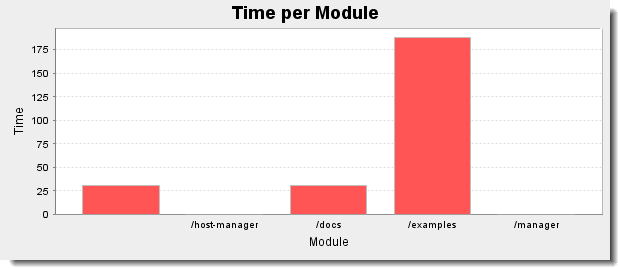
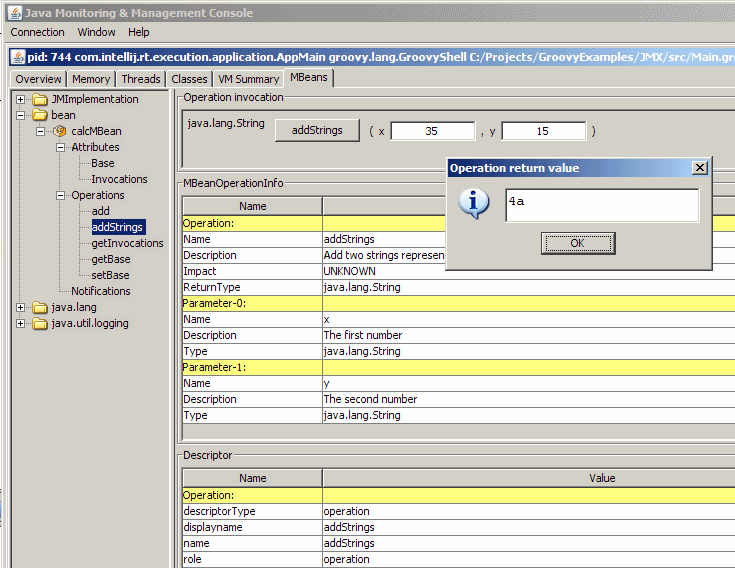
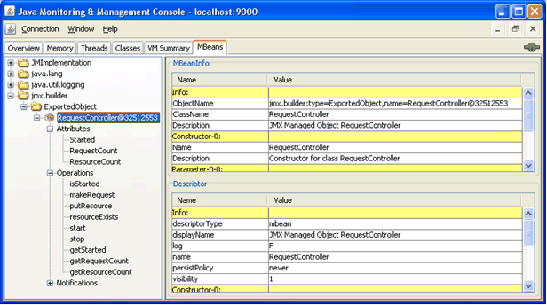

4. User Guides
4.1. Getting started
4.1.1. Download
In this download area, you will be able to download the distribution (binary and source), the Windows installer and the documentation for Groovy.
For a quick and effortless start on Mac OSX, Linux or Cygwin, you can use GVM (the Groovy enVironment Manager) to download and configure any Groovy version of your choice. Basic instructions can be found below.
Stable
-
Download zip: Binary Release | Source Release
-
Download documentation: JavaDoc and zipped online documentation
-
Combined binary / source / documentation bundle: Distribution bundle
You can learn more about this version in the release notes or in the JIRA release notes.
If you plan on using invokedynamic support, read those notes.
Snapshots
For those who want to test the very latest versions of Groovy and live on the bleeding edge, you can use our snapshot builds. As soon as a build succeeds on our continuous integration server a snapshot is deployed to Codehaus’ snapshot repository.
4.1.2. Maven Repository
If you wish to embed Groovy in your application, you may just prefer to point to your favourite maven repositories or the codehaus maven repository.
Stable Release
| Gradle | Maven | Explanation |
|---|---|---|
'org.codehaus.groovy:groovy:2.3.6' |
<groupId>org.codehaus.groovy</groupId> <artifactId>groovy</artifactId> <version>2.3.6</version> |
Just the core of groovy without the modules (see below). Treats Antlr, ASM, etc. as standard dependencies. Only useful if you happen to also use the same versions of these jars yourself as it will save you having two copies of these jars. |
'org.codehaus.groovy:groovy-$module:2.3.6' |
<groupId>org.codehaus.groovy</groupId> <artifactId>groovy-$module</artifactId> <version>2.3.6</version> |
"$module" stands for the different optional groovy modules "ant", "bsf", "console", "docgenerator", "groovydoc", "groovysh", "jmx", "json", "jsr223", "servlet", "sql", "swing", "test", "testng" and "xml". Example: <artifactId>groovy-sql</artifactId> |
'org.codehaus.groovy:groovy-all:2.3.6' |
<groupId>org.codehaus.groovy</groupId> <artifactId>groovy-all</artifactId> <version>2.3.6</version> |
The core plus all the modules. Also includes jar versions of Antlr, ASM, Commons-CLI and Retrotranslator runtime. Allows you or your other dependencies (e.g. Hibernate) to use other versions of these jars. Optional dependencies are marked as optional. You may need to include some of the optional dependencies to use some features of Groovy, e.g. AntBuilder, GroovyMBeans, etc. |
To use the InvokeDynamic version of the jars just append ':indy’ for Gradle or <classifier>indy</classifier> for Maven.
Snapshot Releases
In addition to the stable and milestone releases you can find intermediate SNAPSHOT releases at the codehaus snapshot maven repository.
4.1.3. GVM (the Groovy enVironment Manager)
This tool makes installing Groovy on any Bash platform (Mac OSX, Linux, Cygwin, Solaris or FreeBSD) very easy.
Simply open a new terminal and enter:
$ curl -s get.gvmtool.net | bashFollow the instructions on-screen to complete installation.
Open a new terminal or type the command:
$ source "$HOME/.gvm/bin/gvm-init.sh"Then install the latest stable Groovy:
$ gvm install groovyAfter installation is complete and you’ve made it your default version, test it with:
$ groovy -versionThat’s all there is to it!
4.1.4. Other ways to get Groovy
Installation on Mac OS X
Installation on Windows
If you’re on Windows, you can also use the NSIS Windows installer.
Other Distributions
You may download other distributions of Groovy from this site.
Source Code
If you prefer to live on the bleeding edge, you can also grab the source code from GitHub.
IDE plugin
If you are an IDE user, you can just grab the latest IDE plugin and follow the plugin installation instructions.
4.1.5. Install Binary
These instructions describe how to install a binary distribution of Groovy.
-
First, Download a binary distribution of Groovy and unpack it into some file on your local file system.
-
Set your
GROOVY_HOMEenvironment variable to the directory you unpacked the distribution. -
Add
GROOVY_HOME/binto yourPATHenvironment variable. -
Set your
JAVA_HOMEenvironment variable to point to your JDK. On OS X this is/Library/Java/Home, on other unixes its often/usr/javaetc. If you’ve already installed tools like Ant or Maven you’ve probably already done this step.
You should now have Groovy installed properly. You can test this by typing the following in a command shell:
groovyshWhich should create an interactive groovy shell where you can type Groovy statements. Or to run the Swing interactive console type:
groovyConsoleTo run a specific Groovy script type:
groovy SomeScript4.2. Differences with Java
Groovy tries to be as natural as possible for Java developers. We’ve tried to follow the principle of least surprise when designing Groovy, particularly for developers learning Groovy who’ve come from a Java background.
Here we list all the major differences between Java and Groovy.
4.2.1. Default imports
All these packages and classes are imported by default, i.e. you do not
have to use an explicit import statement to use them:
-
java.io.*
-
java.lang.*
-
java.math.BigDecimal
-
java.math.BigInteger
-
java.net.*
-
java.util.*
-
groovy.lang.*
-
groovy.util.*
4.2.2. Multi-methods
In Groovy, the methods which will be invoked are chosen at runtime. This is called runtime dispatch or multi-methods. It means that the method will be chosen based on the types of the arguments at runtime. In Java, this is the opposite: methods are chosen at compile time, based on the declared types.
The following code, written as Java code, can be compiled in both Java and Groovy, but it will behave differently:
int method(String arg) {
return 1;
}
int method(Object arg) {
return 2;
}
Object o = "Object";
int result = method(o);In Java, you would have:
assertEquals(2, result);Whereas in Groovy:
assertEquals(1, result);That is because Java will use the static information type, which is that o is declared as an Object, whereas
Groovy will choose at runtime, when the method is actually called. Since it is called with a String, then the
String version is called.
4.2.3. Array initializers
In Groovy, the { ... } block is reserved for closures. That means that you cannot create array literals with this
syntax:
int[] array = { 1, 2, 3}You actually have to use:
int[] array = [1,2,3]4.2.4. Package scope visibility
In Groovy, omitting a modifier on a field doesn’t result in a package-private field like in Java:
class Person {
String name
}Instead, it is used to create a property, that is to say a private field, an associated getter and an associated _setter.
It is possible to create a package-private field by annotating it with @PackageScope:
class Person {
@PackageScope String name
}4.2.5. ARM blocks
ARM (Automatic Resource Management) block from Java 7 are not supported in Groovy. Instead, Groovy provides various methods relying on closures, which have the same effect while being more idiomatic. For example:
Path file = Paths.get("/path/to/file");
Charset charset = Charset.forName("UTF-8");
try (BufferedReader reader = Files.newBufferedReader(file, charset)) {
String line;
while ((line = reader.readLine()) != null) {
System.out.println(line);
}
} catch (IOException e) {
e.printStackTrace();
}can be written like this:
new File('/path/to/file').eachLine('UTF-8') {
println it
}or, if you want a version closer to Java:
new File('/path/to/file').withReader('UTF-8') { reader ->
reader.eachLine {
println it
}
}4.2.6. Inner classes
The implementation of anonymous inner classes and nested classes follows the Java lead, but
you should not take out the Java Language Spec and keep shaking the head
about things that are different. The implementation done looks much like
what we do for groovy.lang.Closure, with some benefits and some
differences. Accessing private fields and methods for example can become
a problem, but on the other hand local variables don’t have to be final.
|
Static inner classes
Here’s an example of static inner class:
class A {
static class B {}
}
new A.B()The usage of static inner classes is the best supported one. If you absolutely need an inner class, you should make it a static one.
Anonymous Inner Classes
boolean called = false
Timer timer = new Timer()
timer.schedule(new TimerTask() {
void run() {
called = true
}
}, 0)
sleep 100
assert calledCreating Instances of Non-Static Inner Classes
In Java you can do this:
public class Y {
public class X {}
public X foo() {
return new X();
}
public static X createX(Y y) {
return y.new X();
}
}Groovy doesn’t support the y.new X() syntax. Instead, you have to write new X(y), like in the code below:
public class Y {
public class X {}
public X foo() {
return new X()
}
public static X createX(Y y) {
return new X(y)
}
}| Caution though, Groovy supports calling methods with one parameter without giving an argument. The parameter will then have the value null. Basically the same rules apply to calling a constructor. There is a danger that you will write new X() instead of new X(this) for example. Since this might also be the regular way we have not yet found a good way to prevent this problem. |
4.2.7. Lambdas
Java 8 supports lambdas and method references:
Runnable run = () -> System.out.println("Run");
list.forEach(System.out::println);Java 8 lambdas can be more or less considered as anonymous inner classes. Groovy doesn’t support that syntax, but has closures instead:
Runnable run = { println 'run' }
list.each { println it } // or list.each(this.&println)4.3. Groovy Development Kit (TBD)
4.3.1. Working with IO (TBD)
4.3.2. Working with collections (TBD)
4.3.3. Handy utilities
ConfigSlurper
ConfigSlurper is a utility class for reading configuration files defined in the form of Groovy scripts. Like it is
the case with Java *.properties files, ConfigSlurper allows a dot notation. But in addition, it allows for Closure scoped
configuration values and arbitrary object types.
def config = new ConfigSlurper().parse('''
app.date = new Date() (1)
app.age = 42
app { (2)
name = "Test${42}"
}
''')
assert config.app.date instanceof Date
assert config.app.age == 42
assert config.app.name == 'Test42'| 1 | Usage of the dot notation |
| 2 | Usage of Closure scopes as an alternative to the dot notation |
As can be seen in the above example, the parse method can be used to retrieve groovy.util.ConfigObject instances. The
ConfigObject is a specialized java.util.Map implementation that either returns the configured value or a new ConfigObject
instance but never null.
def config = new ConfigSlurper().parse('''
app.date = new Date()
app.age = 42
app.name = "Test${42}"
''')
assert config.test != null (1)| 1 | config.test has not been specified yet it returns a ConfigObject when being called. |
In the case of a dot being part of a configuration variable name, it can be escaped by using single or double quotes.
def config = new ConfigSlurper().parse('''
app."person.age" = 42
''')
assert config.app."person.age" == 42In addition, ConfigSlurper comes with support for environments. The environments method can be used to hand over
a Closure instance that itself may consist of a several sections. Let’s say we wanted to create a particular configuration
value for the development environment. When creating the ConfigSlurper instance we can use the ConfigSlurper(String)
constructor to specify the target environment.
def config = new ConfigSlurper('development').parse('''
environments {
development {
app.port = 8080
}
test {
app.port = 8082
}
production {
app.port = 80
}
}
''')
assert config.app.port == 8080
The ConfigSlurper environments aren’t restricted to any particular environment names. It solely depends on the
ConfigSlurper client code what value are supported and interpreted accordingly.
|
The environments method is built-in but the registerConditionalBlock method can be used to register other method names
in addition to the environments name.
def slurper = new ConfigSlurper()
slurper.registerConditionalBlock('myProject', 'developers') (1)
def config = slurper.parse('''
sendMail = true
myProject {
developers {
sendMail = false
}
}
''')
assert !config.sendMail| 1 | Once the new block is registered ConfigSlurper can parse it. |
For Java integration purposes the toProperties method can be used to convert the ConfigObject to a java.util.Properties
object that might be stored to a *.properties text file. Be aware though that the configuration values are converted to
String instances during adding them to the newly created Properties instance.
def config = new ConfigSlurper().parse('''
app.date = new Date()
app.age = 42
app {
name = "Test${42}"
}
''')
def properties = config.toProperties()
assert properties."app.date" instanceof String
assert properties."app.age" == '42'
assert properties."app.name" == 'Test42'Expando
The Expando class can be used to create a dynamically expandable object. Despite its name it does not use the
ExpandoMetaClass underneath. Each Expando object represents a standalone, dynamically-crafted instance that can be
extended with properties (or methods) at runtime.
def expando = new Expando()
expando.name = 'John'
assert expando.name == 'John'A special case occurs when a dynamic property registers a Closure code block. Once being registered it can be invoked
as it would be done with a method call.
def expando = new Expando()
expando.toString = { -> 'John' }
expando.say = { String s -> "John says: ${s}" }
assert expando as String == 'John'
assert expando.say('Hi') == 'John says: Hi'Observable list, map and set
Groovy comes with observable lists, maps and sets. Each of these collections trigger java.beans.PropertyChangeEvent events when elements
are added, removed or changed. Note that a PropertyChangeEvent is not only signaling that a certain event has
occurred, moreover, it holds information on the property name and the old/new value a certain property has been changed to.
Depending on the type of change that has happened, observable collections might fire more specialized PropertyChangeEvent
types. For example, adding an element to an observable list fires an ObservableList.ElementAddedEvent event.
def event (1)
def listener = {
if (it instanceof ObservableList.ElementEvent) { (2)
event = it
}
} as PropertyChangeListener
def observable = [1, 2, 3] as ObservableList (3)
observable.addPropertyChangeListener(listener) (4)
observable.add 42 (5)
assert event instanceof ObservableList.ElementAddedEvent
def elementAddedEvent = event as ObservableList.ElementAddedEvent
assert elementAddedEvent.changeType == ObservableList.ChangeType.ADDED
assert elementAddedEvent.index == 3
assert elementAddedEvent.oldValue == null
assert elementAddedEvent.newValue == 42| 1 | Declares a PropertyChangeEventListener that is capturing the fired events |
| 2 | ObservableList.ElementEvent and its descendant types are relevant for this listener |
| 3 | Registers the listener |
| 4 | Creates an ObservableList from the given list |
| 5 | Triggers an ObservableList.ElementAddedEvent event |
Be aware that adding an element in fact causes two events to be triggered. The first is of type ObservableList.ElementAddedEvent,
the second is a plain PropertyChangeEvent that informs listeners about the change of property size.
|
The ObservableList.ElementClearedEvent event type is another interesting one. Whenever multiple
elements are removed, for example when calling clear(), it holds the elements being removed from the list.
def event
def listener = {
if (it instanceof ObservableList.ElementEvent) {
event = it
}
} as PropertyChangeListener
def observable = [1, 2, 3] as ObservableList
observable.addPropertyChangeListener(listener)
observable.clear()
assert event instanceof ObservableList.ElementClearedEvent
def elementClearedEvent = event as ObservableList.ElementClearedEvent
assert elementClearedEvent.values == [1, 2, 3]
assert observable.size() == 0To get an overview of all the supported event types the reader is encouraged to have a look at the JavaDoc documentation or the source code of the observable collection in use.
ObservableMap and ObservableSet come with the same concepts as we have seen for ObservableList in this section.
4.4. Metaprogramming
The Groovy language supports two flavors of metaprogramming: runtime metaprogramming and compile-time metaprogramming. The first one allows altering the class model and the behavior of a program at runtime, while the second only occurs at compile-time. Both have pros and cons, that we will detail in this section.
4.4.1. Runtime metaprogramming (TBD)
GroovyObject interface (TBD)
invokeMethod (TBD)
get/setProperty (TBD)
get/setMetaClass (TBD)
get/setAttribute (TBD)
methodMissing
Groovy supports the concept of methodMissing. This method differs from invokeMethod in that it
is only invoked in the case of a failed method dispatch, when no method can be found for the given name and/or the
given arguments.
class Foo {
def methodMissing(String name, def args) {
return "this is me"
}
}
assert new Foo().someUnknownMethod(42l) == 'this is me'Typically when using methodMissing the code will react in some way that makes it possible for the next time the same
method is called, that it goes through the regular Groovy method dispatch logic.
For example consider dynamic finders in GORM. These are implemented in terms of methodMissing. The code resembles
something like this:
class GORM {
def dynamicMethods = [...] // an array of dynamic methods that use regex
def methodMissing(String name, args) {
def method = dynamicMethods.find { it.match(name) }
if(method) {
GORM.metaClass."$name" = { Object[] varArgs ->
method.invoke(delegate, name, varArgs)
}
return method.invoke(delegate,name, args)
}
else throw new MissingMethodException(name, delegate, args)
}
}Notice how, if we find a method to invoke then we dynamically register a new method on the fly using ExpandoMetaClass.
This is so that the next time the same method is called it is more efficient. This way methodMissing doesn’t have
the overhead of invokeMethod and is not expensive for the second call.
propertyMissing
Groovy supports the concept of propertyMissing for intercepting otherwise failing property resolution attempts. In the
case of a getter method, propertyMissing takes a single String argument resembling the property name:
class Foo {
def propertyMissing(String name) { name }
}
assert new Foo().boo == 'boo'The propertyMissing(String) method is only called when no getter method for the given property can be found by the Groovy
runtime.
For a setter methods a second propertyMissing definition can be added that takes an additional value argument:
class Foo {
def storage = [:]
def propertyMissing(String name, value) { storage[name] = value }
def propertyMissing(String name) { storage[name] }
}
def f = new Foo()
f.foo = "bar"
assert f.foo == "bar"As with methodMissing it is best practice to dynamically register new properties at runtime to improve the overall lookup
performance.
methodMissing and propertyMissing that deal with static methods and properties can be added via
the ExpandoMetaClass.
|
GroovyInterceptable (TBD)
Categories
There are situations where it is useful if a class not under control had additional methods. In order to enable this capability, Groovy implements a feature borrowed from Objective-C, called Categories.
Categories are implemented with so-called category classes. A category class is special in that it needs to meet certain pre-defined rules for defining extension methods.
There are a few categories that are included in the system for adding functionality to classes that make them more usable within the Groovy environment:
Category classes aren’t enabled by default. To use the methods defined in a category class it is necessary to apply
the scoped use method that is provided by the GDK and available from inside every Groovy object instance:
use(TimeCategory) {
println 1.minute.from.now (1)
println 10.hours.ago
def someDate = new Date() (2)
println someDate - 3.months
}| 1 | TimeCategory adds methods to Integer |
| 2 | TimeCategory adds methods to Date |
The use method takes the category class as its first parameter and a closure code block as second parameter. Inside the
Closure access to the category methods is available. As can be seen in the example above even JDK classes
like java.lang.Integer or java.util.Date can be enriched with user-defined methods.
A category needs not to be directly exposed to the user code, the following will also do:
class JPACategory{
// Let's enhance JPA EntityManager without getting into the JSR committee
static void persistAll(EntityManager em , Object[] entities) { //add an interface to save all
entities?.each { em.persist(it) }
}
}
def transactionContext = {
EntityManager em, Closure c ->
def tx = em.transaction
try {
tx.begin()
use(JPACategory) {
c()
}
tx.commit()
} catch (e) {
tx.rollback()
} finally {
//cleanup your resource here
}
}
// user code, they always forget to close resource in exception, some even forget to commit, let's not rely on them.
EntityManager em; //probably injected
transactionContext (em) {
em.persistAll(obj1, obj2, obj3)
// let's do some logics here to make the example sensible
em.persistAll(obj2, obj4, obj6)
}When we have a look at the groovy.time.TimeCategory class we see that the extension methods are all declared as static
methods. In fact, this is one of the requirements that must be met by category classes for its methods to be successfully added to
a class inside the use code block:
public class TimeCategory {
public static Date plus(final Date date, final BaseDuration duration) {
return duration.plus(date);
}
public static Date minus(final Date date, final BaseDuration duration) {
final Calendar cal = Calendar.getInstance();
cal.setTime(date);
cal.add(Calendar.YEAR, -duration.getYears());
cal.add(Calendar.MONTH, -duration.getMonths());
cal.add(Calendar.DAY_OF_YEAR, -duration.getDays());
cal.add(Calendar.HOUR_OF_DAY, -duration.getHours());
cal.add(Calendar.MINUTE, -duration.getMinutes());
cal.add(Calendar.SECOND, -duration.getSeconds());
cal.add(Calendar.MILLISECOND, -duration.getMillis());
return cal.getTime();
}
// ...Another requirement is the first argument of the static method must define the type the method is attached to once being activated. The other arguments are the normal arguments the method will take as parameters.
Because of the parameter and static method convention, category method definitions may be a bit less intuitive than
normal method definitions. As an alternative Groovy comes with a @Category annotation that transforms annotated classes
into category classes at compile-time.
class Distance {
def number
String toString() { "${number}m" }
}
@Category(Number)
class NumberCategory {
Distance getMeters() {
new Distance(number: this)
}
}
use (NumberCategory) {
assert 42.meters.toString() == '42m'
}Applying the @Category annotation has the advantage of being able to use instance methods without the target type as a
first parameter. The target type class is given as an argument to the annotation instead.
There is a distinct section on @Category in the compile-time metaprogramming section.
|
Metaclasses (TBD)
Custom metaclasses (TBD)
Per instance metaclass (TBD)
ExpandoMetaClass
Groovy comes with a special MetaClass the so-called ExpandoMetaClass. It is special in that it allows for dynamically
adding or changing methods, constructors, properties and even static methods by using a neat closure syntax.
Applying those modifications can be especially useful in mocking or stubbing scenarios as shown in the Testing Guide.
Every java.lang.Class is supplied by Groovy with a special metaClass property that will give you a reference to an
ExpandoMetaClass instance. This instance can then be used to add methods or change the behaviour of already existing
ones.
By default ExpandoMetaClass doesn’t do inheritance. To enable this you must call ExpandoMetaClass#enableGlobally()
before your app starts such as in the main method or servlet bootstrap.
|
The following sections go into detail on how ExpandoMetaClass can be used in various scenarios.
Once the ExpandoMetaClass is accessed by calling the metaClass property, methods can added by using either the left shift
<< or the = operator.
Note that the left shift operator is used to append a new method. If the method already exists
an exception will be thrown. If you want to replace a method you can use the = operator.
|
The operators are applied on a non-existent property of metaClass passing an instance of a Closure code block.
class Book {
String title
}
Book.metaClass.titleInUpperCase << {-> title.toUpperCase() }
def b = new Book(title:"The Stand")
assert "THE STAND" == b.titleInUpperCase()The example above shows how a new method can be added to a class by accessing the metaClass property and using the << or
= operator to assign a Closure code block. The Closure parameters are interpreted as method parameters. Parameterless methods
can be added by using the {-> ...} syntax.
ExpandoMetaClass supports two mechanisms for adding or overriding properties.
Firstly, it has support for declaring a mutable property by simply assigning a value to a property of metaClass:
class Book {
String title
}
Book.metaClass.author = "Stephen King"
def b = new Book()
assert "Stephen King" == b.authorAnother way is to add getter and/or setter methods by using the standard mechanisms for adding instance methods.
class Book {
String title
}
Book.metaClass.getAuthor << {-> "Stephen King" }
def b = new Book()
assert "Stephen King" == b.authorIn the source code example above the property is dictated by the closure and is a read-only property. It is feasible to add an equivalent setter method but then the property value needs to be stored for later usage. This could be done as shown in the following example.
class Book {
String title
}
def properties = Collections.synchronizedMap([:])
Book.metaClass.setAuthor = { String value ->
properties[System.identityHashCode(delegate) + "author"] = value
}
Book.metaClass.getAuthor = {->
properties[System.identityHashCode(delegate) + "author"]
}This is not the only technique however. For example in a servlet container one way might be to store the values in the currently executing request as request attributes (as is done in some cases in Grails).
Constructors can be added by using a special constructor property. Either the << or = operator can be used
to assign a Closure code block. The Closure arguments will become the constructor arguments when the code is
executed at runtime.
class Book {
String title
}
Book.metaClass.constructor << { String title -> new Book(title:title) }
def book = new Book('Groovy in Action - 2nd Edition')
assert book.title == 'Groovy in Action - 2nd Edition'| Be careful when adding constructors however, as it is very easy to get into stack overflow troubles. |
Static methods can be added using the same technique as instance methods with the addition of the static qualifier
before the method name.
class Book {
String title
}
Book.metaClass.static.create << { String title -> new Book(title:title) }
def b = Book.create("The Stand")With ExpandoMetaClass it is possible to use Groovy’s method pointer syntax to borrow methods from other classes.
class Person {
String name
}
class MortgageLender {
def borrowMoney() {
"buy house"
}
}
def lender = new MortgageLender()
Person.metaClass.buyHouse = lender.&borrowMoney
def p = new Person()
assert "buy house" == p.buyHouse()Since Groovy allows you to use Strings as property names this in turns allows you to dynamically create method and property names at runtime. To create a method with a dynamic name simply use the language feature of reference property names as strings.
class Person {
String name = "Fred"
}
def methodName = "Bob"
Person.metaClass."changeNameTo${methodName}" = {-> delegate.name = "Bob" }
def p = new Person()
assert "Fred" == p.name
p.changeNameToBob()
assert "Bob" == p.nameThe same concept can be applied to static methods and properties.
One application of dynamic method names can be found in the Grails web application framework. The concept of "dynamic codecs" is implemented by using dynamic method names.
HTMLCodec Classclass HTMLCodec {
static encode = { theTarget ->
HtmlUtils.htmlEscape(theTarget.toString())
}
static decode = { theTarget ->
HtmlUtils.htmlUnescape(theTarget.toString())
}
}The example above shows a codec implementation. Grails comes with various codec implementations each defined in a single class.
At runtime there will be multiple codec classes in the application classpath. At application startup the framework adds
a encodeXXX and a decodeXXX method to certain meta-classes where XXX is the first part of the codec class name (e.g.
encodeHTML). This mechanism is in the following shown in some Groovy pseudo-code:
def codecs = classes.findAll { it.name.endsWith('Codec') }
codecs.each { codec ->
Object.metaClass."encodeAs${codec.name-'Codec'}" = { codec.newInstance().encode(delegate) }
Object.metaClass."decodeFrom${codec.name-'Codec'}" = { codec.newInstance().decode(delegate) }
}
def html = '<html><body>hello</body></html>'
assert '<html><body>hello</body></html>' == html.encodeAsHTML()At runtime it is often useful to know what other methods or properties exist at the time the method is executed. ExpandoMetaClass
provides the following methods as of this writing:
-
getMetaMethod -
hasMetaMethod -
getMetaProperty -
hasMetaProperty
Why can’t you just use reflection? Well because Groovy is different, it has the methods that are "real" methods and methods that are available only at runtime. These are sometimes (but not always) represented as MetaMethods. The MetaMethods tell you what methods are available at runtime, thus your code can adapt.
This is of particular use when overriding invokeMethod, getProperty and/or setProperty.
Another feature of ExpandoMetaClass is that it allows to override the methods invokeMethod, getProperty and
setProperty, all of them can be found in the groovy.lang.GroovyObject class.
The following example shows how to override invokeMethod:
class Stuff {
def invokeMe() { "foo" }
}
Stuff.metaClass.invokeMethod = { String name, args ->
def metaMethod = Stuff.metaClass.getMetaMethod(name, args)
def result
if(metaMethod) result = metaMethod.invoke(delegate,args)
else {
result = "bar"
}
result
}
def stf = new Stuff()
assert "foo" == stf.invokeMe()
assert "bar" == stf.doStuff()The first step in the Closure code is to lookup the MetaMethod for the given name and arguments. If the method
can be found everything is fine and it is delegated to. If not, a dummy value is returned.
A MetaMethod is a method that is known to exist on the MetaClass whether added at runtime or at compile-time.
|
The same logic can be used to override setProperty or getProperty.
class Person {
String name = "Fred"
}
Person.metaClass.getProperty = { String name ->
def metaProperty = Person.metaClass.getMetaProperty(name)
def result
if(metaProperty) result = metaProperty.getProperty(delegate)
else {
result = "Flintstone"
}
result
}
def p = new Person()
assert "Fred" == p.name
assert "Flintstone" == p.otherThe important thing to note here is that instead of a MetaMethod a MetaProperty instance is looked up. If that exists
the getProperty method of the MetaProperty is called, passing the delegate.
ExpandoMetaClass even allows for overriding static method with a special invokeMethod syntax.
class Stuff {
static invokeMe() { "foo" }
}
Stuff.metaClass.'static'.invokeMethod = { String name, args ->
def metaMethod = Stuff.metaClass.getStaticMetaMethod(name, args)
def result
if(metaMethod) result = metaMethod.invoke(delegate,args)
else {
result = "bar"
}
result
}
assert "foo" == Stuff.invokeMe()
assert "bar" == Stuff.doStuff()The logic that is used for overriding the static method is the same as we’ve seen before for overriding instance methods. The
only difference is the access to the metaClass.static property and the call to getStaticMethodName for retrieving
the static MetaMethod instance.
It is possible to add methods onto interfaces with ExpandoMetaClass. To do this however, it must be enabled
globally using the ExpandoMetaClass.enableGlobally() method before application start-up.
List.metaClass.sizeDoubled = {-> delegate.size() * 2 }
def list = []
list << 1
list << 2
assert 4 == list.sizeDoubled()Extension modules
Extending existing classes
An extension module allows you to add new methods to existing classes, including classes which are precompiled, like classes from the JDK. Those new methods, unlike those defined through a metaclass or using a category, are available globally. For example, when you write:
def file = new File(...)
def contents = file.getText('utf-8')The getText method doesn’t exist on the File class. However, Groovy knows it because it is defined in a special
class, ResourceGroovyMethods:
public static String getText(File file, String charset) throws IOException {
return IOGroovyMethods.getText(newReader(file, charset));
}You may notice that the extension method is defined using a static method in a “helper” class (where various extension
methods are defined). The first argument of the getText method corresponds to the receiver, while additional parameters
correspond to the arguments of the extension method. So here, we are defining a method called getText on
the File class (because the first argument is of type File), which takes a single argument as a parameter (the encoding String).
The process of creating an extension module is simple:
-
write an extension class like above
-
write a module descriptor file
Then you have to make the extension module visible to Groovy, which is as simple as having the extension module classes and descriptor available on classpath. This means that you have the choice:
-
either provide the classes and module descriptor directly on classpath
-
or bundle your extension module into a jar for reusability
An extension module may add two kind of methods to a class:
-
instance methods (to be called on an instance of a class)
-
static methods (to be called on the class itself)
Instance methods
To add an instance method to an existing class, you need to create an extension class. For example, let’s say you
want to add a maxRetries method on Integer which accepts a closure and executes it at most n times until no
exception is thrown. To do that, you only need to write the following:
class MaxRetriesExtension { (1)
static void maxRetries(Integer self, Closure code) { (2)
int retries = 0
Throwable e
while (retries<self) {
try {
code.call()
break
} catch (Throwable err) {
e = err
retries++
}
}
if (retries==0 && e) {
throw e
}
}
}| 1 | The extension class |
| 2 | First argument of the static method corresponds to the receiver of the message, that is to say the extended instance |
Then, after having declared your extension class, you can call it this way:
int i=0
5.maxRetries {
i++
}
assert i == 1
i=0
try {
5.maxRetries {
throw new RuntimeException("oops")
}
} catch (RuntimeException e) {
assert i == 5
}Static methods
It is also possible to add static methods to a class. In that case, the static method needs to be defined in its own file:
class StaticStringExtension { (1)
static String greeting(String self) { (2)
'Hello, world!'
}
}| 1 | The static extension class |
| 2 | First argument of the static method corresponds to the class being extended and is unused |
In which case you can call it directly on the String class:
assert String.greeting() == 'Hello, world!'Module descriptor
For Groovy to be able to load your extension methods, you must declare
your extension helper classes. You must create a file named
org.codehaus.groovy.runtime.ExtensionModule into the
META-INF/services directory:
moduleName=Test module for specifications moduleVersion=1.0-test extensionClasses=support.MaxRetriesExtension staticExtensionClasses=support.StaticStringExtension
The module descriptor requires 4 keys:
-
moduleName : the name of your module
-
moduleVersion: the version of your module. Note that version number is only used to check that you don’t load the same module in two different versions.
-
extensionClasses: the list of extension helper classes for instance methods. You can provide several classes, given that they are comma separated.
-
staticExtensionClasses: the list of extension helper classes for static methods. You can provide several classes, given that they are comma separated.
Note that it is not required for a module to define both static helpers and instance helpers, and that you may add several classes to a single module. You can also extend different classes in a single module without problem. It is even possible to use different classes in a single extension class, but it is recommended to group extension methods into classes by feature set.
Extension modules and classpath
It’s worth noting that you can’t use an extension which is compiled at the same time as code using it. That means that to use an extension, it has to be available on classpath, as compiled classes, before the code using it gets compiled. Usually, this means that you can’t have the test classes in the same source unit as the extension class itself. Since in general, test sources are separated from normal sources and executed in another step of the build, this is not an issue.
Compatibility with type checking
Unlike categories, extension modules are compatible with type checking: if they are found on classpath, then the type checker is aware of the extension methods and will not complain when you call them. It is also compatible with static compilation.
4.4.2. Compile-time metaprogramming
Compile-time metaprogramming in Groovy allows code generation at compile-time. Those transformations are altering the Abstract Syntax Tree (AST) of a program, which is why in Groovy we call it AST transformations. AST transformations allow you to hook into the compilation process, modify the AST and continue the compilation process to generate regular bytecode. Compared to runtime metaprogramming, this has the advantage of making the changes visible in the class file itself (that is to say, in the bytecode). Making it visible in the bytecode is important for example if you want the transformations to be part of the class contract (implementing interfaces, extending abstract classes, …) or even if you need your class to be callable from Java (or other JVM languages). For example, an AST transformation can add methods to a class. If you do it with runtime metaprogramming, the new method would only be visible from Groovy. If you do the same using compile-time metaprogramming, the method would be visible from Java too. Last but not least, performance would likely be better with compile-time metaprogramming (because no initialization phase is required).
In this section, we will start with explaining the various compile-time transformations that are bundled with the Groovy distribution. In a subsequent section, we will describe how you can implement your own AST transformations and what are the disadvantages of this technique.
Available AST transformations
Groovy comes with various AST transformations covering different needs: reducing boilerplate (code generation), implementing design patterns (delegation, …), logging, declarative concurrency, cloning, safer scripting, tweaking the compilation, implementing Swing patterns, testing and eventually managing dependencies. If none of those AST transformations cover your needs, you can still implement your own, as show in section Developing your own AST transformations.
AST transformations can be separated into two categories:
-
global AST transformations are applied transparently, globally, as soon as they are found on compile classpath
-
local AST transformations are applied by annotating the source code with markers. Unlike global AST transformations, local AST transformations may support parameters.
Groovy doesn’t ship with any global AST transformation, but you can find a list of local AST transformations available for you to use in your code here:
Code generation transformations
This category of transformation includes AST transformations which help removing boilerplate code. This is typically code that you have to write but that does not carry any useful information. By autogenerating this boilerplate code, the code you have to write is left clean and concise and the chance of introducing an error by getting such boilerplate code incorrect is reduced.
The @ToString AST transformation generates a human readable toString representation of the class. For example,
annotating the Person class like below will automatically generate the toString method for you:
import groovy.transform.ToString
@ToString
class Person {
String firstName
String lastName
}With this definition, then the following assertion passes, meaning that a toString method taking the field valuess from
the class and printing them out has been generated:
def p = new Person(firstName: 'Jack', lastName: 'Nicholson')
assert p.toString() == 'Person(Jack, Nicholson)'The @ToString annotation accepts several parameters which are summarized in the following table:
| Attribute | Default value | Description | Example |
|---|---|---|---|
includeNames |
false |
Whether to include names of properties in generated toString. |
|
excludes |
Empty list |
List of properties to exclude from toString |
|
includes |
Empty list |
List of fields to include in toString |
|
includeSuper |
False |
Should superclass be included in toString |
|
includeFields |
False |
Should fields be included in toString, in addition to properties |
|
ignoreNulls |
False |
Should properties/fields with null value be displayed |
|
includePackage |
False |
Use fully qualified class name instead of simple name in toString |
|
cache |
False |
Cache the toString string. Should only be set to true if the class is immutable. |
|
The @EqualsAndHashCode AST transformation aims at generating equals and hashCode methods for you. The generated
hashcode follows the best practices as described in Effective Java by Josh Bloch:
import groovy.transform.EqualsAndHashCode
@EqualsAndHashCode
class Person {
String firstName
String lastName
}
def p1 = new Person(firstName: 'Jack', lastName: 'Nicholson')
def p2 = new Person(firstName: 'Jack', lastName: 'Nicholson')
assert p1==p2
assert p1.hashCode() == p2.hashCode()There are several options available to tweak the behavior of @EqualsAndHashCode:
| Attribute | Default value | Description | Example |
|---|---|---|---|
excludes |
Empty list |
List of properties to exclude from equals/hashCode |
|
includes |
Empty list |
List of fields to include in equals/hashCode |
|
callSuper |
False |
Whether to include super in equals and hashCode calculations |
|
includeFields |
False |
Should fields be included in equals/hashCode, in addition to properties |
|
cache |
False |
Cache the hashCode computation. Should only be set to true if the class is immutable. |
|
useCanEqual |
True |
Should equals call canEqual helper method. |
The @TupleConstructor annotation aims at eliminating boilerplate code by generating constructors for you. A tuple
constructor is created for each property, with default values (using the Java default values). For example, the
following code will generate 3 constructors:
import groovy.transform.TupleConstructor
@TupleConstructor
class Person {
String firstName
String lastName
}
// traditional map-style constructor
def p1 = new Person(firstName: 'Jack', lastName: 'Nicholson')
// generated tuple constructor
def p2 = new Person('Jack', 'Nicholson')
// generated tuple constructor with default value for second property
def p3 = new Person('Jack')The first constructor is a no-arg constructor which allows the traditional map-style construction. It is worth noting that if the first property (or field) has type LinkedHashMap or if there is a single Map, AbstractMap or HashMap property (or field), then the map-style mapping is not available.
The other constructors are generated by taking the properties in the order they are defined. Groovy will generate as many constructors as they are properties (or fields, depending on the options).
The @TupleConstructor AST transformation accepts several configuration options:
| Attribute | Default value | Description | Example |
|---|---|---|---|
excludes |
Empty list |
List of properties to exclude from tuple constructor generation |
|
includes |
Empty list |
List of fields to include in tuple constructor generation |
|
includeFields |
False |
Should fields be included in tuple constructor generation, in addition to properties |
|
includeProperties |
True |
Should properties be included in tuple constructor generation |
|
includeSuperFields |
False |
Should fields from super classes be included in tuple constructor generation |
|
includeSuperProperties |
True |
Should properties from super classes be included in tuple constructor generation |
|
callSuper |
False |
Should super properties be called within a call to the parent constructor rather than set as properties |
|
force |
False |
By default, the transformation will do nothing if a constructor is already defined. Setting this property to true, the constructor will be generated and it’s your responsability to ensure that no duplicate constructor is defined |
See javadocs |
The @Canonical AST transformation combines the effects of the @ToString,
@EqualsAndHashCode and @TupleConstructor
annotations:
import groovy.transform.Canonical
@Canonical
class Person {
String firstName
String lastName
}
def p1 = new Person(firstName: 'Jack', lastName: 'Nicholson')
assert p1.toString() == 'Person(Jack, Nicholson)' // Effect of @ToString
def p2 = new Person('Jack','Nicholson') // Effect of @TupleConstructor
assert p2.toString() == 'Person(Jack, Nicholson)'
assert p1==p2 // Effect of @EqualsAndHashCode
assert p1.hashCode()==p2.hashCode() // Effect of @EqualsAndHashCodeA similar immutable class can be generated using the @Immutable AST transformation instead.
The @Canonical AST transformation supports several configuration options:
| Attribute | Default value | Description | Example |
|---|---|---|---|
excludes |
Empty list |
List of properties to exclude from tuple constructor generation |
|
includes |
Empty list |
List of fields to include in tuple constructor generation |
|
The @InheritConstructor AST transformation aims at generating constructors matching super constructors for you. This
is in particular useful when overridding exception classes:
import groovy.transform.InheritConstructors
@InheritConstructors
class CustomException extends Exception {}
// all those are generated constructors
new CustomException()
new CustomException("A custom message")
new CustomException("A custom message", new RuntimeException())
new CustomException(new RuntimeException())
// Java 7 only
// new CustomException("A custom message", new RuntimeException(), false, true)The @Category AST transformation simplifies the creation of Groovy categories. Historically, a Groovy category was
written like this:
class TripleCategory {
public static Integer triple(Integer self) {
3*self
}
}
use (TripleCategory) {
assert 9 == 3.triple()
}The @Category transformation lets you write the same using an instance-style class, rather that a static class style.
This removes the need for having the first argument of each method being the receiver. The category can be written like
this:
@Category(Integer)
class TripleCategory {
public Integer triple() { 3*this }
}
use (TripleCategory) {
assert 9 == 3.triple()
}Note that the mixed in class can be referenced using this instead. It’s also worth noting that using instance fields
in a category class is inherently unsafe: categories are not stateful (like traits).
The @IndexedProperty annotation aims at generating indexed getters/setters for properties of list/array types.
This is in particular useful if you want to use a Groovy class from Java. While Groovy supports GPath to access properties,
this is not available from Java. The @IndexedProperty annotation will generate indexed properties of the following
form:
class SomeBean {
@IndexedProperty String[] someArray = new String[2]
@IndexedProperty List someList = []
}
def bean = new SomeBean()
bean.setSomeArray(0, 'value')
bean.setSomeList(0, 123)
assert bean.someArray[0] == 'value'
assert bean.someList == [123]The @Lazy AST transformation implements lazy initialization of fields. For example, the following code:
class SomeBean {
@Lazy LinkedList myField
}will produce the following code:
List $myField
List getMyField() {
if ($myField!=null) { return $myField }
else {
$myField = new LinkedList()
return $myField
}
}The default value which is used to initialize the field is the default constructor of the declaration type. It is possible to define a default value by using a closure on the right hand side of the property assignment, as in the following example:
class SomeBean {
@Lazy LinkedList myField = { ['a','b','c']}()
}
In that case, the generated code looks like the following:
List $myField
List getMyField() {
if ($myField!=null) { return $myField }
else {
$myField = { ['a','b','c']}()
return $myField
}
}
If the field is declared volatile then initialization will be synchronized using the double-checked locking pattern.
Using the soft=true parameter, the helper field will use a SoftReference instead, providing a simple way to
implement caching. In that case, if the garbage collector decides to collect the reference, initialization will occur
the next time the field is accessed.
The @Newify AST transformation is used to bring alternative syntaxes to construct objects:
-
Using the
Pythonstyle:
@Newify([Tree,Leaf])
class TreeBuilder {
Tree tree = Tree(Leaf('A'),Leaf('B'),Tree(Leaf('C')))
}
-
or using the
Rubystyle:
@Newify([Tree,Leaf])
class TreeBuilder {
Tree tree = Tree.new(Leaf.new('A'),Leaf.new('B'),Tree.new(Leaf.new('C')))
}
The Ruby version can be disabled by setting the auto flag to false.
The @Sortable AST transformation is used to help write classes that are Comparable and easily sorted by
numerous properties. It is easy to use as shown in the following example where we annotate the Person class:
import groovy.transform.Sortable
@Sortable class Person {
String first
String last
Integer born
}The generated class has the following properties:
-
it implements the
Comparableinterface -
it contains a
compareTomethod with an implementation based on the natural ordering of thefirst,lastandbornproperties -
it has three methods returning comparators:
comparatorByFirst,comparatorByLastandcomparatorByBorn.
The generated compareTo method will look like this:
public int compareTo(java.lang.Object obj) {
if (this.is(obj)) {
return 0
}
if (!(obj instanceof Person)) {
return -1
}
java.lang.Integer value = this.first <=> obj.first
if (value != 0) {
return value
}
value = this.last <=> obj.last
if (value != 0) {
return value
}
value = this.born <=> obj.born
if (value != 0) {
return value
}
return 0
}As an example of the generated comparators, the comparatorByFirst comparator will have a compare method that looks like this:
public int compare(java.lang.Object arg0, java.lang.Object arg1) {
if (arg0 == arg1) {
return 0
}
if (arg0 != null && arg1 == null) {
return -1
}
if (arg0 == null && arg1 != null) {
return 1
}
return arg0.first <=> arg1.first
}The Person class can be used wherever a Comparable is expected and the generated comparators
wherever a Comparator is expected as shown by these examples:
def people = [
new Person(first: 'Johnny', last: 'Depp', born: 1963),
new Person(first: 'Keira', last: 'Knightley', born: 1985),
new Person(first: 'Geoffrey', last: 'Rush', born: 1951),
new Person(first: 'Orlando', last: 'Bloom', born: 1977)
]
assert people[0] > people[2]
assert people.sort()*.last == ['Rush', 'Depp', 'Knightley', 'Bloom']
assert people.sort(false, Person.comparatorByFirst())*.first == ['Geoffrey', 'Johnny', 'Keira', 'Orlando']
assert people.sort(false, Person.comparatorByLast())*.last == ['Bloom', 'Depp', 'Knightley', 'Rush']
assert people.sort(false, Person.comparatorByBorn())*.last == ['Rush', 'Depp', 'Bloom', 'Knightley']Normally, all properties are used in the generated compareTo method in the priority order in which they are defined.
You can include or exclude certain properties from the generated compareTo method by giving a list of property names
in the includes or excludes annotation attributes. If using includes, the order of the property names given will
determine the priority of properties when comparing. To illustrate, consider the following Person class definition:
@Sortable(includes='first,born') class Person {
String last
int born
String first
}It will have two comparator methods comparatorByFirst and comparatorByBorn and the generated compareTo method will look like this:
public int compareTo(java.lang.Object obj) {
if (this.is(obj)) {
return 0
}
if (!(obj instanceof Person)) {
return -1
}
java.lang.Integer value = this.first <=> obj.first
if (value != 0) {
return value
}
value = this.born <=> obj.born
if (value != 0) {
return value
}
return 0
}This Person class can be used as follows:
def people = [
new Person(first: 'Ben', last: 'Affleck', born: 1972),
new Person(first: 'Ben', last: 'Stiller', born: 1965)
]
assert people.sort()*.last == ['Stiller', 'Affleck']The @Builder AST transformation is used to help write classes that can be created using fluent api calls.
The transform supports multiple building strategies to cover a range of cases and there are a number
of configuration options to customize the building process. If you’re an AST hacker, you can also define your own
strategy class. The following table lists the available strategies that are bundled with Groovy and the
configuration options each strategy supports.
Strategy |
Description |
builderClassName |
builderMethodName |
buildMethodName |
prefix |
includes/excludes |
|
chained setters |
n/a |
n/a |
n/a |
yes, default "set" |
yes |
|
explicit builder class, class being built untouched |
n/a |
n/a |
yes, default "build" |
yes, default "" |
yes |
|
creates a nested helper class |
yes, default <TypeName>Builder |
yes, default "builder" |
yes, default "build" |
yes, default "" |
yes |
|
creates a nested helper class providing type-safe fluent creation |
yes, default <TypeName>Initializer |
yes, default "createInitializer" |
yes, default "create" but usually only used internally |
yes, default "" |
yes |
To use the SimpleStrategy, annotate your Groovy class using the @Builder annotation, and specify the strategy as shown in this example:
import groovy.transform.builder.*
@Builder(builderStrategy=SimpleStrategy)
class Person {
String first
String last
Integer born
}Then, just call the setters in a chained fashion as shown here:
def p1 = new Person().setFirst('Johnny').setLast('Depp').setBorn(1963)
assert "$p1.first $p1.last" == 'Johnny Depp'For each property, a generated setter will be created which looks like this:
public Person setFirst(java.lang.String first) {
this.first = first
return this
}You can specify a prefix as shown in this example:
import groovy.transform.builder.*
@Builder(builderStrategy=SimpleStrategy, prefix="")
class Person {
String first
String last
Integer born
}And calling the chained setters would look like this:
def p = new Person().first('Johnny').last('Depp').born(1963)
assert "$p.first $p.last" == 'Johnny Depp'You can use the SimpleStrategy in conjunction with @Canonical. If your @Builder annotation doesn’t have
explicit includes or excludes annotation attributes but your @Canonical annotation does, the ones
from @Canonical will be re-used for @Builder.
The annotation attributes builderClassName, buildMethodName, builderMethodName and forClass are not supported for this strategy.
Groovy already has built-in building mechanisms. Don’t rush to using @Builder if the built-in mechanisms meet your needs. Some examples:
|
def p2 = new Person(first: 'Keira', last: 'Knightley', born: 1985)
def p3 = new Person().with {
first = 'Geoffrey'
last = 'Rush'
born = 1951
}To use the ExternalStrategy, create and annotate a Groovy builder class using the @Builder annotation, specify the
class the builder is for using forClass and indicate use of the ExternalStrategy.
Suppose you have the following class you would like a builder for:
class Person {
String first
String last
int born
}you explicitly create and use your builder class as follows:
import groovy.transform.builder.*
@Builder(builderStrategy=ExternalStrategy, forClass=Person)
class PersonBuilder { }
def p = new PersonBuilder().first('Johnny').last('Depp').born(1963).build()
assert "$p.first $p.last" == 'Johnny Depp'Note that the (normally empty) builder class you provide will be filled in with appropriate setters and a build method. The generated build method will look something like:
public Person build() {
Person _thePerson = new Person()
_thePerson.first = first
_thePerson.last = last
_thePerson.born = born
return _thePerson
}The class you are creating the builder for can be any Java or Groovy class following the normal JavaBean conventions, e.g. a no-arg constructor and setters for the properties. Here is an example using a Java class:
import groovy.transform.builder.*
@Builder(builderStrategy=ExternalStrategy, forClass=javax.swing.DefaultButtonModel)
class ButtonModelBuilder {}
def model = new ButtonModelBuilder().enabled(true).pressed(true).armed(true).rollover(true).selected(true).build()
assert model.isArmed()
assert model.isPressed()
assert model.isEnabled()
assert model.isSelected()
assert model.isRollover()The generated builder can be customised using the prefix, includes, excludes and buildMethodName annotation attributes.
Here is an example illustrating various customisations:
import groovy.transform.builder.*
import groovy.transform.Canonical
@Canonical
class Person {
String first
String last
int born
}
@Builder(builderStrategy=ExternalStrategy, forClass=Person, includes=['first', 'last'], buildMethodName='create', prefix='with')
class PersonBuilder { }
def p = new PersonBuilder().withFirst('Johnny').withLast('Depp').create()
assert "$p.first $p.last" == 'Johnny Depp'The builderMethodName and builderClassName annotation attributes for @Builder aren’t applicable for this strategy.
You can use the ExternalStrategy in conjunction with @Canonical. If your @Builder annotation doesn’t have
explicit includes or excludes annotation attributes but the @Canonical annotation of the class you are creating
the builder for does, the ones from @Canonical will be re-used for @Builder.
To use the DefaultStrategy, annotate your Groovy class using the @Builder annotation as shown in this example:
import groovy.transform.builder.Builder
@Builder
class Person {
String firstName
String lastName
int age
}
def person = Person.builder().firstName("Robert").lastName("Lewandowski").age(21).build()
assert person.firstName == "Robert"
assert person.lastName == "Lewandowski"
assert person.age == 21If you want, you can customize various aspects of the building process
using the builderClassName, buildMethodName, builderMethodName, prefix, includes and excludes annotation attributes,
some of which are used in the example here:
import groovy.transform.builder.Builder
@Builder(buildMethodName='make', builderMethodName='maker', prefix='with', excludes='age')
class Person {
String firstName
String lastName
int age
}
def p = Person.maker().withFirstName("Robert").withLastName("Lewandowski").make()
assert "$p.firstName $p.lastName" == "Robert Lewandowski"This strategy also supports annotating static methods and constructors. In this case, the static method or constructor
parameters become the properties to use for building purposes and in the case of static methods, the return type
of the method becomes the target class being built. If you have more than one @Builder annotation used within
a class (at either the class, method or constructor positions) then it is up to you to ensure that the generated
helper classes and factory methods have unique names (i.e. no more than one can use the default name values).
Here is an example highlighting method and constructor usage (and also illustrating the renaming required for unique names).
import groovy.transform.builder.*
import groovy.transform.*
@ToString
@Builder
class Person {
String first, last
int born
Person(){}
@Builder(builderClassName='MovieBuilder', builderMethodName='byRoleBuilder')
Person(String roleName) {
if (roleName == 'Jack Sparrow') {
this.first = 'Johnny'; this.last = 'Depp'; this.born = 1963
}
}
@Builder(builderClassName='NameBuilder', builderMethodName='nameBuilder', prefix='having', buildMethodName='fullName')
static String join(String first, String last) {
first + ' ' + last
}
@Builder(builderClassName='SplitBuilder', builderMethodName='splitBuilder')
static Person split(String name, int year) {
def parts = name.split(' ')
new Person(first: parts[0], last: parts[1], born: year)
}
}
assert Person.splitBuilder().name("Johnny Depp").year(1963).build().toString() == 'Person(Johnny, Depp, 1963)'
assert Person.byRoleBuilder().roleName("Jack Sparrow").build().toString() == 'Person(Johnny, Depp, 1963)'
assert Person.nameBuilder().havingFirst('Johnny').havingLast('Depp').fullName() == 'Johnny Depp'
assert Person.builder().first("Johnny").last('Depp').born(1963).build().toString() == 'Person(Johnny, Depp, 1963)'The forClass annotation attribute is not supported for this strategy.
To use the InitializerStrategy, annotate your Groovy class using the @Builder annotation, and specify the strategy as shown in this example:
import groovy.transform.builder.*
import groovy.transform.*
@ToString
@Builder(builderStrategy=InitializerStrategy)
class Person {
String firstName
String lastName
int age
}Your class will be locked down to have a single public constructor taking a "fully set" initializer. It will also have a factory method to create the initializer. These are used as follows:
@CompileStatic
def firstLastAge() {
assert new Person(Person.createInitializer().firstName("John").lastName("Smith").age(21)).toString() == 'Person(John, Smith, 21)'
}
firstLastAge()Any attempt to use the initializer which doesn’t involve setting all the properties (though order is not important) will result in
a compilation error. If you don’t need this level of strictness, you don’t need to use @CompileStatic.
You can use the InitializerStrategy in conjunction with @Canonical and @Immutable. If your @Builder annotation
doesn’t have explicit includes or excludes annotation attributes but your @Canonical annotation does, the ones
from @Canonical will be re-used for @Builder. Here is an example using @Builder with @Immutable:
import groovy.transform.builder.*
import groovy.transform.*
@Builder(builderStrategy=InitializerStrategy)
@Immutable
class Person {
String first
String last
int born
}
@CompileStatic
def createFirstLastBorn() {
def p = new Person(Person.createInitializer().first('Johnny').last('Depp').born(1963))
assert "$p.first $p.last $p.born" == 'Johnny Depp 1963'
}
createFirstLastBorn()The annotation attribute forClass is not supported for this strategy.
Class design annotations
This category of annotations are aimed at simplifying the implementation of well-known design patterns (delegation, singleton, …) by using a declarative style.
The @Delegate AST transformation aims at implementing the delegation design pattern. In the following class:
class Event {
@Delegate Date when
String title
}The when field is annotated with @Delegate, meaning that the Event class will delegate calls to Date methods
to the when field. In this case, the generated code looks like this:
class Event {
Date when
String title
boolean before(Date other) {
when.before(other)
}
// ...
}Then you can call the before method, for example, directly on the Event class:
def ev = new Event(title:'Groovy keynote', when: Date.parse('yyyy/MM/dd', '2013/09/10'))
def now = new Date()
assert ev.before(now)The behavior of the @Delegate AST transformation can be changed using the following parameters:
| Attribute | Default value | Description | Example |
|---|---|---|---|
interfaces |
True |
Should the interfaces implemented by the field be implemented by the class too |
|
deprecated |
false |
If true, also delegates methods annotated with @Deprecated |
|
methodAnnotations |
False |
Whether to carry over annotations from the methods of the delegate to your delegating method. |
|
parameterAnnotations |
False |
Whether to carry over annotations from the method parameters of the delegate to your delegating method. |
|
excludes |
Empty array |
A list of methods to be excluded from delegation. For more fine-grained control, see also |
|
includes |
Empty array |
A list of methods to be included in delegation. For more fine-grained control, see also |
|
excludeTypes |
Empty array |
A list of interfaces containing method signatures to be excluded from delegation |
|
includeTypes |
Empty array |
A list of interfaces containing method signatures to be included in delegation |
|
The @Immutable AST transformation simplifies the creation of immutable classes, that is to say classes for which
members are deemed immutable. For that, all you have to do is annotating the class like in the following example:
import groovy.transform.Immutable
@Immutable
class Point {
int x
int y
}Immutable classes generated with @Immutable are automatically made final. For a class to be immutable, you have to
make sure that properties are of an immutable type (primitive or boxed types), of a known-immutable type or another
class annotated with @Immutable. The effect of applying @Immutable to a class are pretty similar to those of
applying the @Canonical AST transformation, but with an immutable class: automatic generation of
toString, equals and hashCode methods for example, but trying to modify a property would throw a ReadOnlyPropertyException
in that case.
Since @Immutable relies on a predefined list of known immutable classes (like java.net.URI or java.lang.String
and fails if you use a type which is not in that list, you are allowed to instruct the transformation that some types
are deemed immutable thanks to the following parameters:
| Attribute | Default value | Description | Example |
|---|---|---|---|
knownImmutableClasses |
Empty list |
A list of classes which are deemed immutable. |
|
knownImmutables |
Empty list |
A list of property names which are deemed immutable. |
|
copyWith |
false |
A boolean whether to generate a |
|
The @Memoized AST transformations simplifies the implementation of caching by allowing the result of method calls
to be cached just by annotating the method with @Memoized. Let’s imagine the following method:
long longComputation(int seed) {
// slow computation
Thread.sleep(1000*seed)
System.nanoTime()
}This emulates a long computation, based on the actual parameters of the method. Without @Memoized, each method call
would take several seconds plus it would return a random result:
def x = longComputation(1)
def y = longComputation(1)
assert x!=yAdding @Memoized changes the semantics of the method by adding caching, based on the parameters:
@Memoized
long longComputation(int seed) {
// slow computation
Thread.sleep(1000*seed)
System.nanoTime()
}
def x = longComputation(1) // returns after 1 second
def y = longComputation(1) // returns immediatly
def z = longComputation(2) // returns after 2 seconds
assert x==y
assert x!=zThe size of the cache can be configured using two optional parameters:
-
protectedCacheSize: the number of results which are guaranteed not to be cleared after garbage collection
-
maxCacheSize: the maximum number of results that can be kept in memory
By default, the size of the cache is unlimited and no cache result is protected from garbage collection. Setting a protectedCacheSize>0 would create an unlimited cache with some results protected. Setting maxCacheSize>0 would create a limited cache but without any protection from garbage protection. Setting both would create a limited, protected cache.
The @Singleton annotation can be used to implement the singleton design pattern on a class. The singleton instance
is defined eagerly by default, using class initialization, or lazily, in which case the field is initialized using
double checked locking.
@Singleton
class GreetingService {
String greeting(String name) { "Hello, $name!" }
}
assert GreetingService.instance.greeting('Bob') == 'Hello, Bob!'By default, the singleton is created eagerly when the class is initialized and available through the instance property.
It is possible to change the name of the singleton using the property parameter:
@Singleton(property='theOne')
class GreetingService {
String greeting(String name) { "Hello, $name!" }
}
assert GreetingService.theOne.greeting('Bob') == 'Hello, Bob!'And it is also possible to make initialization lazy using the lazy parameter:
class Collaborator {
public static boolean init = false
}
@Singleton(lazy=true,strict=false)
class GreetingService {
static void init() {}
GreetingService() {
Collaborator.init = true
}
String greeting(String name) { "Hello, $name!" }
}
GreetingService.init() // make sure class is initialized
assert Collaborator.init == false
GreetingService.instance
assert Collaborator.init == true
assert GreetingService.instance.greeting('Bob') == 'Hello, Bob!'In this example, we also set the strict parameter to false, which allows us to define our own constructor.
Deprecated. Consider using traits instead.
Logging improvements
Groovy provides AST transformation that helps integrating with the most widely used logging frameworks. It’s worth noting that annotating a class with one of those annotations doesn’t prevent you from adding the appropriate logging framework on classpath.
All transformations work in a similar way:
-
add static final
logfield corresponding to the logger -
wrap all calls to
log.level()into the appropriatelog.isLevelEnabledguard, depending on the underlying framework
Those transformations support two parameters:
-
value(defaultlog) corresponds to the name of the logger field -
category(defaults to the class name) is the name of the logger category
The first logging AST transformation available is the @Log annotation which relies on the JDK logging framework. Writing:
@groovy.util.logging.Log
class Greeter {
void greet() {
log.info 'Called greeter'
println 'Hello, world!'
}
}is equivalent to writing:
import java.util.logging.Level
import java.util.logging.Logger
class Greeter {
private static final Logger log = Logger.getLogger(Greeter.name)
void greet() {
if (log.isLoggable(Level.INFO)) {
log.info 'Called greeter'
}
println 'Hello, world!'
}
}Groovy supports the Apache Commons Logging framework using to the
@Commons annotation. Writing:
@groovy.util.logging.Commons
class Greeter {
void greet() {
log.debug 'Called greeter'
println 'Hello, world!'
}
}is equivalent to writing:
import org.apache.commons.logging.LogFactory
import org.apache.commons.logging.Log
class Greeter {
private static final Log log = LogFactory.getLog(Greeter)
void greet() {
if (log.isDebugEnabled()) {
log.debug 'Called greeter'
}
println 'Hello, world!'
}
}Groovy supports the Apache Log4j 1.x framework using to the
@Log4j annotation. Writing:
@groovy.util.logging.Log4j
class Greeter {
void greet() {
log.debug 'Called greeter'
println 'Hello, world!'
}
}is equivalent to writing:
import org.apache.log4j.Logger
class Greeter {
private static final Logger log = Logger.getLogger(Greeter)
void greet() {
if (log.isDebugEnabled()) {
log.debug 'Called greeter'
}
println 'Hello, world!'
}
}Groovy supports the Apache Log4j 2.x framework using to the
@Log4j2 annotation. Writing:
@groovy.util.logging.Log4j2
class Greeter {
void greet() {
log.debug 'Called greeter'
println 'Hello, world!'
}
}is equivalent to writing:
import org.apache.logging.log4j.LogManager
import org.apache.logging.log4j.Logger
class Greeter {
private static final Logger log = LogManager.getLogger(Greeter)
void greet() {
if (log.isDebugEnabled()) {
log.debug 'Called greeter'
}
println 'Hello, world!'
}
}Groovy supports the Simple Logging Facade for Java (SLF4J) framework using to the
@Slf4j annotation. Writing:
@groovy.util.logging.Slf4j
class Greeter {
void greet() {
log.debug 'Called greeter'
println 'Hello, world!'
}
}is equivalent to writing:
import org.slf4j.LoggerFactory
import org.slf4j.Logger
class Greeter {
private static final Logger log = LoggerFactory.getLogger(Greeter)
void greet() {
if (log.isDebugEnabled()) {
log.debug 'Called greeter'
}
println 'Hello, world!'
}
}Declarative concurrency
The Groovy language provides a set of annotations aimed at simplifying common concurrency patterns in a declarative approach.
The @Synchronized AST transformations works in a similar way to the synchronized keyword but locks on different
objects for safer concurrency. It can be applied on any method or static method:
import groovy.transform.Synchronized
import java.util.concurrent.Executors
import java.util.concurrent.TimeUnit
class Counter {
int cpt
@Synchronized
int incrementAndGet() {
cpt++
}
int get() {
cpt
}
}Writing this is equivalent to creating a lock object and wrapping the whole method into a synchronized block:
class Counter {
int cpt
private final Object $lock = new Object()
int incrementAndGet() {
synchronized($lock) {
cpt++
}
}
int get() {
cpt
}
}By default, @Synchronized creates a field named $lock (or $LOCK for a static method) but you can make it use any
field you want by specifying the value attribute, like in the following example:
import groovy.transform.Synchronized
import java.util.concurrent.Executors
import java.util.concurrent.TimeUnit
class Counter {
int cpt
private final Object myLock = new Object()
@Synchronized('myLock')
int incrementAndGet() {
cpt++
}
int get() {
cpt
}
}The @WithReadLock AST transformation works in conjunction with the @WithWriteLock transformation
to provide read/write synchronization using the ReentrantReadWriteLock facility that the JDK provides. The annotation
can be added to a method or a static method. It will transparently create a $reentrantLock final field (or
$REENTRANTLOCK for a static method) and proper synchronization code will be added. For example, the following code:
import groovy.transform.WithReadLock
import groovy.transform.WithWriteLock
class Counters {
public final Map<String,Integer> map = [:].withDefault { 0 }
@WithReadLock
int get(String id) {
map.get(id)
}
@WithWriteLock
void add(String id, int num) {
Thread.sleep(200) // emulate long computation
map.put(id, map.get(id)+num)
}
}is equivalent to this:
import groovy.transform.WithReadLock as WithReadLock
import groovy.transform.WithWriteLock as WithWriteLock
public class Counters {
private final Map<String, Integer> map
private final java.util.concurrent.locks.ReentrantReadWriteLock $reentrantlock
public int get(java.lang.String id) {
$reentrantlock.readLock().lock()
try {
map.get(id)
}
finally {
$reentrantlock.readLock().unlock()
}
}
public void add(java.lang.String id, int num) {
$reentrantlock.writeLock().lock()
try {
java.lang.Thread.sleep(200)
map.put(id, map.get(id) + num )
}
finally {
$reentrantlock.writeLock().unlock()
}
}
}Both @WithReadLock and @WithWriteLock support specifying an alternative lock object. In that case, the referenced
field must be declared by the user, like in the following alternative:
import groovy.transform.WithReadLock
import groovy.transform.WithWriteLock
import java.util.concurrent.locks.ReentrantReadWriteLock
class Counters {
public final Map<String,Integer> map = [:].withDefault { 0 }
private final ReentrantReadWriteLock customLock = new ReentrantReadWriteLock()
@WithReadLock('customLock')
int get(String id) {
map.get(id)
}
@WithWriteLock('customLock')
void add(String id, int num) {
Thread.sleep(200) // emulate long computation
map.put(id, map.get(id)+num)
}
}For details
-
See Javadoc for
groovy.transform.WithReadLock -
See Javadoc for
groovy.transform.WithWriteLock
Easier cloning and externalizing
Groovy provides two annotations aimed at facilitating the implementation of Clonable and Externalizable interfaces,
respectively named @AutoClone and @AutoExternalize.
The @AutoClone annotation is aimed at implementing the @java.lang.Cloneable interface using various strategies, thanks to the style parameter:
-
the default
AutoCloneStyle.CLONEstrategy callssuper.clone()first thenclone()on each cloneable property -
the
AutoCloneStyle.SIMPLEstrategy uses a regular constructor call and copies properties from the source to the clone -
the
AutoCloneStyle.COPY_CONSTRUCTORstrategy creates and uses a copy constructor -
the
AutoCloneStyle.SERIALIZATIONstrategy uses serialization (or externalization) to clone the object
Each of those strategies have pros and cons which are discussed in the Javadoc for groovy.transform.AutoClone and groovy.transform.AutoCloneStyle .
For example, the following example:
import groovy.transform.AutoClone
@AutoClone
class Book {
String isbn
String title
List<String> authors
Date publicationDate
}is equivalent to this:
class Book implements Cloneable {
String isbn
String title
List<String> authors
Date publicationDate
public Book clone() throws CloneNotSupportedException {
Book result = super.clone()
result.authors = authors instanceof Cloneable ? (List) authors.clone() : authors
result.publicationDate = publicationDate.clone()
result
}
}Note that the String properties aren’t explicitly handled because Strings are immutable and the clone() method from Object will copy the String references. The same would apply to primitive fields and most of the concrete subclasses of java.lang.Number.
In addition to cloning styles, @AutoClone supports multiple options:
| Attribute | Default value | Description | Example |
|---|---|---|---|
excludes |
Empty list |
A list of property or field names that need to be excluded from cloning. A string consisting of a comma-separated field/property names is also allowed.
See |
|
includeFields |
false |
By default, only properties are cloned. Setting this flag to true will also clone fields. |
|
The @AutoExternalize AST transformation will assist in the creation of java.io.Externalizable classes. It will
automatically add the interface to the class and generate the writeExternal and readExternal methods. For example, this
code:
import groovy.transform.AutoExternalize
@AutoExternalize
class Book {
String isbn
String title
float price
}will be converted into:
class Book implements java.io.Externalizable {
String isbn
String title
float price
void writeExternal(ObjectOutput out) throws IOException {
out.writeObject(isbn)
out.writeObject(title)
out.writeFloat( price )
}
public void readExternal(ObjectInput oin) {
isbn = (String) oin.readObject()
title = (String) oin.readObject()
price = oin.readFloat()
}
}The @AutoExternalize annotation supports two parameters which will let you slightly customize its behavior:
| Attribute | Default value | Description | Example |
|---|---|---|---|
excludes |
Empty list |
A list of property or field names that need to be excluded from externalizing. A string consisting of a comma-separated field/property names is also allowed.
See |
|
includeFields |
false |
By default, only properties are externalized. Setting this flag to true will also clone fields. |
|
Safer scripting
The Groovy language makes it easy to execute user scripts at runtime (for example using groovy.lang.GroovyShell),
but how do you make sure that a script won’t eat all CPU (infinite loops) or that concurrent scripts won’t slowly consume
all available threads of a thread pool? Groovy provides several annotations which are aimed towards safer scripting,
generating code which will for example allow you to interrupt execution automatically.
One complicated situation in the JVM world is when a thread can’t be stopped. The Thread#stop method exists but is
deprecated (and isn’t reliable) so your only chance relies in Thread#interrupt. Calling the latter will set the
interrupt flag on the thread, but it will not stop the execution of the thread. This is problematic because it’s the
responsability of the code executing in the thread to check the interrupt flag and properly exit. This makes sense when
you, as a developer, know that the code you are executing is meant to be run in an independent thread, but in general,
you don’t know it. It’s even worse with user scripts, who might not even know what a thread is (think of DSLs).
@ThreadInterrupt simplifies this by adding thread interruption checks at critical places in the code:
-
loops (for, while)
-
first instruction of a method
-
first instruction of a closure body
Let’s imagine the following user script:
while (true) {
i++
}This is an obvious infinite loop. If this code executes in its own thread, interrupting wouldn’t help: if you join on
the thread, then the calling code would be able to continue, but the thread would still be alive, running in background
without any ability for you to stop it, slowly causing thread starvation.
One possibility to work around this is to setup your shell this way:
def config = new CompilerConfiguration()
config.addCompilationCustomizers(
new ASTTransformationCustomizer(ThreadInterrupt)
)
def binding = new Binding(i:0)
def shell = new GroovyShell(binding,config)The shell is then configured to automatically apply the @ThreadInterrupt AST transformations on all scripts. This allows
you to execute user scripts this way:
def t = Thread.start {
shell.evaluate(userCode)
}
t.join(500) // give at most 500ms for the script to complete
if (t.alive) {
t.interrupt()
}The transformation automatically modified user code like this:
while (true) {
if (Thread.currentThread().interrupted) {
throw new InterruptedException('The current thread has been interrupted.')
}
i++
}The check which is introduced inside the loop guarantees that if the interrupt flag is set on the current thread, an
exception will be thrown, interrupting the execution of the thread.
@ThreadInterrupt supports multiple options that will let you further customize the behavior of the transformation:
| Attribute | Default value | Description | Example |
|---|---|---|---|
thrown |
|
Specifies the type of exception which is thrown if the thread is interrupted. |
|
checkOnMethodStart |
true |
Should an interruption check be inserted at the beginning of each method body. See |
|
applyToAllClasses |
true |
Should the transformation be applied on all classes of the same source unit (in the same source file). See |
|
applyToAllMembers |
true |
Should the transformation be applied on all members of class. See |
|
The @TimedInterrupt AST transformation tries to solve a slightly different problem from @groovy.transform.ThreadInterrupt: instead of checking the interrupt flag of the thread, it will automatically
throw an exception if the thread has been running for too long.
This annotation does not spawn a monitoring thread. Instead, it works in a similar manner as @ThreadInterrupt by placing checks at appropriate places in the code. This means that if you
have a thread blocked by I/O, it will not be interrupted.
|
Imagine the following user code:
def fib(int n) { n<2?n:fib(n-1)+fib(n-2) }
result = fib(600)The implementation of the famous Fibonacci number computation here is far from optimized. If it is called with a high n value, it can take minutes to answer. With @TimedInterrupt, you can
choose how long a script is allowed to run. The following setup code will allow the user script to run for 1 second at max:
def config = new CompilerConfiguration()
config.addCompilationCustomizers(
new ASTTransformationCustomizer(value:1, TimedInterrupt)
)
def binding = new Binding(result:0)
def shell = new GroovyShell(this.class.classLoader, binding,config)This code is equivalent to annotating a class with @TimedInterrupt like this:
@TimedInterrup(value=1, unit=TimeUnit.SECONDS)
class MyClass {
def fib(int n) {
n<2?n:fib(n-1)+fib(n-2)
}
}@TimedInterrupt supports multiple options that will let you further customize the behavior of the transformation:
| Attribute | Default value | Description | Example |
|---|---|---|---|
value |
Long.MAX_VALUE |
Used in combination with |
|
unit |
TimeUnit.SECONDS |
Used in combination with |
|
thrown |
|
Specifies the type of exception which is thrown if timeout is reached. |
|
checkOnMethodStart |
true |
Should an interruption check be inserted at the beginning of each method body. See |
|
applyToAllClasses |
true |
Should the transformation be applied on all classes of the same source unit (in the same source file). See |
|
applyToAllMembers |
true |
Should the transformation be applied on all members of class. See |
|
@TimedInterrupt is currently not compatible with static methods!
|
The last annotation for safer scripting is the base annotation when you want to interrupt a script using a custom strategy. In particular, this is the annotation of choice if you
want to use resource management (limit the number of calls to an API, …). In the following example, user code is using an infinite loop, but @ConditionalInterrupt will allow us
to check a quota manager and interrupt automatically the script:
@ConditionalInterrupt({Quotas.disallow('user')})
class UserCode {
void doSomething() {
int i=0
while (true) {
println "Consuming resources ${++i}"
}
}
}The quota checking is very basic here, but it can be any code:
class Quotas {
static def quotas = [:].withDefault { 10 }
static boolean disallow(String userName) {
println "Checking quota for $userName"
(quotas[userName]--)<0
}
}We can make sure @ConditionalInterrupt works properly using this test code:
assert Quotas.quotas['user'] == 10
def t = Thread.start {
new UserCode().doSomething()
}
t.join(1000)
assert !t.alive
assert Quotas.quotas['user'] < 0Of course, in practice, it is unlikely that @ConditionalInterrupt will be itself added by hand on user code. It can be injected in a similar manner as the example shown in the
ThreadInterrupt section, using the org.codehaus.groovy.control.customizers.ASTTransformationCustomizer :
def config = new CompilerConfiguration()
def checkExpression = new ClosureExpression(
Parameter.EMPTY_ARRAY,
new ExpressionStatement(
new MethodCallExpression(new ClassExpression(ClassHelper.make(Quotas)), 'disallow', new ConstantExpression('user'))
)
)
config.addCompilationCustomizers(
new ASTTransformationCustomizer(value: checkExpression, ConditionalInterrupt)
)
def shell = new GroovyShell(this.class.classLoader,new Binding(),config)
def userCode = """
int i=0
while (true) {
println "Consuming resources \\${++i}"
}
"""
assert Quotas.quotas['user'] == 10
def t = Thread.start {
shell.evaluate(userCode)
}
t.join(1000)
assert !t.alive
assert Quotas.quotas['user'] < 0@ConditionalInterrupt supports multiple options that will let you further customize the behavior of the transformation:
| Attribute | Default value | Description | Example |
|---|---|---|---|
value |
The closure which will be called to check if execution is allowed. If the closure returns false, execution is allowed. If it returns true, then an exception will be thrown. |
|
|
thrown |
|
Specifies the type of exception which is thrown if execution should be aborted. |
|
checkOnMethodStart |
true |
Should an interruption check be inserted at the beginning of each method body. See |
|
applyToAllClasses |
true |
Should the transformation be applied on all classes of the same source unit (in the same source file). See |
|
applyToAllMembers |
true |
Should the transformation be applied on all members of class. See |
|
Compiler directives
This category of AST transformations groups annotations which have a direct impact on the semantics of the code, rather than focusing on code generation. With that regards, they can be seen as compiler directives that either change the behavior of a program at compile time or runtime.
The @Field annotation only makes sense in the context of a script and aims at solving a common scoping error with
scripts. The following example will for example fail at runtime:
def x
String line() {
"="*x
}
x=3
assert "===" == line()
x=5
assert "=====" == line()The error that is thrown may be difficult to interpret: groovy.lang.MissingPropertyException: No such property: x. The reason is that scripts are compiled
to classes and the script body is itself compiled as a single run() method. Methods which are defined in the scripts are independent, so the code above is
equivalent to this:
class MyScript extends Script {
String line() {
"="*x
}
public def run() {
def x
x=3
assert "===" == line()
x=5
assert "=====" == line()
}
}So def x is effectiveley interpreted as a local variable, outside of the scope of the line method. The @Field AST transformation aims at fixing this
by changing the scope of the variable to a field of the enclosing script:
@Field def x
String line() {
"="*x
}
x=3
assert "===" == line()
x=5
assert "=====" == line()The resulting, equivalent, code is now:
class MyScript extends Script {
def x
String line() {
"="*x
}
public def run() {
x=3
assert "===" == line()
x=5
assert "=====" == line()
}
}By default, Groovy visibility rules imply that if you create a field without specifying a modifier, then the field is interpreted as a property:
class Person {
String name // this is a property
}Should you want to create a package private field instead of a property (private field+getter/setter), then annotate your field with @PackageScope:
class Person {
@PackageScope String name // not a property anymore
}@AnnotationCollector allows the creation of meta-annotation, which are described in a dedicated section.
@TypeChecked activates compile-time type checking on your Groovy code. See section on type checking for details.
@CompileStatic activates static compilation on your Groovy code. See section on type checking for details.
@CompileDynamic disables static compilation on parts of your Groovy code. See section on type checking for details.
@DelegatesTo is not, technically speaking, an AST transformation. It is aimed at documenting code and helping the compiler in case you are
using type checking or static compilation. The annotation is described throughfully in the
DSL section of this guide.
Swing patterns
@Bindable is an AST transformation that transforms a regular property into a bound property (according to the JavaBeans specification).
The @Bindable annotation can be placed on a property or a class. To convert all properties of a class into bound properties, on can annotate the class like in this example:
import groovy.beans.Bindable
@Bindable
class Person {
String name
int age
}This is equivalent to writing this:
import java.beans.PropertyChangeListener
import java.beans.PropertyChangeSupport
class Person {
final private PropertyChangeSupport this$propertyChangeSupport
String name
int age
public void addPropertyChangeListener(PropertyChangeListener listener) {
this$propertyChangeSupport.addPropertyChangeListener(listener)
}
public void addPropertyChangeListener(String name, PropertyChangeListener listener) {
this$propertyChangeSupport.addPropertyChangeListener(name, listener)
}
public void removePropertyChangeListener(PropertyChangeListener listener) {
this$propertyChangeSupport.removePropertyChangeListener(listener)
}
public void removePropertyChangeListener(String name, PropertyChangeListener listener) {
this$propertyChangeSupport.removePropertyChangeListener(name, listener)
}
public void firePropertyChange(String name, Object oldValue, Object newValue) {
this$propertyChangeSupport.firePropertyChange(name, oldValue, newValue)
}
public PropertyChangeListener[] getPropertyChangeListeners() {
return this$propertyChangeSupport.getPropertyChangeListeners()
}
public PropertyChangeListener[] getPropertyChangeListeners(String name) {
return this$propertyChangeSupport.getPropertyChangeListeners(name)
}
}@Bindable therefore removes a lot of boilerplate from your class, dramatically increasing readability. If the annotation is put on a single property, only that property is bound:
import groovy.beans.Bindable
class Person {
String name
@Bindable int age
}The @ListenerList AST transformation generates code for adding, removing and getting the list of listeners to a class, just by annotating a collection property:
import java.awt.event.ActionListener
import groovy.beans.ListenerList
class Component {
@ListenerList
List<ActionListener> listeners;
}The transform will generate the appropriate add/remove methods based on the generic type of the list. In addition, it will also create fireXXX methods based on the public methods declared on the class:
import java.awt.event.ActionEvent
import java.awt.event.ActionListener as ActionListener
import groovy.beans.ListenerList as ListenerList
public class Component {
@ListenerList
private List<ActionListener> listeners
public void addActionListener(ActionListener listener) {
if ( listener == null) {
return
}
if ( listeners == null) {
listeners = []
}
listeners.add(listener)
}
public void removeActionListener(ActionListener listener) {
if ( listener == null) {
return
}
if ( listeners == null) {
listeners = []
}
listeners.remove(listener)
}
public ActionListener[] getActionListeners() {
Object __result = []
if ( listeners != null) {
__result.addAll(listeners)
}
return (( __result ) as ActionListener[])
}
public void fireActionPerformed(ActionEvent param0) {
if ( listeners != null) {
ArrayList<ActionListener> __list = new ArrayList<ActionListener>(listeners)
for (def listener : __list ) {
listener.actionPerformed(param0)
}
}
}
}@Bindable supports multiple options that will let you further customize the behavior of the transformation:
| Attribute | Default value | Description | Example |
|---|---|---|---|
name |
Generic type name |
By default, the suffix which will be appended to add/remove/… methods is the simple class name of the generic type of the list. |
|
synchronize |
false |
If set to true, generated methods will be synchronized |
|
The @Vetoable annotation works in a similar manner to @Bindable but generates constrained property according to the JavaBeans specification, instead of bound properties. The annotation
can be placed on a class, meaning that all properties will be converted to constrained properties, or on a single property. For example, annotating this class with @Vetoable:
import groovy.beans.Vetoable
import java.beans.PropertyVetoException
import java.beans.VetoableChangeListener
@Vetoable
class Person {
String name
int age
}is equivalent to writing this:
public class Person {
private String name
private int age
final private java.beans.VetoableChangeSupport this$vetoableChangeSupport
public void addVetoableChangeListener(VetoableChangeListener listener) {
this$vetoableChangeSupport.addVetoableChangeListener(listener)
}
public void addVetoableChangeListener(String name, VetoableChangeListener listener) {
this$vetoableChangeSupport.addVetoableChangeListener(name, listener)
}
public void removeVetoableChangeListener(VetoableChangeListener listener) {
this$vetoableChangeSupport.removeVetoableChangeListener(listener)
}
public void removeVetoableChangeListener(String name, VetoableChangeListener listener) {
this$vetoableChangeSupport.removeVetoableChangeListener(name, listener)
}
public void fireVetoableChange(String name, Object oldValue, Object newValue) throws PropertyVetoException {
this$vetoableChangeSupport.fireVetoableChange(name, oldValue, newValue)
}
public VetoableChangeListener[] getVetoableChangeListeners() {
return this$vetoableChangeSupport.getVetoableChangeListeners()
}
public VetoableChangeListener[] getVetoableChangeListeners(String name) {
return this$vetoableChangeSupport.getVetoableChangeListeners(name)
}
public void setName(String value) throws PropertyVetoException {
this.fireVetoableChange('name', name, value)
name = value
}
public void setAge(int value) throws PropertyVetoException {
this.fireVetoableChange('age', age, value)
age = value
}
}If the annotation is put on a single property, only that property is made vetoable:
import groovy.beans.Vetoable
class Person {
String name
@Vetoable int age
}Test assistance
@NotYetImplemented is used to invert the result of a JUnit 3/4 test case. It is in particular useful if a feature is not yet implemented but the test is. In that case, it is expected
that the test fails. Marking it with @NotYetImplemented will inverse the result of the test, like in this example:
import groovy.transform.NotYetImplemented
class Maths {
static int fib(int n) {
// todo: implement later
}
}
class MathsTest extends GroovyTestCase {
@NotYetImplemented
void testFib() {
def dataTable = [
1:1,
2:1,
3:2,
4:3,
5:5,
6:8,
7:13
]
dataTable.each { i, r ->
assert Maths.fib(i) == r
}
}
}Another advantage of using this technique is that you can write test cases for bugs before knowing how to fix them. If some time in the future, a modification in the code fixes a bug by side effect, you’ll be notified because a test which was expected to fail passed.
@ASTTest is a special AST transformation meant to help debugging other AST transformations or the Groovy compiler itself. It will let the developer "explore" the AST during compilation and
perform assertions on the AST rather than on the result of compilation. This means that this AST transformations gives access to the AST before the bytecode is produced. @ASTTest can be
placed on any annotable node and requires two parameters:
-
phase: sets at which phase at which
@ASTTestwill be triggered. The test code will work on the AST tree at the end of this phase. -
value: the code which will be executed once the phase is reached, on the annotated node
Compile phase has to be chosen from one of org.codehaus.groovy.control.CompilePhase . However, since it is not possible to annotate a node twice with the same annotation, you will
not be able to use @ASTTest on the same node at two distinct compile phases.
|
value is a closure expression which has access to a special variable node corresponding to the annotated node, and a helper lookup method which will be discussed here.
For example, you can annotate a class node like this:
import groovy.transform.ASTTest
import org.codehaus.groovy.ast.ClassNode
import static org.codehaus.groovy.control.CompilePhase.*
@ASTTest(phase=CONVERSION, value={ (1)
assert node instanceof ClassNode (2)
assert node.name == 'Person' (3)
})
class Person {
}| 1 | we’re checking the state of the Abstract Syntax Tree after the CONVERSION phase |
| 2 | node refers to the AST node which is annotated by @ASTTest |
| 3 | it can be used to perform assertions at compile time |
One interesting feature of @ASTTest is that if an assertion fails, then compilation will fail. Now imagine that we want to check the behavior of an AST transformation at compile time.
We will take @PackageScope here, and we will want to verify that a property annotated with @PackageScope becomes a package private field. For this, we have to know at which phase the
transform runs, which can be found in org.codehaus.groovy.transform.PackageScopeASTTransformation : semantic analysis. Then a test can be written like this:
import groovy.transform.ASTTest
import groovy.transform.PackageScope
import static org.codehaus.groovy.control.CompilePhase.*
@ASTTest(phase=SEMANTIC_ANALYSIS, value= {
def nameNode = node.properties.find { it.name == 'name' }
def ageNode = node.properties.find { it.name == 'age' }
assert nameNode
assert ageNode == null // shouldn't be a property anymore
def ageField = node.getDeclaredField 'age'
assert ageField.modifiers == 0
})
class Person {
String name
@PackageScope int age
}The @ASTTest annotation can only be placed wherever the grammar allows it. Sometimes, you would like to test the contents of an AST node which is not annotable. In this case,
@ASTTest provides a convenient lookup method which will search the AST for nodes which are labelled with a special token:
def list = lookup('anchor') (1)
Statement stmt = list[0] (2)| 1 | returns the list of AST nodes which label is anchor |
| 2 | it is always necessary to choose which element to process since lookup always returns a list |
Imagine, for example, that you want to test the declared type of a for loop variable. Then you can do it like this:
import groovy.transform.ASTTest
import groovy.transform.PackageScope
import org.codehaus.groovy.ast.ClassHelper
import org.codehaus.groovy.ast.expr.DeclarationExpression
import org.codehaus.groovy.ast.stmt.ForStatement
import static org.codehaus.groovy.control.CompilePhase.*
class Something {
@ASTTest(phase=SEMANTIC_ANALYSIS, value= {
def forLoop = lookup('anchor')[0]
assert forLoop instanceof ForStatement
def decl = forLoop.collectionExpression.expressions[0]
assert decl instanceof DeclarationExpression
assert decl.variableExpression.name == 'i'
assert decl.variableExpression.originType == ClassHelper.int_TYPE
})
void someMethod() {
int x = 1;
int y = 10;
anchor: for (int i=0; i<x+y; i++) {
println "$i"
}
}
}Grape handling
Grape is a dependency management engine embedded into Groovy, relying on several annotations which are described
throughfully in this section of the guide.
Developing AST transformations (TBD)
Compilation phases guide (TBD)
Local transformations (TBD)
Global transformations (TBD)
AST API guide (TBD)
Testing AST transformations (TBD)
4.5. Dependency management with Grape
4.5.1. Quick start
Add a Dependency
Grape is a JAR dependency manager embedded into Groovy. Grape lets you quickly add maven repository dependencies to your classpath, making scripting even easier. The simplest use is as simple as adding an annotation to your script:
@Grab(group='org.springframework', module='spring-orm', version='3.2.5.RELEASE')
import org.springframework.jdbc.core.JdbcTemplate@Grab also supports a shorthand notation:
@Grab('org.springframework:spring-orm:3.2.5.RELEASE')
import org.springframework.jdbc.core.JdbcTemplateNote that we are using an annotated import here, which is the recommanded way. You can also search for
dependencies on mvnrepository.com and it will
provide you the @Grab annotation form of the pom.xml entry.
Specify Additional Repositories
Not all dependencies are in maven central. You can add new ones like this:
@GrabResolver(name='restlet', root='http://maven.restlet.org/')
@Grab(group='org.restlet', module='org.restlet', version='1.1.6')Maven Classifiers
Some maven dependencies need classifiers in order to be able to resolve. You can fix that like this:
@Grab(group='net.sf.json-lib', module='json-lib', version='2.2.3', classifier='jdk15')Excluding Transitive Dependencies
Sometimes you will want to exclude transitive dependencies as you might be already using a slightly different but compatible version of some artifact. You can do this as follows:
@Grab('net.sourceforge.htmlunit:htmlunit:2.8')
@GrabExclude('xml-apis:xml-apis')JDBC Drivers
Because of the way JDBC drivers are loaded, you’ll need to configure Grape to attach JDBC driver dependencies to the system class loader. I.e:
@GrabConfig(systemClassLoader=true)
@Grab(group='mysql', module='mysql-connector-java', version='5.1.6')Using Grape From the Groovy Shell
From groovysh use the method call variant:
groovy.grape.Grape.grab(group:'org.springframework', module:'spring', version:'2.5.6')Proxy settings
If you are behind a firewall and/or need to use Groovy/Grape through a proxy server, you can specify those settings on the command like via the http.proxyHost and http.proxyPort system properties:
groovy -Dhttp.proxyHost=yourproxy -Dhttp.proxyPort=8080 yourscript.groovy
Or you can make this system wide by adding these properties to your JAVA_OPTS environment variable:
JAVA_OPTS = -Dhttp.proxyHost=yourproxy -Dhttp.proxyPort=8080
Logging
If you want to see what Grape is doing set the system property “groovy.grape.report.downloads” to “true” (e.g. add “-Dgroovy.grape.report.downloads=true” to JAVA_OPTS) and Grape will print the following infos to System.error:
-
Starting resolve of a dependency
-
Starting download of an artifact
-
Retrying download of an artifact
-
Download size and time for downloaded artifacts
4.5.2. Detail
Grape (The Groovy Adaptable Packaging Engine or Groovy Advanced Packaging Engine) is the infrastructure enabling the grab() calls in Groovy, a set of classes leveraging Ivy to allow for a repository driven module system for Groovy. This allows a developer to write a script with an essentially arbitrary library requirement, and ship just the script. Grape will, at runtime, download as needed and link the named libraries and all dependencies forming a transitive closure when the script is run from existing repositories such as JCenter, Ibiblio, Codehaus, and java.net.
Grape follows the Ivy conventions for module version identification, with naming change.
-
group- Which module group the module comes from. Translates directly to a Maven groupId or an Ivy Organization. Any group matching/groovy[x][\..*]^/is reserved and may have special meaning to the groovy endorsed modules. -
module- The name of the module to load. Translated directly to a Maven artifactId or an Ivy artifact. -
version- The version of the module to use. Either a literal version ‘1.1-RC3’ or an Ivy Range ‘[2.2.1,)’ meaning 2.2.1 or any greater version). -
classifier- The optional classifier to use (for example, jdk15)
The downloaded modules will be stored according to Ivy’s standard
mechanism with a cache root of ~/.groovy/grape
4.5.3. Usage
Annotation
One or more groovy.lang.Grab annotations can be added at any place that
annotations are accepted to tell the compiler that this code relies on
the specific library. This will have the effect of adding the library to
the classloader of the groovy compiler. This annotation is detected and
evaluated before any other resolution of classes in the script, so
imported classes can be properly resolved by a @Grab annotation.
import com.jidesoft.swing.JideSplitButton
@Grab(group='com.jidesoft', module='jide-oss', version='[2.2.1,2.3.0)')
public class TestClassAnnotation {
public static String testMethod () {
return JideSplitButton.class.name
}
}An appropriate grab(...) call will be added to the static initializer
of the class of the containing class (or script class in the case of an
annotated script element).
Multiple Grape Annotations
In order to use a Grape annotation multiple times on the same node you must use the
@Grapes annotation, e.g.:
@Grapes([
@Grab(group='commons-primitives', module='commons-primitives', version='1.0'),
@Grab(group='org.ccil.cowan.tagsoup', module='tagsoup', version='0.9.7')])
class Example {
// ...
}Otherwise you’ll encounter the following error:
Cannot specify duplicate annotation on the same member
Method call
Typically a call to grab will occur early in the script or in class initialization. This is to insure that the libraries are made available to the ClassLoader before the groovy code relies on the code. A couple of typical calls may appear as follows:
import groovy.grape.Grape
// random maven library
Grape.grab(group:'com.jidesoft', module:'jide-oss', version:'[2.2.0,)')
Grape.grab([group:'org.apache.ivy', module:'ivy', version:'2.0.0-beta1', conf:['default', 'optional']],
[group:'org.apache.ant', module:'ant', version:'1.7.0'])
// endorsed Groovy Module
// FUTURE grab('Scriptom')-
Multiple calls to grab in the same context with the same parameters should be idempotent. However, if the same code is called with a different
ClassLoadercontext then resolution may be re-run. -
If the
argsmap passed into thegrabcall has an attributenoExceptionsthat evaluates true no exceptions will be thrown. -
grabrequires that aRootLoaderorGroovyClassLoaderbe specified or be in theClassLoaderchain of the calling class. By default failure to have such aClassLoaderavailable will result in module resolution and an exception being thrown-
The ClassLoader passed in via the
classLoader:argument and it’s parent classloaders. -
The ClassLoader of the object passed in as the
referenceObject:argument, and it’s parent classloaders. -
The ClassLoader of the class issuing the call to
grab
-
grab(HashMap) Parameters
-
group:- <String> - Which module group the module comes from. Translates directly to a Maven groupId. Any group matching/groovy(|\..|x|x\..)/is reserved and may have special meaning to the groovy endorsed modules. -
module:- <String> - The name of the module to load. Translated directly to a Maven artifactId. -
version:- <String> and possibly <Range> - The version of the module to use. Either a literal version ‘1.1-RC3’ or an Ivy Range ‘[2.2.1,)’ meaning 2.2.1 or any greater version). -
classifier:- <String> - The Maven classifier to resolve by. -
conf:- <String>, defaultdefault' - The configuration or scope of the module to download. The default conf is `default:which maps to the mavenruntimeandmasterscopes. -
force:- <boolean>, defaults true - Used to indicate that this revision must be used in case of conflicts, independently of -
conflicts manager
-
changing:- <boolean>, default false - Whether the artifact can change without it’s version designation changing. -
transitive:- <boolean>, default true - Whether to resolve other dependencies this module has or not.
There are two principal variants of grab, one with a single Map and
one with an arguments Map and multiple dependencies map. A call to the
single map grab is the same as calling grab with the same map passed in
twice, so grab arguments and dependencies can be mixed in the same map,
and grab can be called as a single method with named parameters.
There are synonyms for these parameters. Submitting more than one is a runtime exception.
-
group:,groupId:,organisation:,organization:,org: -
module:,artifactId:,artifact: -
version:,revision:,rev: -
conf:,scope:,configuration:
Arguments Map arguments
-
classLoader:- <GroovyClassLaoder> or <RootClassLoader> - The ClassLoader to add resolved Jars to -
refObject:- <Object> - The closest parent ClassLoader for the object’s class will be treated as though it were passed in asclassLoader: -
validate:- <boolean>, default false - Should poms or ivy files be validated (true), or should we trust the cache (false). -
noExceptions:- <boolean>, default false - If ClassLoader resolution or repository querying fails, should we throw an exception (false) or fail silently (true).
Command Line Tool
Grape added a command line executable ‘grape’ that allows for the inspection and management of the local grape cache.
grape install <groupId> <artifactId> [<version>]
This installs the specified groovy module or maven artifact. If a version is specified that specific version will be installed, otherwise the most recent version will be used (as if ‘*’ we passed in).
grape list
Lists locally installed modules (with their full maven name in the case of groovy modules) and versions.
grape resolve (<groupId> <artifactId> <version>)+
This returns the file locations of the jars representing the artifcats for the specified module(s) and the respective transitive dependencies. You may optionally pass in -ant, -dos, or -shell to get the dependencies expressed in a format applicable for an ant script, windows batch file, or unix shell script respectively. -ivy may be passed to see the dependencies expressed in an ivy like format.
Advanced configuration
Repository Directory
If you need to change the directory grape uses for downloading libraries you can specify the grape.root system property to change the default (which is ~/.groovy/grape)
groovy -Dgrape.root=/repo/grape yourscript.groovy
Customize Ivy settings
You can customize the ivy settings that Grape uses by creating a ~/.groovy/grapeConfig.xml file. If no such file exists, here are the default settings used by Grape:
<ivysettings>
<settings defaultResolver="downloadGrapes"/>
<resolvers>
<chain name="downloadGrapes">
<filesystem name="cachedGrapes">
<ivy pattern="${user.home}/.groovy/grapes/[organisation]/[module]/ivy-[revision].xml"/>
<artifact pattern="${user.home}/.groovy/grapes/[organisation]/[module]/[type]s/[artifact]-[revision].[ext]"/>
</filesystem>
<!-- todo add 'endorsed groovy extensions' resolver here -->
<ibiblio name="codehaus" root="http://repository.codehaus.org/" m2compatible="true"/>
<ibiblio name="ibiblio" m2compatible="true"/>
<ibiblio name="java.net2" root="http://download.java.net/maven/2/" m2compatible="true"/>
</chain>
</resolvers>
</ivysettings>For more information on how to customize these settings, please refer to the Ivy documentation.
Add your local Maven2 repository
If you find yourself wanting to reuse artifacts that you already have locally in your Maven2 repository, then you can add this line to your ~/.groovy/grapeConfig.xml:
<ibiblio name="local" root="file:${user.home}/.m2/repository/" m2compatible="true"/>And further customize your Grape configuration:
<?xml version="1.0"?>
<ivysettings>
<settings defaultResolver="downloadGrapes"/>
<resolvers>
<chain name="downloadGrapes">
<!-- todo add 'endorsed groovy extensions' resolver here -->
<ibiblio name="local" root="file:${user.home}/.m2/repository/" m2compatible="true"/>
<filesystem name="cachedGrapes">
<ivy pattern="${user.home}/.groovy/grapes/[organisation]/[module]/ivy-[revision].xml"/>
<artifact pattern="${user.home}/.groovy/grapes/[organisation]/[module]/[type]s/[artifact]-[revision].[ext]"/>
</filesystem>
<ibiblio name="codehaus" root="http://repository.codehaus.org/" m2compatible="true"/>
<ibiblio name="ibiblio" m2compatible="true"/>
<ibiblio name="java.net2" root="http://download.java.net/maven/2/" m2compatible="true"/>
</chain>
</resolvers>
</ivysettings>More Examples
Using Apache Commons Collections:
// create and use a primitive array
import org.apache.commons.collections.primitives.ArrayIntList
@Grab(group='commons-primitives', module='commons-primitives', version='1.0')
def createEmptyInts() { new ArrayIntList() }
def ints = createEmptyInts()
ints.add(0, 42)
assert ints.size() == 1
assert ints.get(0) == 42Using TagSoup:
// find the PDF links in the Java 1.5.0 documentation
@Grab(group='org.ccil.cowan.tagsoup', module='tagsoup', version='0.9.7')
def getHtml() {
def parser = new XmlParser(new org.ccil.cowan.tagsoup.Parser())
parser.parse("http://java.sun.com/j2se/1.5.0/download-pdf.html")
}
html.body.'**'.a.@href.grep(~/.*\.pdf/).each{ println it }Using Google Collections:
// Google Collections example
import com.google.common.collect.HashBiMap
@Grab(group='com.google.code.google-collections', module='google-collect', version='snapshot-20080530')
def getFruit() { [grape:'purple', lemon:'yellow', orange:'orange'] as HashBiMap }
assert fruit.lemon == 'yellow'
assert fruit.inverse().yellow == 'lemon'Launching a Jetty server to serve Groovy templates:
@Grapes([
@Grab(group='org.eclipse.jetty.aggregate', module='jetty-server', version='8.1.7.v20120910'),
@Grab(group='org.eclipse.jetty.aggregate', module='jetty-servlet', version='8.1.7.v20120910'),
@Grab(group='javax.servlet', module='javax.servlet-api', version='3.0.1')])
import org.eclipse.jetty.server.Server
import org.eclipse.jetty.servlet.*
import groovy.servlet.*
def runServer(duration) {
def server = new Server(8080)
def context = new ServletContextHandler(server, "/", ServletContextHandler.SESSIONS);
context.resourceBase = "."
context.addServlet(TemplateServlet, "*.gsp")
server.start()
sleep duration
server.stop()
}
runServer(10000)Grape will download Jetty and its dependencies on first launch of this script, and cache them. We’re creating a new Jetty Server on port 8080, then expose Groovy’s TemplateServlet at the root of the context — Groovy comes with its own powerful template engine mechanism. We start the server and let it run for a certain duration. Each time someone will hit http://localhost:8080/somepage.gsp, it will display the somepage.gsp template to the user — those template pages should be situated in the same directory as this server script.
4.6. Testing Guide
4.6.1. Introduction
The Groovy programming language comes with great support for writing tests. In addition to the language features and test integration with state-of-the-art testing libraries and frameworks, the Groovy ecosystem has born a rich set of testing libraries and frameworks.
This chapter will start with language specific testing features and continue with a closer look at JUnit integration, Spock for specifications and Geb for functional tests. Finally, we an overview of other testing libraries known to be working with Groovy.
4.6.2. Language Features
Besides integrated support for JUnit, the Groovy programming language comes with features that have proven to be very valuable for test-driven development. This section gives insight on them.
Power Assertions
Writing tests means formulating assumptions by using assertions. In Java this can be done by using the assert
keyword that has been added in J2SE 1.4. In Java, assert statements can be enabled via the JVM parameters -ea
(or -enableassertions) and -da (or -disableassertions). Assertion statements in Java are disabled by default.
Groovy comes with a rather powerful variant of assert also known as power assertion statement. Groovy’s power
assert differs from the Java version in its output given the boolean expression validates to false:
def x = 1
assert x == 2
// Output: (1)
//
// Assertion failed:
// assert x == 2
// | |
// 1 false| 1 | This section shows the std-err output |
The java.lang.AssertionError that is thrown whenever the assertion can not be validated successfully, contains
an extended version of the original exception message. The power assertion output shows evaluation results from
the outer to the inner expression.
The power assertion statements true power unleashes in complex Boolean statements, or statements with
collections or other toString-enabled classes:
def x = [1,2,3,4,5]
assert (x << 6) == [6,7,8,9,10]
// Output:
//
// Assertion failed:
// assert (x << 6) == [6,7,8,9,10]
// | | |
// | | false
// | [1, 2, 3, 4, 5, 6]
// [1, 2, 3, 4, 5, 6]Another important difference from Java is that in Groovy assertions are enabled by default. It has been a language design decision to remove the possibility to deactivate assertions. Or, as Bertrand Meyer stated, ``it makes no sense to take off your swim ring if you put your feet into real water``.
One thing to be aware of are methods with side-effects inside Boolean expressions in power assertion statements. As the internal error message construction mechanism does only store references to instances under target, it happens that the error message text is invalid at rendering time in case of side-effecting methods involved:
assert [[1,2,3,3,3,3,4]].first().unique() == [1,2,3]
// Output:
//
// Assertion failed:
// assert [[1,2,3,3,3,3,4]].first().unique() == [1,2,3]
// | | |
// | | false
// | [1, 2, 3, 4]
// [1, 2, 3, 4] (1)| 1 | The error message shows the actual state of the collection, not the state before the unique method was applied |
If you choose to provide a custom assertion error message this can be done by using the Java syntax assert
expression1 : expression2 where expression1 is the Boolean expression and expression2 is the custom error message.
Be aware though that this will disable the power assert and will fully fallback to custom
error messages on assertion errors.
|
Mocking and Stubbing
Groovy has excellent built-in support for a range of mocking and stubbing alternatives. When using Java, dynamic mocking frameworks are very popular. A key reason for this is that it is hard work creating custom hand-crafted mocks using Java. Such frameworks can be used easily with Groovy if you choose but creating custom mocks is much easier in Groovy. You can often get away with simple maps or closures to build your custom mocks.
The following sections show ways to create mocks and stubs with Groovy language features only.
Map Coercion
By using maps or expandos, we can incorporate desired behaviour of a collaborator very easily as shown here:
class TranslationService {
String convert(String key) {
return "test"
}
}
def service = [convert: { String key -> 'some text' }] as TranslationService
assert 'some text' == service.convert('key.text')The as operator can be used to coerce a map to a particular class. The given map keys are interpreted as
method names and the values, being groovy.lang.Closure blocks, are interpreted as method code blocks.
Be aware that map coercion can get into the way if you deal with custom java.util.Map descendant classes in combination
with the as operator. The map coercion mechanism is targeted directly at certain collection classes, it doesn’t take
custom classes into account.
|
Closure Coercion
The as operator can be used with closures in a neat way which is great for developer testing in simple scenarios. We haven’t found this technique to be so powerful that we want to do away with dynamic mocking, but it can be very useful in simple cases none-the-less.
Classes or interfaces holding a single method, including SAM (single abstract method) classes, can be used to coerce a closure block to be an object of the given type. Be aware that for doing this, Groovy internally create a proxy object descending for the given class. So the object will not be a direct instance of the given class. This important if, for example, the generated proxy object’s meta-class is altered afterwards.
Let’s have an example on coercing a closure to be of a specific type:
def service = { String key -> 'some text' } as TranslationService
assert 'some text' == service.convert('key.text')Groovy supports a feature called implicit SAM coercion. This means that the as operator is not necessary in situations
where the runtime can infer the target SAM type. This type of coercion might be useful in tests to mock entire SAM
classes:
abstract class BaseService {
abstract void doSomething()
}
BaseService service = { -> println 'doing something' }
service.doSomething()MockFor and StubFor
The Groovy mocking and stubbing classes can be found in the groovy.mock.interceptor package.
The MockFor class supports (typically unit) testing of classes in isolation by allowing a strictly ordered expectation
of the behavior of collaborators to be defined. A typical test scenario involves a class under test and one or more collaborators. In such a scenario it is
often desirable to just test the business logic of the class under test. One strategy for doing that is to replace
the collaborator instances with simplified mock objects to help isolate out the logic in the test target. MockFor
allows such mocks to be created using meta-programming. The desired behavior of collaborators is defined as a behavior
specification. The behavior is enforced and checked automatically.
Let’s assume our target classes looked like this:
class Person {
String first, last
}
class Family {
Person father, mother
def nameOfMother() { "$mother.first $mother.last" }
}With MockFor, a mock expectation is always sequence dependent and its use automatically ends with a call to verify:
def mock = new MockFor(Person) (1)
mock.demand.getFirst{ 'dummy' }
mock.demand.getLast{ 'name' }
mock.use { (2)
def mary = new Person(first:'Mary', last:'Smith')
def f = new Family(mother:mary)
assert f.nameOfMother() == 'dummy name'
}
mock.expect.verify() (3)| 1 | a new mock is created by a new instance of MockFor |
| 2 | a Closure is passed to use which enables the mocking functionality |
| 3 | a call to verify checks whether the sequence and number of method calls is as expected |
The StubFor class supports (typically unit) testing of classes in isolation by allowing a loosely-ordered expectation
of the behavior of collaborators to be defined. A typical test scenario involves a class under test and one or more
collaborators. In such a scenario it is often desirable to just test the business logic of the CUT. One strategy for
doing that is to replace the collaborator instances with simplified stub objects to help isolate out the logic
in the target class. StubFor allows such stubs to be created using meta-programming. The desired behavior of
collaborators is defined as a behavior specification.
In contrast to MockFor the stub expectation checked with verify is sequence independent and its use is optional:
def stub = new StubFor(Person) (1)
stub.demand.with { (2)
getLast{ 'name' }
getFirst{ 'dummy' }
}
stub.use { (3)
def john = new Person(first:'John', last:'Smith')
def f = new Family(father:john)
assert f.father.first == 'dummy'
assert f.father.last == 'name'
}
stub.expect.verify() (4)| 1 | a new stub is created by a new instance of StubFor |
| 2 | the with method is used for delegating all calls inside the closure to the StubFor instance |
| 3 | a Closure is passed to use which enables the stubbing functionality |
| 4 | a call to verify (optional) checks whether the number of method calls is as expected |
MockFor and StubFor can not be used to test statically compiled classes e.g for Java classes or Groovy classes that
make use of @CompileStatic. To stub and/or mock these classes you can use Spock or one of the Java mocking libraries.
Expando Meta-Class (EMC)
Groovy includes a special MetaClass the so-called ExpandoMetaClass (EMC). It allows to dynamically add methods,
constructors, properties and static methods using a neat closure syntax.
Every java.lang.Class is supplied with a special metaClass property that will give a reference to an
ExpandoMetaClass instance. The expando meta-class is not restricted to custom classes, it can be used for
JDK classes like for example java.lang.String as well:
String.metaClass.swapCase = {->
def sb = new StringBuffer()
delegate.each {
sb << (Character.isUpperCase(it as char) ? Character.toLowerCase(it as char) :
Character.toUpperCase(it as char))
}
sb.toString()
}
def s = "heLLo, worLD!"
assert s.swapCase() == 'HEllO, WORld!'The ExpandoMetaClass is a rather good candidate for mocking functionality as it allows for more advanced stuff
like mocking static methods
class Book {
String title
}
Book.metaClass.static.create << { String title -> new Book(title:title) }
def b = Book.create("The Stand")
assert b.title == 'The Stand'or even constructors
Book.metaClass.constructor << { String title -> new Book(title:title) }
def b = new Book("The Stand")
assert b.title == 'The Stand'
Mocking constructors might seem like a hack that’s better not even to be considered but even there might be valid
use cases. An example can be found in Grails where domain class constructors are added at run-time with the
help of ExpandoMetaClass. This lets the domain object register itself in the Spring application context and allows
for injection of services or other beans controlled by the dependency-injection container.
|
If you want to change the metaClass property on a per test method level you need to remove the changes that were
done to the meta-class, otherwise those changes would be persistent across test method calls. Changes are removed by
replacing the meta-class in the GroovyMetaClassRegistry:
GroovySystem.metaClassRegistry.setMetaClass(java.lang.String, null)Another alternative is to register a MetaClassRegistryChangeEventListener, track the changed classes and remove
the changes in the cleanup method of your chosen testing runtime. A good example can be found in the Grails web
development framework.
Besides using the ExpandoMetaClass on a class-level, there is also support for using the meta-class on a per-object
level:
def b = new Book(title: "The Stand")
b.metaClass.getTitle {-> 'My Title' }
assert b.title == 'My Title'In this case the meta-class change is related to the instance only. Depending on the test scenario this might be a better fit than the global meta-class change.
GDK Methods
The following section gives a brief overview on GDK methods that can be leveraged in test case scenarios, for example for test data generation.
Iterable#combinations
The combinations method that is added on java.lang.Iterable compliant classes can be used to get a list of
combinations from a list containing two or more sub-lists:
void testCombinations() {
def combinations = [[2, 3],[4, 5, 6]].combinations()
assert combinations == [[2, 4], [3, 4], [2, 5], [3, 5], [2, 6], [3, 6]]
}The method could be used in test case scenarios to generate all possible argument combinations for a specific method call.
Iterable#eachCombination
The eachCombination method that is added on java.lang.Iterable can be used to apply a function (or in this
case a groovy.lang.Closure) to each if the combinations that has been built by the combinations method:
eachCombination is a GDK method that is added to all classes conforming to the java.lang.Iterable interface.
It applies a function on each combination of the input lists:
void testEachCombination() {
[[2, 3],[4, 5, 6]].eachCombination { println it[0] + it[1] }
}The method could be used in the testing context to call methods with each of the generated combinations.
Tool Support
Test Code Coverage
Code coverage is a useful measure of the effectiveness of (unit) tests. A program with high code coverage has a lower chance to hold critical bugs than a program with no or low coverage. To get code coverage metrics, the generated byte-code usually needs to be instrumented before the tests are executed. One tool with Groovy support for this task is Cobertura.
Various frameworks and build tools come with Cobertura integration. For Grails, there is the code coverage plugin based on Cobertura, for Gradle there is the gradle-cobertura plugin, to name only two of them.
The following code listing shows an example on how to enable Cobertura test coverage reports in a Gradle build script from a Groovy project:
def pluginVersion = '<plugin version>'
def groovyVersion = '<groovy version>'
def junitVersion = '<junit version>'
buildscript {
repositories {
mavenCentral()
}
dependencies {
classpath 'com.eriwen:gradle-cobertura-plugin:${pluginVersion}'
}
}
apply plugin: 'groovy'
apply plugin: 'cobertura'
repositories {
mavenCentral()
}
dependencies {
compile "org.codehaus.groovy:groovy-all:${groovyVersion}"
testCompile "junit:junit:${junitVersion}"
}
cobertura {
format = 'html'
includes = ['**/*.java', '**/*.groovy']
excludes = ['com/thirdparty/**/*.*']
}Several output formats can be chosen for Cobertura coverage reports and test code coverage reports can be added to continuous integration build tasks.
4.6.3. Unit Tests with JUnit 3 and 4
Groovy simplifies JUnit testing, making it more Groovy. In the following sections we will have a closer look at JUnit 3/4 Groovy integration.
JUnit 3
Maybe one of the most prominent Groovy classes supporting JUnit 3 tests is the GroovyTestCase class. Being
derived from junit.framework.TestCase it offers a bunch of additional methods that make testing in Groovy a breeze.
Although GroovyTestCase inherits from TestCase doesn’t mean you can’t use JUnit 4 features in your project. In fact,
the most recent Groovy versions come with a bundled JUnit 4 and that comes with a backwards compatible TestCase
implementation. There have been some discussion on the Groovy mailing-list on whether to use GroovyTestCase or JUnit 4
with the result that it is mostly a matter of taste, but with GroovyTestCase you get a bunch of methods for free that
make certain types of tests easier to write.
|
In this section, we will have a look at some of the methods provided by GroovyTestCase. A full list of these can be
found in the JavaDoc documentation for groovy.util.GroovyTestCase,
don’t forget it is inherited from junit.framework.TestCase which inherits all the assert* methods.
Assertion Methods
GroovyTestCase is inherited from junit.framework.TestCase therefore it inherits a large number of assertion methods
being available to be called in every test method:
class MyTestCase extends GroovyTestCase {
void testAssertions() {
assertTrue(1 == 1)
assertEquals("test", "test")
def x = "42"
assertNotNull "x must not be null", x
assertNull null
assertSame x, x
}
}As can be seen above, in contrast to Java it is possible to leave out the parenthesis in most situations which leads to even more readability of JUnit assertion method call expressions.
An interesting assertion method that is added by GroovyTestCase is assertScript. It ensures that the given Groovy
code string succeeds without any exception:
void testScriptAssertions() {
assertScript '''
def x = 1
def y = 2
assert x + y == 3
'''
}shouldFail Methods
shouldFail can be used to check whether the given code block fails or not. In case it fails, the assertion does hold,
otherwise the assertion fails:
void testInvalidIndexAccess1() {
def numbers = [1,2,3,4]
shouldFail {
numbers.get(4)
}
}The example above uses the basic shouldFail method interface that takes a groovy.lang.Closure as a single argument.
The Closure instance holds the code that is supposed to be breaking during run-time.
If we wanted to assert shouldFail on a specific java.lang.Exception type we could have done so by using the shouldFail
implementation that takes the Exception class as first argument and the Closure as second argument:
void testInvalidIndexAccess2() {
def numbers = [1,2,3,4]
shouldFail IndexOutOfBoundsException, {
numbers.get(4)
}
}If anything other than IndexOutOfBoundsException (or a descendant class of it) is thrown, the test case will fail.
A pretty nice feature of shouldFail hasn’t been visible so far: it returns the exception message. This is really
useful if you want to assert on the exception error message:
void testInvalidIndexAccess3() {
def numbers = [1,2,3,4]
def msg = shouldFail IndexOutOfBoundsException, {
numbers.get(4)
}
assert msg.contains('Index: 4, Size: 4')
}notYetImplemented Method
The notYetImplemented method has been greatly influenced by HtmlUnit. It allows to write a test method but mark it
as not yet implemented. As long as the test method fails and is marked with notYetImplemented the test goes green:
void testNotYetImplemented1() {
if (notYetImplemented()) return (1)
assert 1 == 2 (2)
}| 1 | a call to notYetImplemented is necessary for GroovyTestCase to get the current method stack. |
| 2 | as long as the test evaluates to false the test execution will be successful. |
An alternative to the notYetImplemented method is the @NotYetImplemented annotation. It allows for annotating a
method as not yet implemented, with the exact same behavior as GroovyTestCase#notYetImplemented but without the need
for the notYetImplemented method call:
@NotYetImplemented
void testNotYetImplemented2() {
assert 1 == 2
}JUnit 4
Groovy can be used to write JUnit 4 test cases without any restrictions. The groovy.test.GroovyAssert holds
various static methods that can be used as replacement for the GroovyTestCase methods in JUnit 4 tests:
import org.junit.Test
import static groovy.test.GroovyAssert.shouldFail
class JUnit4ExampleTests {
@Test
void indexOutOfBoundsAccess() {
def numbers = [1,2,3,4]
shouldFail {
numbers.get(4)
}
}
}As can be seen in the example above, the static methods found in GroovyAssert are imported at the beginning of the
class definition thus shouldFail can be used the same way it can be used in a GroovyTestCase.
groovy.test.GroovyAssert descends from org.junit.Assert that means it inherits all JUnit assertion methods. However,
with the introduction of the power assertion statement, it turned out to be good practice to rely on assertion statements
instead of using the JUnit assertion methods with the improved message being the main reason.
|
4.6.4. Testing with Spock
Spock is a testing and specification framework for Java and Groovy applications. What makes it stand out from the crowd is its beautiful and highly expressive specification DSL. In practice, Spock specifications are written as Groovy classes. Although written in Groovy they can be used to test Java classes. Spock can be used for unit, integration or BDD (behavior-driven-development) testing, it doesn’t put itself into a specific category of testing frameworks or libraries.
| Beside these awesome features Spock is a good example on how to leverage advanced Groovy programming language features in third party libraries, for example, by using Groovy AST transformations. |
| This section should not serve as detailed guide on how to use Spock, it should rather give an impression what Spock is about and how it can be leveraged for unit, integration, functional or any other type of testing. |
The next section we will have an first look at the anatomy of a Spock specification. It should give a pretty good feeling on what Spock is up to.
Specifications
Spock lets you write specifications that describe features (properties, aspects) exhibited by a system of interest. The "system" can be anything between a single class and an entire application, a more advanced term for it is system under specification. The feature description starts from a specific snapshot of the system and its collaborators, this snapshot is called the feature’s fixture.
Spock specification classes are derived from spock.lang.Specification. A concrete specification class might consist
of fields, fixture methods, features methods and helper methods.
Let’s have a look at a simple specification with a single feature method for an imaginary Stack class:
class StackSpec extends Specification {
def "adding an element leads to size increase"() { (1)
setup: "a new stack instance is created" (2)
def stack = new Stack()
when: (3)
stack.push 42
then: (4)
stack.size() == 1
}
}| 1 | Feature method, is by convention named with a String literal. |
| 2 | Setup block, here is where any setup work for this feature needs to be done. |
| 3 | When block describes a stimulus, a certain action under target by this feature specification. |
| 4 | Then block any expressions that can be used to validate the result of the code that was triggered by the when block. |
Spock feature specifications are defined as methods inside a spock.lang.Specification class. They describe the feature
by using a String literal instead of a method name.
A feature method holds multiple blocks, in our example we used setup, when and then. The setup block is special
in that it is optional and allows to configure local variables visible inside the feature method. The when block
defines the stimulus and is a companion of the then block which describes the response to the stimulus.
Note that the setup method in the StackSpec above additionally
has a description String. Description Strings are optional and can be added after block labels (like setup, when,
then).
More Spock
Spock provides much more features like data tables or advanced mocking capabilities. Feel free to consult the Spock GitHub page for more documentation and download information.
4.6.5. Functional Tests with Geb
Geb is a functional web testing and scraper library that integrates with JUnit and Spock. It is based upon the Selenium web drivers and, like Spock, provides a Groovy DSL to write functional tests for web applications.
Geb has great features that make it a good fit for a functional testing library:
-
DOM access via a JQuery-like
$function -
implements the page pattern
-
support for modularization of certain web components (e.g. menu-bars, etc.) with modules
-
integration with JavaScript via the JS variable
| This section should not serve as detailed guide on how to use Geb, it should rather give an impression what Geb is about and how it can be leveraged functional testing. |
The next section will give an example on how Geb can be used to write a functional test for a simple web page with a single search field.
A Geb Script
Although Geb can be used standalone in a Groovy script, in many scenarios it’s used in combination with other testing frameworks. Geb comes with various base classes that can be used in JUnit 3, 4, TestNG or Spock tests. The base classes are part of additional Geb modules that need to be added as a dependency.
For example, the following @Grab dependencies have to be used to run Geb with the Selenium Firefox driver in
JUnit4 tests. The module that is needed for JUnit 3/4 support is geb-junit:
@Grapes([
@Grab("org.gebish:geb-core:0.9.2"),
@Grab("org.gebish:geb-junit:0.9.2"),
@Grab("org.seleniumhq.selenium:selenium-firefox-driver:2.26.0"),
@Grab("org.seleniumhq.selenium:selenium-support:2.26.0")
])The central class in Geb is the geb.Browser class. As its name implies it is used
to browse pages and access DOM elements:
def browser = new Browser(driver: new FirefoxDriver(), baseUrl: 'http://myhost:8080/myapp') (1)
browser.drive {
go "/login" (2)
$("#username").text = 'John' (3)
$("#password").text = 'Doe'
$("#loginButton").click()
assert title == "My Application - Dashboard"
}| 1 | A new Browser instance is created. In this case it uses the Selenium FirefoxDriver and sets the baseUrl. |
| 2 | go is used to navigate to an URL or relative URI |
| 3 | $ together with CSS selectors is used to access the username and password DOM fields. |
The Browser class comes with a drive method that delegates all method/property calls to the current
browser instance. The Browser configuration must not be done inline, it can also be externalized in a
GebConfig.groovy configuration file for example. In practice, the usage of the Browser class is mostly hidden
by Geb test base classes. They delegate all missing properties and method calls to the current browser instance
that exists in the background:
class SearchTests extends geb.junit4.GebTest {
@Test
void executeSeach() {
go 'http://somehost/mayapp/search' (1)
$('#searchField').text = 'John Doe' (2)
$('#searchButton').click() (3)
assert $('.searchResult a').first().text() == 'Mr. John Doe' (4)
}
}| 1 | Browser#go takes a relative or absolute link and calls the page. |
| 2 | Browser#$ is used to access DOM content. Any CSS selectors supported by the underlying Selenium drivers are allowed |
| 3 | click is used to click a button. |
| 4 | $ is used to get the first link out of the searchResult block |
The example above shows a simple Geb web test with the JUnit 4 base class geb.junit4.GebTest. Note that in this case
the Browser configuration is externalized. GebTest delegates methods like go and $ to the underlying browser
instance.
More Geb
In the previous section we only scratched the surface of the available Geb features. More information on Geb can be found at the project homepage.
4.6.6. Other Testing Libraries and Frameworks
TestNG
TestNG is a testing framework inspired from JUnit and NUnit but with new functionality to make it more powerful and easier to use. Features include:
-
JDK 5 Annotations
-
Flexible test configuration
-
Support for data-driven testing (with
@DataProvider) -
Support for parameters
-
Allows distribution of tests on slave machines
-
Powerful execution model (no more TestSuite)
-
Supported by a variety of tools and plug-ins (Eclipse, IDEA, Maven, etc…)
-
Embeds
BeanShellfor further flexibility -
Default JDK functions for runtime and logging (no dependencies)
-
Dependent methods for application server testing
Mockito
Mockito is a Java mocking library. It has very slim API, almost no time is needed to start mocking. Features include:
-
Mocks concrete classes as well as interfaces
-
Little annotation syntax sugar -
@Mock -
Verification errors are clean - click on stack trace to see failed verification in test; click on exception’s cause to navigate to actual interaction in code. Stack trace is always clean.
-
Allows flexible verification in order (e.g: verify in order what you want, not every single interaction)
-
Supports exact-number-of-times and at-least-once verification
-
Flexible verification or stubbing using argument matchers (
anyObject(),anyString()orrefEq()for reflection-based equality matching) -
Allows creating custom argument matchers or using existing Hamcrest matchers
EasyMock
EasyMock is a mocking library for Java. Features include:
-
Hand-writing classes for Mock Objects is not needed.
-
Supports refactoring-safe Mock Objects: test code will not break at runtime when renaming methods or reordering method parameters
-
Supports return values and exceptions.
-
Supports checking the order of method calls, for one or more Mock Objects.
JBehave
JBehave is a framework for Behaviour-Driven Development (BDD). BDD is an evolution of test-driven development and acceptance-test driven design, and is intended to make these practices more accessible and intuitive to newcomers and experts alike. It shifts the vocabulary from being test-based to behaviour-based, and positions itself as a design philosophy.
JMockit
jmockit is a mocking library for Java.
4.7. Processing JSON (TBD)
Interacting with a SQL database (TBD)
Processing XML (TBD)
Scripting Ant tasks (TBD)
4.8. Template engines
4.8.1. Introduction
Groovy supports multiple ways to generate text dynamically including GStrings, printf if you are using Java 5, and MarkupBuilder just to name a few. In addition to these, there is a dedicated template framework which is well-suited to applications where the text to be generated follows the form of a static template.
4.8.2. Template framework
The template framework in Groovy consists of a TemplateEngine abstract base class that engines must implement and a Template interface that the resulting templates they generate must implement.
Included with Groovy are several template engines:
-
SimpleTemplateEngine- for basic templates -
GStringTemplateEngine- stores the template as writable closures (useful for streaming scenarios) -
XmlTemplateEngine- works well when the template and output are valid XML -
MarkupTemplateEngine- a very complete, optimized, template engine
4.8.3. SimpleTemplateEngine
Shown here is the SimpleTemplateEngine that allows you to use JSP-like scriptlets (see example below), script, and EL expressions in your template in order to generate parameterized text. Here is an example of using the system:
def text = 'Dear "$firstname $lastname",\nSo nice to meet you in <% print city %>.\nSee you in ${month},\n${signed}'
def binding = ["firstname":"Sam", "lastname":"Pullara", "city":"San Francisco", "month":"December", "signed":"Groovy-Dev"]
def engine = new groovy.text.SimpleTemplateEngine()
def template = engine.createTemplate(text).make(binding)
def result = 'Dear "Sam Pullara",\nSo nice to meet you in San Francisco.\nSee you in December,\nGroovy-Dev'
assert result == template.toString()While it is generally not deemed good practice to mix processing logic in your template (or view), sometimes very simple logic can be useful. E.g. in the example above, we could change this:
$firstnameto this (assuming we have set up a static import for capitalize inside the template):
${firstname.capitalize()}or this:
<% print city %>to this:
<% print city == "New York" ? "The Big Apple" : city %>Advanced Usage Note
If you happen to be embedding your template directly in your script (as we did above) you have to be careful about backslash escaping. Because the template string itself will be parsed by Groovy before it is passed to the the templating framework, you have to escape any backslashes inside GString expressions or scriptlet code that are entered as part of a Groovy program. E.g. if we wanted quotes around The Big Apple above, we would use:
<% print city == "New York" ? "\\"The Big Apple\\"" : city %>Similarly, if we wanted a newline, we would use:
\\nin any GString expression or scriptlet 'code' that appears inside a Groovy script. A normal "\n" is fine within the static template text itself or if the entire template itself is in an external template file. Similarly, to represent an actual backslash in your text you would need
\\\\in an external file or
\\\\in any GString expression or scriptlet 'code'. (Note: the necessity to have this extra slash may go away in a future version of Groovy if we can find an easy way to support such a change.)
4.8.4. GStringTemplateEngine
As an example of using the GStringTemplateEngine, here is the example above done again (with a few changes to show some other options). First we will store the template in a file this time:
Dear "$firstname $lastname",
So nice to meet you in <% out << (city == "New York" ? "\\"The Big Apple\\"" : city) %>.
See you in ${month},
${signed}Note that we used out instead of print to support the streaming nature of GStringTemplateEngine. Because we have the template in a separate file, there is no need to escape the backslashes. Here is how we call it:
def f = new File('test.template')
def engine = new groovy.text.GStringTemplateEngine()
def template = engine.createTemplate(f).make(binding)
println template.toString()and here is the output:
Dear "Sam Pullara", So nice to meet you in "The Big Apple". See you in December, Groovy-Dev
4.8.5. XmlTemplateEngine
XmlTemplateEngine for use in templating scenarios where both the template source and the expected output are intended to be XML. Templates may use the normal ${expression} and $variable notations to insert an arbitrary expression into the template. In addition, support is also provided for special tags: <gsp:scriptlet> (for inserting code fragments) and <gsp:expression> (for code fragments which produce output).
Comments and processing instructions will be removed as part of processing and special XML characters such as <, >, " and ' will be escaped using the respective XML notation. The output will also be indented using standard XML pretty printing.
The xmlns namespace definition for gsp: tags will be removed but other namespace definitions will be preserved (but may change to an equivalent position within the XML tree).
Normally, the template source will be in a file but here is a simple example providing the XML template as a string:
def binding = [firstname: 'Jochen', lastname: 'Theodorou', nickname: 'blackdrag', salutation: 'Dear']
def engine = new groovy.text.XmlTemplateEngine()
def text = '''\
<document xmlns:gsp='http://groovy.codehaus.org/2005/gsp' xmlns:foo='baz' type='letter'>
<gsp:scriptlet>def greeting = "${salutation}est"</gsp:scriptlet>
<gsp:expression>greeting</gsp:expression>
<foo:to>$firstname "$nickname" $lastname</foo:to>
How are you today?
</document>
'''
def template = engine.createTemplate(text).make(binding)
println template.toString()This example will produce this output:
<document type='letter'>
Dearest
<foo:to xmlns:foo='baz'>
Jochen "blackdrag" Theodorou
</foo:to>
How are you today?
</document>4.8.6. The MarkupTemplateEngine
This template engine is a template engine primarily aimed at generating XML-like markup (XML, XHTML, HTML5, …), but that can be used to generate any text based content. Unlike traditional template engines, this one relies on a DSL that uses the builder syntax. Here is a sample template:
xmlDeclaration()
cars {
cars.each {
car(make: it.make, model: it.model)
}
}If you feed it with the following model:
model = [cars: [new Car(make: 'Peugeot', model: '508'), new Car(make: 'Toyota', model: 'Prius')]]It would be rendered as:
<?xml version='1.0'?>
<cars><car make='Peugeot' model='508'/><car make='Toyota' model='Prius'/></cars>The key features of this template engine are:
-
a markup builder like syntax
-
templates are compiled into bytecode
-
fast rendering
-
optional type checking of the model
-
includes
-
internationalization support
-
fragments/layouts
The template format
Basics
Templates consist of Groovy code. Let’s explore the first example more throughfully:
xmlDeclaration() (1)
cars { (2)
cars.each { (3)
car(make: it.make, model: it.model) (4)
} (5)
}| 1 | renders the XML declaration string. |
| 2 | opens a cars tag |
| 3 | cars is a variable found in the template model, which is a list of Car instances |
| 4 | for each item, we create a car tag with the attributes from the Car instance |
| 5 | closes the cars tag |
As you can see, regular Groovy code can be used in the template. Here, we are calling each on a list (retrieved from the model), allowing us to
render one car tag per entry.
In a similar fashion, rendering HTML code is as simple as this:
yieldUnescaped '<!DOCTYPE html>' (1)
html(lang:'en') { (2)
head { (3)
meta('http-equiv':'"Content-Type" content="text/html; charset=utf-8"') (4)
title('My page') (5)
} (6)
body { (7)
p('This is an example of HTML contents') (8)
} (9)
} (10)| 1 | renders the HTML doctype special tag |
| 2 | opens the html tag with an attribute |
| 3 | opens the head tag |
| 4 | renders a meta tag with one http-equiv attribute |
| 5 | renders the title tag |
| 6 | closes the head tag |
| 7 | opens the body tag |
| 8 | renders a p tag |
| 9 | closes the body tag |
| 10 | closes the html tag |
The output is straightforward:
<!DOCTYPE html><html lang='en'><head><meta http-equiv='"Content-Type" content="text/html; charset=utf-8"'/><title>My page</title></head><body><p>This is an example of HTML contents</p></body></html>| With some configuration, you can have the output pretty printed, with newlines and indent automatically added. |
Support methods
In the previous example, the doctype declaration was rendered using the yieldUnescaped method. We have also seen the xmlDeclaration method.
The template engine provides several support methods that will help you render contents appropriately:
| Method | Description | Example |
|---|---|---|
yield |
Renders contents, but escapes it before rendering |
Template: Output: |
yieldUnescaped |
Renders raw contents. The argument is rendered as is, without escaping. |
Template: Output: |
xmlDeclaration |
Renders an XML declaration String. If the encoding is specified in the configuration, it is written in the declaration. |
Template: Output: If Output: |
comment |
Renders raw contents inside an XML comment |
Template: Output: |
newLine |
Renders a new line. See also |
Template: Output: |
pi |
Renders an XML processing instruction. |
Template: Output: |
tryEscape |
Returns an escaped string for an object, if it is a |
Template: Output: |
Includes
The MarkupTemplateEngine supports inclusion of contents from another file. Included contents may be:
-
another template
-
raw contents
-
contents to be escaped
Including another template can be done using:
include template: 'other_template.tpl'Including a file as raw contents, without escaping it, can be done like this:
include unescaped: 'raw.txt'Eventually, inclusion of text that should be escaped before rendering can be done using:
include escaped: 'to_be_escaped.txt'Alternatively, you can use the following helper methods instead:
-
includeGroovy(<name>)to include another template -
includeEscaped(<name>)to include another file with escaping -
includeUnescaped(<name>)to include another file without escaping
Calling those methods instead of the include xxx: syntax can be useful if the name of the file to be included is dynamic (stored in a variable for example).
Files to be included (independently of their type, template or text) are found on classpath. This is one of the reasons why the MarkupTemplateEngine takes
an optional ClassLoader as constructor argument (the other reason being that you can include code referencing other classes in a template).
If you don’t want your templates to be on classpath, the MarkupTemplateEngine accepts a convenient constructor that lets you define the directory where
templates are to be found.
Fragments
Fragments are nested templates. They can be used to provide improved composition in a single template. A fragment consists of a string, the inner template, and a model, used to render this template. Consider the following template:
ul {
pages.each {
fragment "li(line)", line:it
}
}The fragment element creates a nested template, and renders it with a model which is specific to this template. Here,
we have the li(line) fragment, where line is bound to it. Since it corresponds to the iteration of pages,
we will generate a single li element for each page in our model:
<ul><li>Page 1</li><li>Page 2</li></ul>Fragments are interesting to factorize template elements. They come at the price of the compilation of a fragment per template, and they cannot be externalized.
Layouts
Layouts, unlike fragments, refer to other templates. They can be used to compose templates and share common structures. This is often interesting if you have, for example, a common HTML page setup, and that you only want to replace the body. This can be done easily with a layout. First of all, you need to create a layout template:
html {
head {
title(title) (1)
}
body {
bodyContents() (2)
}
}| 1 | the title variable (inside the title tag) is a layout variable |
| 2 | the bodyContents call will render the body |
Then what you need is a template that includes the layout:
layout 'layout-main.tpl', (1)
title: 'Layout example', (2)
bodyContents: contents { p('This is the body') } (3)| 1 | use the main-layout.tpl layout file |
| 2 | set the title variable |
| 3 | set the bodyContents |
As you can see, bodyContents will be rendered inside the layout, thanks to the bodyContents() call in the layout file. As
a result, the template will be rendered as this:
<html><head><title>Layout example</title></head><body><p>This is the body</p></body></html>The call to the contents method is used to tell the template engine that the block of code is in fact a specification of a
template, instead of a helper function to be rendered directly. If you don’t add contents before your specification, then
the contents would be rendered, but you would also see a random string generated, corresponding to the result value of the block.
Layouts are a powerful way to share common elements across multiple templates, without having to rewrite everything or use includes.
Layouts use, by default, a model which is independent from the model of the page where they are used. It is however possible to make them inherit from the parent model. Imagine that the model is defined like this:
model = new HashMap<String,Object>();
model.put('title','Title from main model');and the following template:
layout 'layout-main.tpl', true, (1)
bodyContents: contents { p('This is the body') }| 1 | note the use of true to enable model inheritance |
then it is not necessary to pass the title value to the layout as in the previous example. The result will be:
<html><head><title>Title from main model</title></head><body><p>This is the body</p></body></html>But it is also possible to override a value from the parent model:
layout 'layout-main.tpl', true, (1)
title: 'Overriden title', (2)
bodyContents: contents { p('This is the body') }| 1 | true means inherit from the parent model |
| 2 | but title is overriden |
then the output will be:
<html><head><title>Overriden title</title></head><body><p>This is the body</p></body></html>Rendering contents
Creation of a template engine
On the server side, rendering templates require an instance of groovy.text.markup.MarkupTemplateEngine and a
groovy.text.markup.TemplateConfiguration:
TemplateConfiguration config = new TemplateConfiguration(); (1)
MarkupTemplateEngine engine = new MarkupTemplateEngine(config); (2)
Template template = engine.createTemplate("p('test template')"); (3)
Map<String, Object> model = new HashMap<>(); (4)
Writable output = template.make(model); (5)
output.writeTo(writer); (6)| 1 | creates a template configuration |
| 2 | creates a template engine with this configuration |
| 3 | creates a template instance from a String |
| 4 | creates a model to be used in the template |
| 5 | bind the model to the template instance |
| 6 | render output |
There are several possible options to parse templates:
-
from a
String, usingcreateTemplate(String) -
from a
Reader, usingcreateTemplate(Reader) -
from a
URL, usingcreateTemplate(URL) -
given a template name, using
createTemplateByPath(String)
The last version should in general be preferred:
Template template = engine.createTemplateByPath("main.tpl");
Writable output = template.make(model);
output.writeTo(writer);Configuration options
The behavior of the engine can be tweaked with several configuration options accessible through the TemplateConfiguration class:
| Option | Default value | Description | Example |
|---|---|---|---|
declarationEncoding |
null |
Determines the value of the encoding to be written when |
Template: Output: If Output: |
expandEmptyElements |
false |
If true, empty tags are rendered in their expanded form. |
Template: Output: If Output: |
useDoubleQuotes |
false |
If true, use double quotes for attributes instead of simple quotes |
Template: Output: If Output: |
newLineString |
System default (system property |
Allows to choose what string is used when a new line is rendered |
Template: If Output: |
autoEscape |
false |
If true, variables from models are automatically escaped before rendering. |
|
autoIndent |
false |
If true, performs automatic indentation after new lines |
|
autoIndentString |
four (4) spaces |
The string to be used as indent. |
|
autoNewLine |
false |
If true, performs automatic insertion of new lines |
|
baseTemplateClass |
|
Sets the super class of compiled templates. This can be used to provide application specific templates. |
|
locale |
Default locale |
Sets the default locale for templates. |
| Once the template engine has been created, it is unsafe to change the configuration. |
Automatic formatting
By default, the template engine will render output without any specific formatting. Some configuration options can improve the situation:
-
autoIndentis responsible for auto-indenting after a new line is inserted -
autoNewLineis responsible for automatically inserting new lines based on the original formatting of the template source
In general, it is recommanded to set both autoIndent and autoNewLine to true if you want human-readable, pretty printed, output:
config.setAutoNewLine(true);
config.setAutoIndent(true);Using the following template:
html {
head {
title('Title')
}
}The output will now be:
<html>
<head>
<title>Title</title>
</head>
</html>We can slightly change the template so that the title intruction is found on the same line as the head one:
html {
head { title('Title')
}
}And the output will reflect that:
<html>
<head><title>Title</title>
</head>
</html>New lines are only inserted where curly braces for tags are found, and the insertion corresponds to where the nested content is found. This means that tags in the body of another tag will not trigger new lines unless they use curly braces themselves:
html {
head {
meta(attr:'value') (1)
title('Title') (2)
newLine() (3)
meta(attr:'value2') (4)
}
}| 1 | a new line is inserted because meta is not on the same line as head |
| 2 | no new line is inserted, because we’re on the same depth as the previous tag |
| 3 | we can force rendering of a new line by explicitly calling newLine |
| 4 | and this tag will be rendered on a separate line |
This time, the output will be:
<html>
<head>
<meta attr='value'/><title>Title</title>
<meta attr='value2'/>
</head>
</html>By default, the renderer uses four(4) spaces as indent, but you can change it by setting the TemplateConfiguration#autoIndentString property.
Automatic escaping
By default, contents which is read from the model is rendered as is. If this contents comes from user input, it can be sensible, and you might
want to escape it by default, for example to avoid XSS injection. For that, the template configuration provides an option which will automatically
escape objects from the model, as long as they inherit from CharSequence (typically, `String`s).
Let’s imagine the following setup:
config.setAutoEscape(false);
model = new HashMap<String,Object>();
model.put("unsafeContents", "I am an <html> hacker.");and the following template:
html {
body {
div(unsafeContents)
}
}Then you wouldn’t want the HTML from unsafeContents to be rendered as is, because of potential security issues:
<html><body><div>I am an <html> hacker.</div></body></html>Automatic escaping will fix this:
config.setAutoEscape(true);And now the output is properly escaped:
<html><body><div>I am an <html> hacker.</div></body></html>Note that using automatic escaping doesn’t prevent you from including unescaped contents from the model. To do this, your template should then explicitly
mention that a model variable should not be escaped by prefixing it with unescaped., like in this example:
html {
body {
div(unescaped.unsafeContents)
}
}Common gotchas
Say that you want to generate a <p> tag which contains a string containing markup:
p {
yield "This is a "
a(href:'target.html', "link")
yield " to another page"
}and generates:
<p>This is a <a href='target.html'>link</a> to another page</p>Can’t this be written shorter? A naive alternative would be:
p {
yield "This is a ${a(href:'target.html', "link")} to another page"
}but the result will not look as expected:
<p><a href='target.html'>link</a>This is a to another page</p>The reason is that the markup template engine is a streaming engine. In the original version, the first yield call
generates a string which is streamed to the output, then the a link is generated and streamed, and then the last yield
call is streamed, leading in an execution in order. But with the string version above, the order of execution is different:
-
the
yieldcall requires an argument, a string -
that arguments needs to be evaluated before the yield call is generated
so evaluating the string leads to an execution of the a(href:...) call before yield is itself called. This is not
what you want to do. Instead, you want to generate a string which contains markup, which is then passed to the yield
call. This can be done this way:
p("This is a ${stringOf {a(href:'target.html', "link")}} to another page")Note the stringOf call, which basically tells the markup template engine that the underlying markup needs to be rendered
separately and exported as a string. Note that for simple expressions, stringOf can be replaced by an alternate tag
notation that starts with a dollar sign:
p("This is a ${$a(href:'target.html', "link")} to another page")
It is worth noting that using stringOf or the special $tag notation triggers the creation of a distinct string writer
which is then used to render the markup. It is slower than using the version with calls to yield which perform direct
streaming of the markup instead.
|
Internationalization
The template engine has native support for internationalization. For that, when you create the TemplateConfiguration, you can provide
a Locale which is the default locale to be used for templates. Each template may have different versions, one for each locale. The
name of the template makes the difference:
-
file.tpl: default template file -
file_fr_FR.tpl: french version of the template -
file_en_US.tpl: american english version of the template -
…
When a template is rendered or included, then:
-
if the template name or include name explicitly sets a locale, the specific version is included, or the default version if not found
-
if the template name doesn’t include a locale, the version for the
TemplateConfigurationlocale is used, or the default version if not found
For example, imagine the default locale is set to Locale.ENGLISH and that the main template includes:
include template: 'locale_include_fr_FR.tpl'then the template is rendered using the specific template:
Texte en françaisUsing an include without specifying a locale will make the template engine look for a template with the configured locale, and if not, fallback to the default, like here:
include template: 'locale_include.tpl'Default textHowever, changing the default locale of the template engine to Locale.FRANCE will change the output, because the template engine will now look for a file
with the fr_FR locale:
Texte en françaisThis strategy lets you translate your templates one by one, by relying on default templates, for which no locale is set in the file name.
Custom template classes
By default, templates created inherit the groovy.text.markup.BaseTemplate class. It may be interesting for an application to provide a different
template class, for example to provide additional helper methods which are aware of the application, or customized rendering primitives (for HTML,
for example).
The template engine provides this ability by setting an alternative baseTemplateClass in the TemplateConfiguration:
config.setBaseTemplateClass(MyTemplate.class);The custom base class has to extend BaseClass like in this example:
public abstract class MyTemplate extends BaseTemplate {
private List<Module> modules
public MyTemplate(
final MarkupTemplateEngine templateEngine,
final Map model,
final Map<String, String> modelTypes,
final TemplateConfiguration configuration) {
super(templateEngine, model, modelTypes, configuration)
}
List<Module> getModules() {
return modules
}
void setModules(final List<Module> modules) {
this.modules = modules
}
boolean hasModule(String name) {
modules?.any { it.name == name }
}
}This example shows a class which provides an additional method named hasModule, which can then be used directly in the template:
if (hasModule('foo')) {
p 'Found module [foo]'
} else {
p 'Module [foo] not found'
}Type checked templates
Optional type checking
Even if templates are not type checked, they are statically compiled. This means that once the templates are compiled, performance should be very good. For some applications, it might be good to make sure that templates are valid before they are actually rendered. This means failing template compilation, for example, if a method on a model variable doesn’t exist.
The MarkupTemplateEngine provides such a facility. Templates can be optionally type checked. For that, the developer must provide additional information at
template creation time, which is the types of the variables found in the model. Imagine a model exposing a list of pages, where a page is defined as:
public class Page {
Long id
String title
String body
}Then a list of pages can be exposed in the model, like this:
Page p = new Page();
p.setTitle("Sample page");
p.setBody("Page body");
List<Page> pages = new LinkedList<>();
pages.add(p);
model = new HashMap<String,Object>();
model.put("pages", pages);A template can use it easily:
pages.each { page -> (1)
p("Page title: $page.title") (2)
p(page.text) (3)
}| 1 | iterate on pages from the model |
| 2 | page.title is valid |
| 3 | page.text is not (should be page.body) |
Without type checking, the compilation of the template succeeds, because the template engine doesn’t know about the model until a page is actually rendered. This means that the problem would only surface at runtime, once the page is rendered:
No such property: text
In some situations, this can be complicated to sort out or even notice. By declaring the type of the pages to the template engine, we’re now capable of failing at compile time:
modelTypes = new HashMap<String,String>(); (1)
modelTypes.put("pages", "List<Page>"); (2)
Template template = engine.createTypeCheckedModelTemplate("main.tpl", modelTypes) (3)| 1 | create a map which will hold the model types |
| 2 | declare the type of the pages variables (note the use of a string for the type) |
| 3 | use createTypeCheckedModelTemplate instead of createTemplate |
This time, when the template is compiled at the last line, an error occurs:
[Static type checking] - No such property: text for class: Page
This means that you don’t need to wait for the page to be rendered to see an error. The use of createTypeCheckedModelTemplate is mandatory.
Alternative declaration of types
Alternatively, if the developer is also the one who writes the templates, it is possible to declare the types of the expected variables
directly in the template. In this case, even if you call createTemplate, it will be type checked:
modelTypes = { (1)
List<Page> pages (2)
}
pages.each { page ->
p("Page title: $page.title")
p(page.text)
}| 1 | types need to be declared in the modelTypes header |
| 2 | declare one variable per object in the model |
Performance of type checked templates
An additional interest of using type checked models is that performance should improve. By telling the type checker what are the expected types, you also let the compiler generate optimized code for that, so if you are looking for the best performance, consider using type checked templates.
4.8.7. Other solutions
Also, there are other templating solutions that can be used along with Groovy, such as FreeMarker, Velocity, StringTemplate and others.
4.9. Servlet support (TBD)
4.10. Integrating Groovy in a Java application
4.10.1. Groovy integration mechanisms
The Groovy language proposes several ways to integrate itself into applications (Java or even Groovy) at runtime, from the most basic, simple code execution to the most complete, integrating caching and compiler customization.
| All the examples written in this section are using Groovy, but the same integration mechanisms can be used from Java. |
Eval
The groovy.util.Eval class is the simplest way to execute Groovy dynamically at runtime. This can be done by calling the me
method:
import groovy.util.Eval
assert Eval.me('33*3') == 99
assert Eval.me('"foo".toUpperCase()') == 'FOO'Eval supports multiple variants that accept parameters for simple evaluation:
assert Eval.x(4, '2*x') == 8 (1)
assert Eval.me('k', 4, '2*k') == 8 (2)
assert Eval.xy(4, 5, 'x*y') == 20 (3)
assert Eval.xyz(4, 5, 6, 'x*y+z') == 26 (4)| 1 | Simple evaluation with one bound parameter named x |
| 2 | Same evaluation, with a custom bound parameter named k |
| 3 | Simple evaluation with two bound parameters named x and y |
| 4 | Simple evaluation with three bound parameters named x, y and z |
The Eval class makes it very easy to evaluate simple scripts, but doesn’t scale: there is no caching of the script, and
it isn’t meant to evaluate more than one liners.
GroovyShell
Multiple sources
The groovy.lang.GroovyShell class is the preferred way to evaluate scripts with the ability to cache the resulting
script instance. Although the Eval class returns the result of the execution of the compiled script, the GroovyShell
class offers more options.
def shell = new GroovyShell() (1)
def result = shell.evaluate '3*5' (2)
def result2 = shell.evaluate(new StringReader('3*5')) (3)
assert result == result2
def script = shell.parse '3*5' (4)
assert script instanceof groovy.lang.Script
assert script.run() == 15 (5)| 1 | create a new GroovyShell instance |
| 2 | can be used as Eval with direct execution of the code |
| 3 | can read from multiple sources (String, Reader, File, InputStream) |
| 4 | can defer execution of the script. parse returns a Script instance |
| 5 | Script defines a run method |
Sharing data between a script and the application
It is possible to share data between the application and the script using a groovy.lang.Binding:
def sharedData = new Binding() (1)
def shell = new GroovyShell(sharedData) (2)
def now = new Date()
sharedData.setProperty('text', 'I am shared data!') (3)
sharedData.setProperty('date', now) (4)
String result = shell.evaluate('"At $date, $text"') (5)
assert result == "At $now, I am shared data!"| 1 | create a new Binding that will contain shared data |
| 2 | create a GroovyShell using this shared data |
| 3 | add a string to the binding |
| 4 | add a date to the binding (you are not limited to simple types) |
| 5 | evaluate the script |
Note that it is also possible to write from the script into the binding:
def sharedData = new Binding() (1)
def shell = new GroovyShell(sharedData) (2)
shell.evaluate('foo=123') (3)
assert sharedData.getProperty('foo') == 123 (4)| 1 | create a new Binding instance |
| 2 | create a new GroovyShell using that shared data |
| 3 | use an undeclared variable to store the result into the binding |
| 4 | read the result from the caller |
It is important to understand that you need to use an undeclared variable if you want to write into the binding. Using
def or an explicit type like in the example below would fail because you would then create a local variable:
def sharedData = new Binding()
def shell = new GroovyShell(sharedData)
shell.evaluate('int foo=123')
try {
assert sharedData.getProperty('foo')
} catch (MissingPropertyException e) {
println "foo is defined as a local variable"
}
You must be very careful when using shared data in a multithreaded environment. The Binding instance that
you pass to GroovyShell is not thread safe, and shared by all scripts.
|
It is possible to work around the shared instance of Binding by leveraging the Script instance which is returned
by parse:
def shell = new GroovyShell()
def b1 = new Binding(x:3) (1)
def b2 = new Binding(x:4) (2)
def script = shell.parse('x = 2*x')
script.binding = b1
script.run()
script.binding = b2
script.run()
assert b1.getProperty('x') == 6
assert b2.getProperty('x') == 8
assert b1 != b2| 1 | will store the x variable inside b1 |
| 2 | will store the x variable inside b2 |
However, you must be aware that you are still sharing the same instance of a script. So this technique cannot be used if you have two threads working on the same script. In that case, you must make sure of creating two distinct script instances:
def shell = new GroovyShell()
def b1 = new Binding(x:3)
def b2 = new Binding(x:4)
def script1 = shell.parse('x = 2*x') (1)
def script2 = shell.parse('x = 2*x') (2)
assert script1 != script2
script1.binding = b1 (3)
script2.binding = b2 (4)
def t1 = Thread.start { script1.run() } (5)
def t2 = Thread.start { script2.run() } (6)
[t1,t2]*.join() (7)
assert b1.getProperty('x') == 6
assert b2.getProperty('x') == 8
assert b1 != b2| 1 | create an instance of script for thread 1 |
| 2 | create an instance of script for thread 2 |
| 3 | assign first binding to script 1 |
| 4 | assign second binding to script 2 |
| 5 | start first script in a separate thread |
| 6 | start second script in a separate thread |
| 7 | wait for completion |
In case you need thread safety like here, it is more advisable to use the GroovyClassLoader directly instead.
Custom script class
We have seen that the parse method returns an instance of groovy.lang.Script, but it is possible to use a custom
class, given that it extends Script itself. It can be used to provide additional behavior to the script like in
the example below:
abstract class MyScript extends Script {
String name
String greet() {
"Hello, $name!"
}
}The custom class defines a property called name and a new method called greet. This class can be used as the script
base class by using a custom configuration:
import org.codehaus.groovy.control.CompilerConfiguration
def config = new CompilerConfiguration() (1)
config.scriptBaseClass = 'MyScript' (2)
def shell = new GroovyShell(this.class.classLoader, new Binding(), config) (3)
def script = shell.parse('greet()') (4)
assert script instanceof MyScript
script.setName('Michel')
assert script.run() == 'Hello, Michel!'| 1 | create a CompilerConfiguration instance |
| 2 | instruct it to use MyScript as the base class for scripts |
| 3 | then use the compiler configuration when you create the shell |
| 4 | the script now has access to the new method greet |
| You are not limited to the sole scriptBaseClass configuration. You can use any of the compiler configuration tweaks, including the compilation customizers. |
GroovyClassLoader
In the previous section, we have shown that GroovyShell was an easy tool to execute scripts, but
it makes it complicated to compile anything but scripts. Internally, it makes use of the groovy.lang.GroovyClassLoader,
which is at the heart of the compilation and loading of classes at runtime.
By leveraging the GroovyClassLoader instead of GroovyShell, you will be able to load classes, instead of instances
of scripts:
import groovy.lang.GroovyClassLoader
def gcl = new GroovyClassLoader() (1)
def clazz = gcl.parseClass('class Foo { void doIt() { println "ok" } }') (2)
assert clazz.name == 'Foo' (3)
def o = clazz.newInstance() (4)
o.doIt() (5)| 1 | create a new GroovyClassLoader |
| 2 | parseClass will return an instance of Class |
| 3 | you can check that the class which is returns is really the one defined in the script |
| 4 | and you can create a new instance of the class, which is not a script |
| 5 | then call any method on it |
| A GroovyClassLoader keeps a reference of all the classes it created, so it is easy to create a memory leak. In particular, if you execute the same script twice, if it is a String, then you obtain two distinct classes! |
import groovy.lang.GroovyClassLoader
def gcl = new GroovyClassLoader()
def clazz1 = gcl.parseClass('class Foo { }') (1)
def clazz2 = gcl.parseClass('class Foo { }') (2)
assert clazz1.name == 'Foo' (3)
assert clazz2.name == 'Foo'
assert clazz1 != clazz2 (4)| 1 | dynamically create a class named "Foo" |
| 2 | create an identical looking class, using a separate parseClass call |
| 3 | make sure both classes have the same name |
| 4 | but they are actually different! |
The reason is that a GroovyClassLoader doesn’t keep track of the source text. If you want to have the same instance,
then the source must be a file, like in this example:
def gcl = new GroovyClassLoader()
def clazz1 = gcl.parseClass(file) (1)
def clazz2 = gcl.parseClass(new File(file.absolutePath)) (2)
assert clazz1.name == 'Foo' (3)
assert clazz2.name == 'Foo'
assert clazz1 == clazz2 (4)| 1 | parse a class from a File |
| 2 | parse a class from a distinct file instance, but pointing to the same physical file |
| 3 | make sure our classes have the same name |
| 4 | but now, they are the same instance |
Using a File as input, the GroovyClassLoader is capable of caching the generated class file, which avoids
creating multiple classes at runtime for the same source.
GroovyScriptEngine
The groovy.util.GroovyScriptEngine class provides a flexible foundation for applications which rely on script
reloading and script dependencies. While GroovyShell focuses on standalone Script`s and `GroovyClassLoader handles
dynamic compilation and loading of any Groovy class, the GroovyScriptEngine will add a layer on top of GroovyClassLoader
to handle both script dependencies and reloading.
To illustrate this, we will create a script engine and execute code in an infinite loop. First of all, you need to create a directory with the following script inside:
class Greeter {
String sayHello() {
def greet = "Hello, world!"
greet
}
}
new Greeter()then you can execute this code using a GroovyScriptEngine:
def binding = new Binding()
def engine = new GroovyScriptEngine([tmpDir.toURI().toURL()] as URL[]) (1)
while (true) {
def greeter = engine.run('ReloadingTest.groovy', binding) (2)
println greeter.sayHello() (3)
Thread.sleep(1000)
}| 1 | create a script engine which will look for sources into our source directory |
| 2 | execute the script, which will return an instance of Greeter |
| 3 | print the greeting message |
At this point, you should see a message printed every second:
Hello, world! Hello, world! ...
Without interrupting the script execution, now replace the contents of the ReloadingTest file with:
class Greeter {
String sayHello() {
def greet = "Hello, Groovy!"
greet
}
}
new Greeter()And the message should change to:
Hello, world! ... Hello, Groovy! Hello, Groovy! ...
But it is also possible to have a dependency on another script. To illustrate this, create the following file into the same directory, without interrupting the executing script:
class Dependency {
String message = 'Hello, dependency 1'
}and update the ReloadingTest script like this:
import Dependency
class Greeter {
String sayHello() {
def greet = new Dependency().message
greet
}
}
new Greeter()And this time, the message should change to:
Hello, Groovy! ... Hello, dependency 1! Hello, dependency 1! ...
And as a last test, you can update the Dependency.groovy file without touching the ReloadingTest file:
class Dependency {
String message = 'Hello, dependency 2'
}And you should observe that the dependent file was reloaded:
Hello, dependency 1! ... Hello, dependency 2! Hello, dependency 2!
CompilationUnit
Ultimately, it is possible to perform more operations during compilation by relying directly on the
org.codehaus.groovy.control.CompilationUnit class. This class is responsible for determining the various steps of
compilation and would let you introduce new steps or even stop compilation at various phases. This is for example how
stub generation is done, for the joint compiler.
However, overriding CompilationUnit is not recommanded and should only be done if no other standard solution works.
4.10.2. Bean Scripting Framework
| The Bean Scripting Framework is an attempt to create an API to allow calling scripting languages from Java. It hasn’t been updated for long and abandonned in favor of the standard JSR-223 API. |
The BSF engine for Groovy is implemented by the org.codehaus.groovy.bsf.GroovyEngine class. However, that fact is
normally hidden away by the BSF APIs. You just treat Groovy like any of the other scripting languages via the BSF
API.
| Since Groovy has its own native support for integration with Java, you only need to worry about BSF if you also want to also be able to call other languages, e.g. JRuby or if you want to remain very loosely coupled from your scripting language. |
Getting started
Provided you have Groovy and BSF jars in your classpath, you can use the following Java code to run a sample Groovy script:
String myScript = "println('Hello World')\n return [1, 2, 3]";
BSFManager manager = new BSFManager();
List answer = (List) manager.eval("groovy", "myScript.groovy", 0, 0, myScript);
assertEquals(3, answer.size());Passing in variables
BSF lets you pass beans between Java and your scripting language. You can register/unregister beans which makes them known to BSF. You can then use BSF methods to lookup beans as required. Alternatively, you can declare/undeclare beans. This will register them but also make them available for use directly in your scripting language. This second approach is the normal approach used with Groovy. Here is an example:
BSFManager manager = new BSFManager();
manager.declareBean("xyz", 4, Integer.class);
Object answer = manager.eval("groovy", "test.groovy", 0, 0, "xyz + 1");
assertEquals(5, answer);Other calling options
The previous examples used the eval method. BSF makes multiple methods available for your use (see the BSF documentation for more details). One of the other available methods is apply. It allows you to define an anonymous function in your scripting language and apply that function to arguments. Groovy supports this function using closures. Here is an example:
BSFManager manager = new BSFManager();
Vector<String> ignoreParamNames = null;
Vector<Integer> args = new Vector<Integer>();
args.add(2);
args.add(5);
args.add(1);
Integer actual = (Integer) manager.apply("groovy", "applyTest", 0, 0,
"def summer = { a, b, c -> a * 100 + b * 10 + c }", ignoreParamNames, args);
assertEquals(251, actual.intValue());Access to the scripting engine
Although you don’t normally need it, BSF does provide a hook that lets you get directly to the scripting engine. One of the functions which the engine can perform is to invoke a single method call on an object. Here is an example:
BSFManager manager = new BSFManager();
BSFEngine bsfEngine = manager.loadScriptingEngine("groovy");
manager.declareBean("myvar", "hello", String.class);
Object myvar = manager.lookupBean("myvar");
String result = (String) bsfEngine.call(myvar, "reverse", new Object[0]);
assertEquals("olleh", result);4.10.3. JSR 223 javax.script API (TBD)
| JSR-223 is a standard API for calling scripting frameworks in Java. It is available since Java 6 and aims at providing a common framework for calling multiple languages from Java. Groovy provides its own richer integration mechanisms, and if you don’t plan to use multiple languages in the same application, it is recommanded that you use the Groovy integration mechanisms instead of the limited JSR-223 API. |
Here is how you need to initialize the JSR-223 engine to talk to Groovy from Java:
import javax.script.ScriptEngine;
import javax.script.ScriptEngineManager;
import javax.script.ScriptException;
...
ScriptEngineManager factory = new ScriptEngineManager();
ScriptEngine engine = factory.getEngineByName("groovy");Then you can execute Groovy scripts easily:
Integer sum = (Integer) engine.eval("(1..10).sum()");
assertEquals(new Integer(55), sum);It is also possible to share variables:
engine.put("first", "HELLO");
engine.put("second", "world");
String result = (String) engine.eval("first.toLowerCase() + ' ' + second.toUpperCase()");
assertEquals("hello WORLD", result);This next example illustrates calling an invokable function:
import javax.script.Invocable;
...
ScriptEngineManager factory = new ScriptEngineManager();
ScriptEngine engine = factory.getEngineByName("groovy");
String fact = "def factorial(n) { n == 1 ? 1 : n * factorial(n - 1) }";
engine.eval(fact);
Invocable inv = (Invocable) engine;
Object[] params = {5};
Object result = inv.invokeFunction("factorial", params);
assertEquals(new Integer(120), result);The engine keeps per default hard references to the script functions. To
change this you should set a engine level scoped attribute to the script
context of the name #jsr223.groovy.engine.keep.globals with a
String being phantom to use phantom references, weak to use weak
references or soft to use soft references - casing is ignored. Any
other string will cause the use of hard references.
4.11. Domain-Specific Languages
4.11.1. Command chains
Groovy lets you omit parentheses around the arguments of a
method call for top-level statements. “command chain” feature extends this by allowing us to chain such
parentheses-free method calls, requiring neither parentheses around arguments, nor dots between the chained calls.
The general idea is that a call like a b c d will actually be equivalent to a(b).c(d). This
also works with multiple arguments, closure arguments, and even named arguments. Furthermore, such command chains can
also appear on the right-hand side of assignments. Let’s have a look at some examples
supported by this new syntax:
// equivalent to: turn(left).then(right)
turn left then right
// equivalent to: take(2.pills).of(chloroquinine).after(6.hours)
take 2.pills of chloroquinine after 6.hours
// equivalent to: paint(wall).with(red, green).and(yellow)
paint wall with red, green and yellow
// with named parameters too
// equivalent to: check(that: margarita).tastes(good)
check that: margarita tastes good
// with closures as parameters
// equivalent to: given({}).when({}).then({})
given { } when { } then { }It is also possible to use methods in the chain which take no arguments, but in that case, the parentheses are needed:
// equivalent to: select(all).unique().from(names)
select all unique() from namesIf your command chain contains an odd number of elements, the chain will be composed of method / arguments, and will finish by a final property access:
// equivalent to: take(3).cookies
// and also this: take(3).getCookies()
take 3 cookiesThis command chain approach opens up interesting possibilities in terms of the much wider range of DSLs which can now be written in Groovy.
The above examples illustrate using a command chain based DSL but not how to create one. There are various strategies that you can use, but to illustrate creating such a DSL, we will show a couple of examples - first using maps and Closures:
show = { println it }
square_root = { Math.sqrt(it) }
def please(action) {
[the: { what ->
[of: { n -> action(what(n)) }]
}]
}
// equivalent to: please(show).the(square_root).of(100)
please show the square_root of 100
// ==> 10.0As a second example, consider how you might write a DSL for simplifying
one of your existing APIs. Maybe you need to put this code in front of
customers, business analysts or testers who might be not hard-core Java
developers. We’ll use the Splitter from the Google
Guava libraries project as it
already has a nice Fluent API. Here is how we might use it out of the
box:
@Grab('com.google.guava:guava:r09')
import com.google.common.base.*
def result = Splitter.on(',').trimResults(CharMatcher.is('_' as char)).split("_a ,_b_ ,c__").iterator().toList()It reads fairly well for a Java developer but if that is not your target audience or you have many such statements to write, it could be considered a little verbose. Again, there are many options for writing a DSL. We’ll keep it simple with Maps and Closures. We’ll first write a helper method:
@Grab('com.google.guava:guava:r09')
import com.google.common.base.*
def split(string) {
[on: { sep ->
[trimming: { trimChar ->
Splitter.on(sep).trimResults(CharMatcher.is(trimChar as char)).split(string).iterator().toList()
}]
}]
}now instead of this line from our original example:
def result = Splitter.on(',').trimResults(CharMatcher.is('_' as char)).split("_a ,_b_ ,c__").iterator().toList()we can write this:
def result = split "_a ,_b_ ,c__" on ',' trimming '_\'4.11.2. Operator overloading (TBD)
4.11.3. Script base classes (TBD)
4.11.4. Adding properties to numbers (TBD)
4.11.5. @DelegatesTo
Explaining delegation strategy at compile time
@groovy.lang.DelegatesTo is a documentation and compile-time annotation aimed at:
-
documenting APIs that use closures as arguments
-
providing type information for the static type checker and compiler
The Groovy language is a platform of choice for building DSLs. Using closures, it’s quite easy to create custom control structures, as well as it is simple to create builders. Imagine that you have the following code:
email {
from 'dsl-guru@mycompany.com'
to 'john.doe@waitaminute.com'
subject 'The pope has resigned!'
body {
p 'Really, the pope has resigned!'
}
}One way of implementing this is using the builder strategy, which
implies a method, named email which accepts a closure as an argument.
The method may delegate subsequent calls to an object that implements
the from, to, subject and body methods. Again, body is a
method which accepts a closure as an argument and that uses the builder
strategy.
Implementing such a builder is usually done the following way:
def email(Closure cl) {
def email = new EmailSpec()
def code = cl.rehydrate(email, this, this)
code.resolveStrategy = Closure.DELEGATE_ONLY
code()
}the EmailSpec class implements the from, to, … methods. By
calling rehydrate, we’re creating a copy of the closure for which we
set the delegate, owner and thisObject values. Setting the owner
and the this object is not very important here since we will use the
DELEGATE_ONLY strategy which says that the method calls will be
resolved only against the delegate of the closure.
class EmailSpec {
void from(String from) { println "From: $from"}
void to(String... to) { println "To: $to"}
void subject(String subject) { println "Subject: $subject"}
void body(Closure body) {
def bodySpec = new BodySpec()
def code = body.rehydrate(bodySpec, this, this)
code.resolveStrategy = Closure.DELEGATE_ONLY
code()
}
}The EmailSpec class has itself a body method accepting a closure that is cloned and executed. This is what
we call the builder pattern in Groovy.
One of the problems with the code that we’ve shown is that the user of
the email method doesn’t have any information about the methods that
he’s allowed to call inside the closure. The only possible information
is from the method documentation. There are two issues with this: first
of all, documentation is not always written, and if it is, it’s not
always available (javadoc not downloaded, for example). Second, it
doesn’t help IDEs. What would be really interesting, here, is for IDEs
to help the developer by suggesting, once they are in the closure body,
methods that exist on the email class.
Moreover, if the user calls a method in the closure which is not defined
by the EmailSpec class, the IDE should at least issue a warning (because
it’s very likely that it will break at runtime).
One more problem with the code above is that it is not compatible with static type checking. Type checking would let the user know if a method call is authorized at compile time instead of runtime, but if you try to perform type checking on this code:
email {
from 'dsl-guru@mycompany.com'
to 'john.doe@waitaminute.com'
subject 'The pope has resigned!'
body {
p 'Really, the pope has resigned!'
}
}Then the type checker will know that there’s an email method accepting
a Closure, but it will complain for every method call inside the
closure, because from, for example, is not a method which is defined
in the class. Indeed, it’s defined in the EmailSpec class and it has
absolutely no hint to help it knowing that the closure delegate will, at
runtime, be of type EmailSpec:
@groovy.transform.TypeChecked
void sendEmail() {
email {
from 'dsl-guru@mycompany.com'
to 'john.doe@waitaminute.com'
subject 'The pope has resigned!'
body {
p 'Really, the pope has resigned!'
}
}
}will fail compilation with errors like this one:
[Static type checking] - Cannot find matching method MyScript#from(java.lang.String). Please check if the declared type is right and if the method exists.
@ line 31, column 21.
from 'dsl-guru@mycompany.com'
@DelegatesTo
For those reasons, Groovy 2.1 introduced a new annotation
named @DelegatesTo. The goal of this annotation is to solve both the
documentation issue, that will let your IDE know about the expected
methods in the closure body, and it will also solve the type checking
issue, by giving hints to the compiler about what are the potential
receivers of method calls in the closure body.
The idea is to annotate the Closure parameter of the email method:
def email(@DelegatesTo(EmailSpec) Closure cl) {
def email = new EmailSpec()
def code = cl.rehydrate(email, this, this)
code.resolveStrategy = Closure.DELEGATE_ONLY
code()
}What we’ve done here is telling the compiler (or the IDE) that when the
method will be called with a closure, the delegate of this closure will
be set to an object of type email. But there is still a problem: the
defaut delegation strategy is not the one which is used in our method.
So we will give more information and tell the compiler (or the IDE) that
the delegation strategy is also changed:
def email(@DelegatesTo(strategy=Closure.DELEGATE_ONLY, value=EmailSpec) Closure cl) {
def email = new EmailSpec()
def code = cl.rehydrate(email, this, this)
code.resolveStrategy = Closure.DELEGATE_ONLY
code()
}Now, both the IDE and the type checker (if you are using @TypeChecked)
will be aware of the delegate and the delegation strategy. This is very
nice because it will both allow the IDE to provide smart completion, but
it will also remove errors at compile time that exist only because the
behaviour of the program is normally only known at runtime!
The following code will now pass compilation:
@TypeChecked
void doEmail() {
email {
from 'dsl-guru@mycompany.com'
to 'john.doe@waitaminute.com'
subject 'The pope has resigned!'
body {
p 'Really, the pope has resigned!'
}
}
}DelegatesTo modes
@DelegatesTo supports multiple modes that we will describe with examples
in this section.
Simple delegation
In this mode, the only mandatory parameter is the value which says to
which class we delegate calls. Nothing more. We’re telling the compiler
that the type of the delegate will always be of the type documented
by @DelegatesTo (note that it can be a subclass, but if it is, the
methods defined by the subclass will not be visible to the type
checker).
void body(@DelegatesTo(BodySpec) Closure cl) {
// ...
}Delegation strategy
In this mode, you must specify both the delegate class and a
delegation strategy. This must be used if the closure will not be called
with the default delegation strategy, which is Closure.OWNER_FIRST.
void body(@DelegatesTo(strategy=Closure.DELEGATE_ONLY, value=BodySpec) Closure cl) {
// ...
}Delegate to parameter
In this variant, we will tell the compiler that we are delegating to another parameter of the method. Take the following code:
def exec(Object target, Closure code) {
def clone = code.rehydrate(target, this, this)
clone()
}Here, the delegate which will be used is not created inside the exec
method. In fact, we take an argument of the method and delegate to it.
Usage may look like this:
def email = new Email()
exec(email) {
from '...'
to '...'
send()
}Each of the method calls are delegated to the email parameter. This is
a widely used pattern which is also supported by @DelegatesTo using a
companion annotation:
def exec(@DelegatesTo.Target Object target, @DelegatesTo Closure code) {
def clone = code.rehydrate(target, this, this)
clone()
}A closure is annotated with @DelegatesTo, but this time, without
specifying any class. Instead, we’re annotating another parameter
with @DelegatesTo.Target. The type of the delegate is then determined
at compile time. One could think that we are using the parameter type,
which in this case is Object but this is not true. Take this code:
class Greeter {
void sayHello() { println 'Hello' }
}
def greeter = new Greeter()
exec(greeter) {
sayHello()
}Remember that this works out of the box without having to annotate
with @DelegatesTo. However, to make the IDE aware of the delegate
type, or the type checker aware of it, we need to add @DelegatesTo.
And in this case, it will now that the Greeter variable is of
type Greeter, so it will not report errors on the sayHello
method even if the exec method doesn’t explicitely define the target as
of type Greeter. This is a very powerful feature, because it prevents
you from writing multiple versions of the same exec method for
different receiver types!
In this mode, the @DelegatesTo annotation also supports the strategy
parameter that we’ve described upper.
Multiple closures
In the previous example, the exec method accepted only one closure,
but you may have methods that take multiple closures:
void fooBarBaz(Closure foo, Closure bar, Closure baz) {
...
}Then nothing prevents you from annotating each closure
with @DelegatesTo:
class Foo { void foo(String msg) { println "Foo ${msg}!" } }
class Bar { void bar(int x) { println "Bar ${x}!" } }
class Baz { void baz(Date d) { println "Baz ${d}!" } }
void fooBarBaz(@DelegatesTo(Foo) Closure foo, @DelegatesTo(Bar) Closure bar, @DelegatesTo(Baz) Closure baz) {
...
}But more importantly, if you have multiple closures and multiple arguments, you can use several targets:
void fooBarBaz(
@DelegatesTo.Target('foo') foo,
@DelegatesTo.Target('bar') bar,
@DelegatesTo.Target('baz') baz,
@DelegatesTo(target='foo') Closure cl1,
@DelegatesTo(target='bar') Closure cl2,
@DelegatesTo(target='baz') Closure cl3) {
cl1.rehydrate(foo, this, this).call()
cl2.rehydrate(bar, this, this).call()
cl3.rehydrate(baz, this, this).call()
}
def a = new Foo()
def b = new Bar()
def c = new Baz()
fooBarBaz(
a, b, c,
{ foo('Hello') },
{ bar(123) },
{ baz(new Date()) }
)| At this point, you may wonder why we don’t use the parameter names as references. The reason is that the information (the parameter name) is not always available (it’s a debug-only information), so it’s a limitation of the JVM. |
Delegating to a generic type
In some situations, it is interesting to instruct the IDE or the compiler that the delegate type will not be a parameter but a generic type. Imagine a configurator that runs on a list of elements:
public <T> void configure(List<T> elements, Closure configuration) {
elements.each { e->
def clone = configuration.rehydrate(e, this, this)
clone.resolveStrategy = Closure.DELEGATE_FIRST
clone.call()
}
}Then this method can be called with any list like this:
@groovy.transform.ToString
class Realm {
String name
}
List<Realm> list = []
3.times { list << new Realm() }
configure(list) {
name = 'My Realm'
}
assert list.every { it.name == 'My Realm' }To let the type checker and the IDE know that the configure method calls the closure on each element of the list, you
need to use @DelegatesTo differently:
public <T> void configure(
@DelegatesTo.Target List<T> elements,
@DelegatesTo(strategy=Closure.DELEGATE_FIRST, genericTypeIndex=0) Closure configuration) {
def clone = configuration.rehydrate(e, this, this)
clone.resolveStrategy = Closure.DELEGATE_FIRST
clone.call()
}@DelegatesTo takes an optional genericTypeIndex argument that tells what is the index of the generic type that will
be used as the delegate type. This must be used in conjunction with @DelegatesTo.Target and the index starts at 0. In
the example above, that means that the delegate type is resolved against List<T>, and since the generic type at index
0 is T and inferred as a Realm, the type checker infers that the delegate type will be of type Realm.
We’re using a genericTypeIndex instead of a placeholder (T) because of JVM limitations.
|
4.11.6. Compilation customizers
Introduction
Whether you are using groovyc to compile classes or a GroovyShell,
for example, to execute scripts, under the hood, a compiler configuration is used. This configuration holds information
like the source encoding or the classpath but it can also be used to perform more operations like adding imports by
default, applying AST transformations transparently or disabling global AST transformations.
The goal of compilation customizers is to make those common tasks easy to implement. For that, the CompilerConfiguration
class is the entry point. The general schema will always be based on the following code:
import org.codehaus.groovy.control.CompilerConfiguration
// create a configuration
def config = new CompilerConfiguration()
// tweak the configuration
config.addCompilationCustomizers(...)
// run your script
def shell = new GroovyShell(config)
shell.evaluate(script)Compilation customizers must extend the org.codehaus.groovy.control.customizers.CompilationCustomizer class. A customizer works:
-
on a specific compilation phase
-
on every class node being compiled
You can implement your own compilation customizer but Groovy includes some of the most common operations.
Import customizer
Using this compilation customizer, your code will have imports added transparently. This is in particular useful for scripts implementing a DSL where you want to avoid users from having to write imports. The import customizer will let you add all the variants of imports the Groovy language allows, that is:
-
class imports, optionally aliased
-
star imports
-
static imports, optionally aliased
-
static star imports
import org.codehaus.groovy.control.customizers.ImportCustomizer
def icz = new ImportCustomizer()
// "normal" import
icz.addImports('java.util.concurrent.atomic.AtomicInteger', 'java.util.concurrent.ConcurrentHashMap')
// "aliases" import
icz.addImport('CHM', 'java.util.concurrent.ConcurrentHashMap')
// "static" import
icz.addStaticImport('java.lang.Math', 'PI') // import static java.lang.Math.Pi
// "aliased static" import
icz.addStaticImport('pi', 'java.lang.Math', 'PI') // import static java.lang.Math.PI as pi
// "star" import
icz.addStarImports 'java.util.concurrent' // import java.util.concurrent.*
// "static star" import
icz.addStaticStars 'java.lang.Math' // import static java.lang.Math.*A detailed description of all shortcuts can be found in org.codehaus.groovy.control.customizers.ImportCustomizer
AST transformation customizer
The AST transformation customizer is meant to apply AST transformations transparently. Unlike global AST transformations that apply on every class beeing compiled as long as the transform is found on classpath (which has drawbacks like increasing the compilation time or side effects due to transformations applied where they should not), the customizer will allow you to selectively apply a transform only for specific scripts or classes.
As an example, let’s say you want to be able to use @Log in a script.
The problem is that @Log is normally applied on a class node and a
script, by definition, doesn’t require one. But implementation wise,
scripts are classes, it’s just that you cannot annotate this implicit
class node with @Log. Using the AST customizer, you have a workaround
to do it:
import org.codehaus.groovy.control.customizers.ASTTransformationCustomizer
import groovy.util.logging.Log
def acz = new ASTTransformationCustomizer(Log)
config.addCompilationCustomizers(acz)That’s all! Internally, the @Log AST transformation is applied to
every class node in the compilation unit. This means that it will be
applied to the script, but also to classes defined within the script.
If the AST transformation that you are using accepts parameters, you can use parameters in the constructor too:
def acz = new ASTTransformationCustomizer(Log, value: 'LOGGER')
// use name 'LOGGER' instead of the default 'log'
config.addCompilationCustomizers(acz)As the AST transformation customizers works with objects instead of AST
nodes, not all values can be converted to AST transformation parameters.
For example, primitive types are converted to ConstantExpression (that
is LOGGER is converted to new ConstantExpression('LOGGER'), but if
your AST transformation takes a closure as an argument, then you have to
give it a ClosureExpression, like in the following example:
def configuration = new CompilerConfiguration()
def expression = new AstBuilder().buildFromCode(CompilePhase.CONVERSION) { -> true }.expression[0]
def customizer = new ASTTransformationCustomizer(ConditionalInterrupt, value: expression, thrown: SecurityException)
configuration.addCompilationCustomizers(customizer)
def shell = new GroovyShell(configuration)
shouldFail(SecurityException) {
shell.evaluate("""
// equivalent to adding @ConditionalInterrupt(value={true}, thrown: SecurityException)
class MyClass {
void doIt() { }
}
new MyClass().doIt()
""")
}For a complete list of options, please refer to org.codehaus.groovy.control.customizers.ASTTransformationCustomizer
Secure AST customizer
This customizer will allow the developer of a DSL to restrict the grammar of the language, to prevent users from using some constructs, for example. It is only “secure” in that sense only and it is very important to understand that it does not replace a security manager. The only reason for it to exist is to limit the expressiveness of the language. This customizer only works at the AST (abstract syntax tree) level, not at runtime! It can be strange at first glance, but it makes much more sense if you think of Groovy as a platform to build DSLs. You may not want a user to have a complete language at hand. In the example below, we will demonstrate it using an example of language that only allows arithmetic operations, but this customizer allows you to:
-
allow/disallow creation of closures
-
allow/disallow imports
-
allow/disallow package definition
-
allow/disallow definition of methods
-
restrict the receivers of method calls
-
restrict the kind of AST expressions a user can use
-
restrict the tokens (grammar-wise) a user can use
-
restrict the types of the constants that can be used in code
For all those features, the secure AST customizer works using either a whitelist (list of elements that are allowed) or a blacklist (list of elements that are disallowed). For each type of feature (imports, tokens, …) you have the choice to use either a whitelist or a blacklist, but you can mix whitelists and blacklists for distinct features. In general, you will choose whitelists (disallow all, allow selected).
import org.codehaus.groovy.control.customizers.SecureASTCustomizer
import static org.codehaus.groovy.syntax.Types.* (1)
def scz = new SecureASTCustomizer()
scz.with {
closuresAllowed = false // user will not be able to write closures
methodDefinitionAllowed = false // user will not be able to define methods
importsWhitelist = [] // empty whitelist means imports are disallowed
staticImportsWhitelist = [] // same for static imports
staticStarImportsWhitelist = ['java.lang.Math'] // only java.lang.Math is allowed
// the list of tokens the user can find
// constants are defined in org.codehaus.groovy.syntax.Types
tokensWhitelist = [ (1)
PLUS,
MINUS,
MULTIPLY,
DIVIDE,
MOD,
POWER,
PLUS_PLUS,
MINUS_MINUS,
COMPARE_EQUAL,
COMPARE_NOT_EQUAL,
COMPARE_LESS_THAN,
COMPARE_LESS_THAN_EQUAL,
COMPARE_GREATER_THAN,
COMPARE_GREATER_THAN_EQUAL,
].asImmutable()
// limit the types of constants that a user can define to number types only
constantTypesClassesWhiteList = [ (2)
Integer,
Float,
Long,
Double,
BigDecimal,
Integer.TYPE,
Long.TYPE,
Float.TYPE,
Double.TYPE
].asImmutable()
// method calls are only allowed if the receiver is of one of those types
// be careful, it's not a runtime type!
receiversClassesWhiteList = [ (2)
Math,
Integer,
Float,
Double,
Long,
BigDecimal
].asImmutable()
}| 1 | use for token types from org.codehaus.groovy.syntax.Types |
| 2 | you can use class literals here |
If what the secure AST customizer provides out of the box isn’t enough
for your needs, before creating your own compilation customizer, you
might be interested in the expression and statement checkers that the
AST customizer supports. Basically, it allows you to add custom checks
on the AST tree, on expressions (expression checkers) or statements
(statement checkers). For this, you must
implement org.codehaus.groovy.control.customizers.SecureASTCustomizer.StatementChecker
or org.codehaus.groovy.control.customizers.SecureASTCustomizer.ExpressionChecker.
Those interfaces define a single method called isAuthorized, returning
a boolean, and taking a Statement (or Expression) as a parameter. It
allows you to perform complex logic over expressions or statements to
tell if a user is allowed to do it or not.
For example, there’s no predefined configuration flag in the customizer which will let you prevent people from using an attribute expression. Using a custom checker, it is trivial:
def scz = new SecureASTCustomizer()
def checker = { expr ->
!(expr instanceof AttributeExpression)
} as SecureASTCustomizer.ExpressionChecker
scz.addExpressionCheckers(checker)Then we can make sure that this works by evaluating a simple script:
new GroovyShell(config).evaluate '''
class A {
int val
}
def a = new A(val: 123)
a.@val (1)
'''| 1 | will fail compilation |
Statements can be checked using org.codehaus.groovy.control.customizers.SecureASTCustomizer.StatementChecker
Expressions can be checked using org.codehaus.groovy.control.customizers.SecureASTCustomizer.ExpressionChecker
Source aware customizer
This customizer may be used as a filter on other customizers. The
filter, in that case, is the org.codehaus.groovy.control.SourceUnit.
For this, the source aware customizer takes another customizer as a
delegate, and it will apply customization of that delegate only and only
if predicates on the source unit match.
SourceUnit gives you access to multiple things but in particular the
file being compiled (if compiling from a file, of course). It gives
you the potential to perform operation based on the file name, for
example. Here is how you would create a source aware customizer:
import org.codehaus.groovy.control.customizers.SourceAwareCustomizer
import org.codehaus.groovy.control.customizers.ImportCustomizer
def delegate = new ImportCustomizer()
def sac = new SourceAwareCustomizer(delegate)Then you can use predicates on the source aware customizer:
// the customizer will only be applied to classes contained in a file name ending with 'Bean'
sac.baseNameValidator = { baseName ->
baseName.endsWith 'Bean'
}
// the customizer will only be applied to files which extension is '.spec'
sac.extensionValidator = { ext -> ext == 'spec' }
// source unit validation
// allow compilation only if the file contains at most 1 class
sac.sourceUnitValidator = { SourceUnit sourceUnit -> sourceUnit.AST.classes.size() == 1 }
// class validation
// the customizer will only be applied to classes ending with 'Bean'
sac.classValidator = { ClassNode cn -> cn.endsWith('Bean') }Customizer builder
If you are using compilation customizers in Groovy code (like the
examples above) then you can use an alternative syntax to customize compilation.
A builder (org.codehaus.groovy.control.customizers.builder.CompilerCustomizationBuilder)
simplifies the creation of customizers using a hierarchical DSL.
import org.codehaus.groovy.control.CompilerConfiguration
import static org.codehaus.groovy.control.customizers.builder.CompilerCustomizationBuilder.withConfig (1)
def conf = new CompilerConfiguration()
withConfig(conf) {
// ... (2)
}| 1 | static import of the builder method |
| 2 | configuration goes here |
The code sample above shows how to use the builder. A static method, withConfig, takes a closure corresponding to the builder code, and automatically registers compilation customizers to the configuration. Every compilation customizer available in the distribution can be configured this way:
Import customizer
withConfig(configuration) {
imports { // imports customizer
normal 'my.package.MyClass' // a normal import
alias 'AI', 'java.util.concurrent.atomic.AtomicInteger' // an aliased import
star 'java.util.concurrent' // star imports
staticMember 'java.lang.Math', 'PI' // static import
staticMember 'pi', 'java.lang.Math', 'PI' // aliased static import
}
}AST transformation customizer
withConfig(conf) {
ast(Log) (1)
}
withConfig(conf) {
ast(Log, value: 'LOGGER') (2)
}| 1 | apply @Log transparently |
| 2 | apply @Log with a different name for the logger |
Secure AST customizer
withConfig(conf) {
secureAst {
closuresAllowed = false
methodDefinitionAllowed = false
}
}Source aware customizer
withConfig(configuration){
source(extension: 'sgroovy') {
ast(CompileStatic) (1)
}
}
withConfig(configuration){
source(extensions: ['sgroovy','sg']) {
ast(CompileStatic) (2)
}
}
withConfig(configuration) {
source(extensionValidator: { it.name in ['sgroovy','sg']}) {
ast(CompileStatic) (2)
}
}
withConfig(configuration) {
source(basename: 'foo') {
ast(CompileStatic) (3)
}
}
withConfig(configuration) {
source(basenames: ['foo', 'bar']) {
ast(CompileStatic) (4)
}
}
withConfig(configuration) {
source(basenameValidator: { it in ['foo', 'bar'] }) {
ast(CompileStatic) (4)
}
}
withConfig(configuration) {
source(unitValidator: { unit -> !unit.AST.classes.any { it.name == 'Baz' } }) {
ast(CompileStatic) (5)
}
}| 1 | apply CompileStatic AST annotation on .sgroovy files |
| 2 | apply CompileStatic AST annotation on .sgroovy or .sg files |
| 3 | apply CompileStatic AST annotation on files whose name is foo |
| 4 | apply CompileStatic AST annotation on files whose name is foo or bar |
| 5 | apply CompileStatic AST annotation on files that do not contain a class named Baz |
Inlining a customizer
Inlined customizer allows you to write a compilation customizer directly, without having to create a class for it.
withConfig(configuration) {
inline(phase:'CONVERSION') { source, context, classNode -> (1)
println "visiting $classNode" (2)
}
}| 1 | define an inlined customizer which will execute at the CONVERSION phase |
| 2 | prints the name of the class node being compiled |
Multiple customizers
Of course, the builder allows you to define multiple customizers at once:
withConfig(configuration) {
ast(ToString)
ast(EqualsAndHashCode)
}Config script flag
So far, we have described how you can customize compilation using
a CompilationConfiguration class, but this is only possible if you
embed Groovy and that you create your own instances
of CompilerConfiguration (then use it to create a
GroovyShell, GroovyScriptEngine, …).
If you want it to be applied on the classes you compile with the normal
Groovy compiler (that is to say with groovyc, ant or gradle,
for example), it is possible to use a compilation flag named configscript
that takes a Groovy configuration script as argument.
This script gives you access to the CompilerConfiguration instance before
the files are compiled (exposed into the configuration script as a variable named configuration),
so that you can tweak it.
It also transparently integrates the compiler configuration builder above. As an example, let’s see how you would activate static compilation by default on all classes.
Static compilation by default
Normally, classes in Groovy are compiled with a dynamic runtime. You can activate static compilation
by placing an annotation named @CompileStatic on any class. Some people would like to have this
mode activated by default, that is to say not having to annotated classes. Using configscript,
this is possible. First of all, you need to create a file named config.groovy into src/conf with
the following contents:
withConfig(configuration) { (1)
ast(groovy.transform.CompileStatic)
}| 1 | configuration references a CompilerConfiguration instance |
That is actually all you need. You don’t have to import the builder, it’s automatically exposed in the script. Then, compile your files using the following command line:
groovyc -configscript src/conf/config.groovy src/main/groovy/MyClass.groovy
We strongly recommand you to separate configuration files from classes,
hence why we suggest using the src/main and src/conf directories above.
AST transformations (TBD)
4.11.7. Custom type checking extensions (TBD)
4.11.8. Builders (TBD)
Creating a builder (TBD)
BuilderSupport (TBD)
FactoryBuilderSupport (TBD)
Existing builders (TBD)
MarkupBuilder (TBD)
StreamingMarkupBuilder (TBD)
SaxBuilder (TBD)
StaxBuilder (TBD)
DomBuilder (TBD)
NodeBuilder (TBD)
JsonBuilder (TBD)
StreamingJsonBuilder (TBD)
SwingBuilder (TBD)
AntBuilder (TBD)
CliBuilder (TBD)
ObjectGraphBuilder (TBD)
4.12. Working with JMX
4.12.1. Introduction
Given that Groovy sits directly on top of Java, Groovy can leverage the tremendous amount of work already done for JMX with Java. In addition, Groovy provides a GroovyMBean class which makes an MBean look like a normal Groovy object. This simplifies Groovy code for interacting with MBeans. For example, the following code:
println server.getAttribute(beanName, 'Age')
server.setAttribute(beanName, new Attribute('Name', 'New name'))
Object[] params = [5, 20]
String[] signature = [Integer.TYPE, Integer.TYPE]
println server.invoke(beanName, 'add', params, signature)can be simplified to:
def mbean = new GroovyMBean(server, beanName)
println mbean.Age
mbean.Name = 'New name'
println mbean.add(5, 20)The remainder of this page shows you how to:
-
Monitor the JVM using MXBeans
-
Monitor Apache Tomcat and display statistics
-
Monitor Oracle OC4J and display information
-
Monitor BEA WebLogic and display information
-
Leverage Spring’s MBean annotation support to export your Groovy beans as MBeans
Note: many of the examples on this page use Java 5 which incorporates JMX 1.2 (more recent versions if JMX or Java will also work). In some cases, you can run some of these examples using Java 1.4 by including a version of JMX on your CLASSPATH. MX4J is bundled with the full distribution of Groovy. In most cases, you can delete this jar from your distribution lib directory if you are running with Java 5 or above (in fact you might have to - see the Troubleshooting section below).
4.12.2. Monitoring the JVM
MBeans are not accessed directly by an application but are managed by a repository called an MBean server. Java 5 and above includes a special MBean server called the platform MBean server, which is built into the JVM. Platform MBeans are registered in this server using unique names.
You can monitor the JVM through its platform MBeans with the following code:
import java.lang.management.*
def os = ManagementFactory.operatingSystemMXBean
println """OPERATING SYSTEM:
\tarchitecture = $os.arch
\tname = $os.name
\tversion = $os.version
\tprocessors = $os.availableProcessors
"""
def rt = ManagementFactory.runtimeMXBean
println """RUNTIME:
\tname = $rt.name
\tspec name = $rt.specName
\tvendor = $rt.specVendor
\tspec version = $rt.specVersion
\tmanagement spec version = $rt.managementSpecVersion
"""
def cl = ManagementFactory.classLoadingMXBean
println """CLASS LOADING SYSTEM:
\tisVerbose = ${cl.isVerbose()}
\tloadedClassCount = $cl.loadedClassCount
\ttotalLoadedClassCount = $cl.totalLoadedClassCount
\tunloadedClassCount = $cl.unloadedClassCount
"""
def comp = ManagementFactory.compilationMXBean
println """COMPILATION:
\ttotalCompilationTime = $comp.totalCompilationTime
"""
def mem = ManagementFactory.memoryMXBean
def heapUsage = mem.heapMemoryUsage
def nonHeapUsage = mem.nonHeapMemoryUsage
println """MEMORY:
HEAP STORAGE:
\tcommitted = $heapUsage.committed
\tinit = $heapUsage.init
\tmax = $heapUsage.max
\tused = $heapUsage.used
NON-HEAP STORAGE:
\tcommitted = $nonHeapUsage.committed
\tinit = $nonHeapUsage.init
\tmax = $nonHeapUsage.max
\tused = $nonHeapUsage.used
"""
ManagementFactory.memoryPoolMXBeans.each { mp ->
println "\tname: " + mp.name
String[] mmnames = mp.memoryManagerNames
mmnames.each{ mmname ->
println "\t\tManager Name: $mmname"
}
println "\t\tmtype = $mp.type"
println "\t\tUsage threshold supported = " + mp.isUsageThresholdSupported()
}
println()
def td = ManagementFactory.threadMXBean
println "THREADS:"
td.allThreadIds.each { tid ->
println "\tThread name = ${td.getThreadInfo(tid).threadName}"
}
println()
println "GARBAGE COLLECTION:"
ManagementFactory.garbageCollectorMXBeans.each { gc ->
println "\tname = $gc.name"
println "\t\tcollection count = $gc.collectionCount"
println "\t\tcollection time = $gc.collectionTime"
String[] mpoolNames = gc.memoryPoolNames
mpoolNames.each { mpoolName ->
println "\t\tmpool name = $mpoolName"
}
}When run, you will see something like this:
OPERATING SYSTEM: architecture = x86 name = Windows XP version = 5.1 processors = 2 RUNTIME: name = 620@LYREBIRD spec name = Java Virtual Machine Specification vendor = Sun Microsystems Inc. spec version = 1.0 management spec version = 1.0 CLASS LOADING SYSTEM: isVerbose = false loadedClassCount = 919 totalLoadedClassCount = 919 unloadedClassCount = 0 COMPILATION: totalCompilationTime = 91 MEMORY: HEAP STORAGE: committed = 3108864 init = 0 max = 66650112 used = 1994728 NON-HEAP STORAGE: committed = 9240576 init = 8585216 max = 100663296 used = 5897880 name: Code Cache Manager Name: CodeCacheManager mtype = Non-heap memory Usage threshold supported = true name: Eden Space Manager Name: MarkSweepCompact Manager Name: Copy mtype = Heap memory Usage threshold supported = false name: Survivor Space Manager Name: MarkSweepCompact Manager Name: Copy mtype = Heap memory Usage threshold supported = false name: Tenured Gen Manager Name: MarkSweepCompact mtype = Heap memory Usage threshold supported = true name: Perm Gen Manager Name: MarkSweepCompact mtype = Non-heap memory Usage threshold supported = true THREADS: Thread name = Monitor Ctrl-Break Thread name = Signal Dispatcher Thread name = Finalizer Thread name = Reference Handler Thread name = main GARBAGE COLLECTION: name = Copy collection count = 60 collection time = 141 mpool name = Eden Space mpool name = Survivor Space name = MarkSweepCompact collection count = 0 collection time = 0 mpool name = Eden Space mpool name = Survivor Space mpool name = Tenured Gen mpool name = Perm Gen
4.12.3. Monitoring Tomcat
First start up Tomcat with JMX monitoring enabled by setting the following:
set JAVA_OPTS=-Dcom.sun.management.jmxremote -Dcom.sun.management.jmxremote.port=9004\
-Dcom.sun.management.jmxremote.authenticate=false -Dcom.sun.management.jmxremote.ssl=falseYou can do this in your startup script and may choose any available port, we used 9004.
The following code uses JMX to discover the available MBeans in the running Tomcat, determine which are web modules, extract the processing time for each web module and displays the result in a graph using JFreeChart:
import groovy.swing.SwingBuilder
import javax.management.ObjectName
import javax.management.remote.JMXConnectorFactory as JmxFactory
import javax.management.remote.JMXServiceURL as JmxUrl
import javax.swing.WindowConstants as WC
import org.jfree.chart.ChartFactory
import org.jfree.data.category.DefaultCategoryDataset as Dataset
import org.jfree.chart.plot.PlotOrientation as Orientation
def serverUrl = 'service:jmx:rmi:///jndi/rmi://localhost:9004/jmxrmi'
def server = JmxFactory.connect(new JmxUrl(serverUrl)).MBeanServerConnection
def serverInfo = new GroovyMBean(server, 'Catalina:type=Server').serverInfo
println "Connected to: $serverInfo"
def query = new ObjectName('Catalina:*')
String[] allNames = server.queryNames(query, null)
def modules = allNames.findAll { name ->
name.contains('j2eeType=WebModule')
}.collect{ new GroovyMBean(server, it) }
println "Found ${modules.size()} web modules. Processing ..."
def dataset = new Dataset()
modules.each { m ->
println m.name()
dataset.addValue m.processingTime, 0, m.path
}
def labels = ['Time per Module', 'Module', 'Time']
def options = [false, true, true]
def chart = ChartFactory.createBarChart(*labels, dataset,
Orientation.VERTICAL, *options)
def swing = new SwingBuilder()
def frame = swing.frame(title:'Catalina Module Processing Time', defaultCloseOperation:WC.EXIT_ON_CLOSE) {
panel(id:'canvas') { rigidArea(width:600, height:250) }
}
frame.pack()
frame.show()
chart.draw(swing.canvas.graphics, swing.canvas.bounds)When run, we will see a trace of progress being made:
Connected to: Apache Tomcat/6.0.13 Found 5 web modules. Processing ... Catalina:j2eeType=WebModule,name=//localhost/,J2EEApplication=none,J2EEServer=none Catalina:j2eeType=WebModule,name=//localhost/host-manager,J2EEApplication=none,J2EEServer=none Catalina:j2eeType=WebModule,name=//localhost/docs,J2EEApplication=none,J2EEServer=none Catalina:j2eeType=WebModule,name=//localhost/examples,J2EEApplication=none,J2EEServer=none Catalina:j2eeType=WebModule,name=//localhost/manager,J2EEApplication=none,J2EEServer=none
The output will look like this:

Note: if you get errors running this script, see the Troubleshooting section below.
4.12.4. OC4J Example
Here is a script to access OC4J and print out some information about the server, its runtime and (as an example) the configured JMS destinations:
import javax.management.remote.*
import oracle.oc4j.admin.jmx.remote.api.JMXConnectorConstant
def serverUrl = new JMXServiceURL('service:jmx:rmi://localhost:23791')
def serverPath = 'oc4j:j2eeType=J2EEServer,name=standalone'
def jvmPath = 'oc4j:j2eeType=JVM,name=single,J2EEServer=standalone'
def provider = 'oracle.oc4j.admin.jmx.remote'
def credentials = [
(JMXConnectorConstant.CREDENTIALS_LOGIN_KEY): 'oc4jadmin',
(JMXConnectorConstant.CREDENTIALS_PASSWORD_KEY): 'admin'
]
def env = [
(JMXConnectorFactory.PROTOCOL_PROVIDER_PACKAGES): provider,
(JMXConnector.CREDENTIALS): credentials
]
def server = JmxFactory.connect(serverUrl, env).MBeanServerConnection
def serverInfo = new GroovyMBean(server, serverPath)
def jvmInfo = new GroovyMBean(server, jvmPath)
println """Connected to $serverInfo.node. \
Server started ${new Date(serverInfo.startTime)}.
OC4J version: $serverInfo.serverVersion from $serverInfo.serverVendor
JVM version: $jvmInfo.javaVersion from $jvmInfo.javaVendor
Memory usage: $jvmInfo.freeMemory bytes free, \
$jvmInfo.totalMemory bytes total
"""
def query = new javax.management.ObjectName('oc4j:*')
String[] allNames = server.queryNames(query, null)
def dests = allNames.findAll { name ->
name.contains('j2eeType=JMSDestinationResource')
}.collect { new GroovyMBean(server, it) }
println "Found ${dests.size()} JMS destinations. Listing ..."
dests.each { d -> println "$d.name: $d.location" }Here is the result of running this script:
Connected to LYREBIRD. Server started Thu May 31 21:04:54 EST 2007. OC4J version: 11.1.1.0.0 from Oracle Corp. JVM version: 1.6.0_01 from Sun Microsystems Inc. Memory usage: 8709976 bytes free, 25153536 bytes total Found 5 JMS destinations. Listing ... Demo Queue: jms/demoQueue Demo Topic: jms/demoTopic jms/Oc4jJmsExceptionQueue: jms/Oc4jJmsExceptionQueue jms/RAExceptionQueue: jms/RAExceptionQueue OracleASRouter_store: OracleASRouter_store
As a slight variation, this script displays a pie chart of memory usage using JFreeChart:
import org.jfree.chart.ChartFactory
import javax.swing.WindowConstants as WC
import javax.management.remote.*
import oracle.oc4j.admin.jmx.remote.api.JMXConnectorConstant
def url = 'service:jmx:rmi://localhost:23791'
def credentials = [:]
credentials[JMXConnectorConstant.CREDENTIALS_LOGIN_KEY] = "oc4jadmin"
credentials[JMXConnectorConstant.CREDENTIALS_PASSWORD_KEY] = "password"
def env = [:]
env[JMXConnectorFactory.PROTOCOL_PROVIDER_PACKAGES] = "oracle.oc4j.admin.jmx.remote"
env[JMXConnector.CREDENTIALS] = credentials
def server = JMXConnectorFactory.connect(new JMXServiceURL(url), env).MBeanServerConnection
def jvmInfo = new GroovyMBean(server, 'oc4j:j2eeType=JVM,name=single,J2EEServer=standalone')
def piedata = new org.jfree.data.general.DefaultPieDataset()
piedata.setValue "Free", jvmInfo.freeMemory
piedata.setValue "Used", jvmInfo.totalMemory - jvmInfo.freeMemory
def options = [true, true, true]
def chart = ChartFactory.createPieChart('OC4J Memory Usage', piedata, *options)
chart.backgroundPaint = java.awt.Color.white
def swing = new groovy.swing.SwingBuilder()
def frame = swing.frame(title:'OC4J Memory Usage', defaultCloseOperation:WC.EXIT_ON_CLOSE) {
panel(id:'canvas') { rigidArea(width:350, height:250) }
}
frame.pack()
frame.show()
chart.draw(swing.canvas.graphics, swing.canvas.bounds)Which looks like:
4.12.5. WebLogic Example
This script prints out information about the server followed by information about JMS Destinations (as an example). Many other mbeans are available.
import javax.management.remote.*
import javax.management.*
import javax.naming.Context
def urlRuntime = '/jndi/weblogic.management.mbeanservers.runtime'
def urlBase = 'service:jmx:t3://localhost:7001'
def serviceURL = new JMXServiceURL(urlBase + urlRuntime)
def h = new Hashtable()
h.put(Context.SECURITY_PRINCIPAL, 'weblogic')
h.put(Context.SECURITY_CREDENTIALS, 'weblogic')
h.put(JMXConnectorFactory.PROTOCOL_PROVIDER_PACKAGES, 'weblogic.management.remote')
def server = JMXConnectorFactory.connect(serviceURL, h).MBeanServerConnection
def domainName = new ObjectName('com.bea:Name=RuntimeService,Type=weblogic.management.mbeanservers.runtime.RuntimeServiceMBean')
def rtName = server.getAttribute(domainName, 'ServerRuntime')
def rt = new GroovyMBean(server, rtName)
println "Server: name=$rt.Name, state=$rt.State, version=$rt.WeblogicVersion"
def destFilter = Query.match(Query.attr('Type'), Query.value('JMSDestinationRuntime'))
server.queryNames(new ObjectName('com.bea:*'), destFilter).each { name ->
def jms = new GroovyMBean(server, name)
println "JMS Destination: name=$jms.Name, type=$jms.DestinationType, messages=$jms.MessagesReceivedCount"
}Here is the output:
Server: name=examplesServer, state=RUNNING, version=WebLogic Server 10.0 Wed May 9 18:10:27 EDT 2007 933139 JMS Destination: name=examples-jms!exampleTopic, type=Topic, messages=0 JMS Destination: name=examples-jms!exampleQueue, type=Queue, messages=0 JMS Destination: name=examples-jms!jms/MULTIDATASOURCE_MDB_QUEUE, type=Queue, messages=0 JMS Destination: name=examplesJMSServer!examplesJMSServer.TemporaryQueue0, type=Queue, messages=68 JMS Destination: name=examples-jms!quotes, type=Topic, messages=0 JMS Destination: name=examples-jms!weblogic.wsee.wseeExamplesDestinationQueue, type=Queue, messages=0 JMS Destination: name=examples-jms!weblogic.examples.ejb30.ExampleQueue, type=Queue, messages=0
4.12.6. Spring Example
You can also use Spring to automatically register beans as JMX aware.
Here is an example class (Calculator.groovy):
import org.springframework.jmx.export.annotation.*
@ManagedResource(objectName="bean:name=calcMBean", description="Calculator MBean")
public class Calculator {
private int invocations
@ManagedAttribute(description="The Invocation Attribute")
public int getInvocations() {
return invocations
}
private int base = 10
@ManagedAttribute(description="The Base to use when adding strings")
public int getBase() {
return base
}
@ManagedAttribute(description="The Base to use when adding strings")
public void setBase(int base) {
this.base = base
}
@ManagedOperation(description="Add two numbers")
@ManagedOperationParameters([
@ManagedOperationParameter(name="x", description="The first number"),
@ManagedOperationParameter(name="y", description="The second number")])
public int add(int x, int y) {
invocations++
return x + y
}
@ManagedOperation(description="Add two strings representing numbers of a particular base")
@ManagedOperationParameters([
@ManagedOperationParameter(name="x", description="The first number"),
@ManagedOperationParameter(name="y", description="The second number")])
public String addStrings(String x, String y) {
invocations++
def result = Integer.valueOf(x, base) + Integer.valueOf(y, base)
return Integer.toString(result, base)
}
}Here is the Spring configuration file (beans.xml):
<?xml version="1.0" encoding="UTF-8"?>
<beans xmlns="http://www.springframework.org/schema/beans"
xmlns:xsi="http://www.w3.org/2001/XMLSchema-instance"
xsi:schemaLocation="
http://www.springframework.org/schema/beans http://www.springframework.org/schema/beans/spring-beans.xsd">
<bean id="mbeanServer"
class="org.springframework.jmx.support.MBeanServerFactoryBean">
<property name="locateExistingServerIfPossible" value="true"/>
</bean>
<bean id="exporter"
class="org.springframework.jmx.export.MBeanExporter">
<property name="assembler" ref="assembler"/>
<property name="namingStrategy" ref="namingStrategy"/>
<property name="beans">
<map>
<entry key="bean:name=defaultCalcName" value-ref="calcBean"/>
</map>
</property>
<property name="server" ref="mbeanServer"/>
<property name="autodetect" value="true"/>
</bean>
<bean id="jmxAttributeSource"
class="org.springframework.jmx.export.annotation.AnnotationJmxAttributeSource"/>
<!-- will create management interface using annotation metadata -->
<bean id="assembler"
class="org.springframework.jmx.export.assembler.MetadataMBeanInfoAssembler">
<property name="attributeSource" ref="jmxAttributeSource"/>
</bean>
<!-- will pick up the ObjectName from the annotation -->
<bean id="namingStrategy"
class="org.springframework.jmx.export.naming.MetadataNamingStrategy">
<property name="attributeSource" ref="jmxAttributeSource"/>
</bean>
<bean id="calcBean"
class="Calculator">
<property name="base" value="10"/>
</bean>
</beans>Here is a script which uses this bean and configuration:
import org.springframework.context.support.ClassPathXmlApplicationContext
import java.lang.management.ManagementFactory
import javax.management.ObjectName
import javax.management.Attribute
// get normal bean
def ctx = new ClassPathXmlApplicationContext("beans.xml")
def calc = ctx.getBean("calcBean")
Thread.start {
// access bean via JMX, use a separate thread just to
// show that we could access remotely if we wanted
def server = ManagementFactory.platformMBeanServer
def mbean = new GroovyMBean(server, 'bean:name=calcMBean')
sleep 1000
assert 8 == mbean.add(7, 1)
mbean.Base = 8
assert '10' == mbean.addStrings('7', '1')
mbean.Base = 16
sleep 2000
println "Number of invocations: $mbean.Invocations"
println mbean
}
assert 15 == calc.add(9, 6)
assert '11' == calc.addStrings('10', '1')
sleep 2000
assert '20' == calc.addStrings('1f', '1')And here is the resulting output:
Number of invocations: 5 MBean Name: bean:name=calcMBean Attributes: (rw) int Base (r) int Invocations Operations: int add(int x, int y) java.lang.String addStrings(java.lang.String x, java.lang.String y) int getInvocations() int getBase() void setBase(int p1)
You can even attach to the process while it is running with jconsole. It will look something like:

We started the Groovy application with the -Dcom.sun.management.jmxremote JVM argument using a Java 5 JVM.
See also:
4.12.7. Troubleshooting
groovy.lang.MissingMethodException or groovy.lang.GroovyRuntimeException
If you get an error like this:
groovy.lang.MissingMethodException: No signature of method:
javax.management.remote.rmi.RMIConnector$RemoteMBeanServerConnection.queryMBeans()
is applicable for argument types: (javax.management.ObjectName, null)
values: {Catalina:*, null}
or like this:
Caught: groovy.lang.GroovyRuntimeException: Could not find matching constructor for: groovy.util.GroovyMBean(javax.management.remote.rmi.RMIConnector$RemoteMBeanServerConnection, java.lang.String)
you have to move away or delete "mx4j-*.jar" from $GROOVY_HOME/lib. MX4J is designed to add javax.management classes to 1.4 JVMs. If you already have a newer JMX jar on your classpath or are using a Java 5 or higher JVM, the MX4J classes will be incompatible with the ones from the newer Sun JVMs or newer versions of JMX.
java.lang.SecurityException
If you get the following error, your container’s JMX access is password protected:
java.lang.SecurityException: Authentication failed! Credentials required
To fix that, add an environment with the credentials when connecting, like this (password has to be set before that):
def jmxEnv = null
if (password != null) {
jmxEnv = [(JMXConnector.CREDENTIALS): (String[])["monitor", password]]
}
def connector = JMXConnectorFactory.connect(new JMXServiceURL(serverUrl), jmxEnv)Details for the software you are trying to monitor/manage may differ slightly. Check out the other examples using credentials above if appropriate (e.g. OC4J and WebLogic). If you still have troubles, you will have to consult the documentation for the software you are trying to monitor/manage for details on how to provide credentials.
4.12.8. JmxBuilder
JmxBuilder is a Groovy-based domain specific language for the Java Management Extension (JMX) API. It uses the builder pattern (FactoryBuilder) to create an internal DSL that facilitates the exposure of POJO’s and Groovy beans as management components via the MBean server. JmxBuilder hides the complexity of creating and exporting management beans via the JMX API and provides a set of natural Groovy constructs to interact with the JMX infrastructure.
Instantiating JmxBuilder
To start using JmxBuilder, simply make sure the jar file is on your class path. Then you can do the following in your code:
def jmx = new JmxBuilder()That’s it! You are now ready to use the JmxBuilder.
NOTE
-
You can pass in an instance of your own MBeanServer to the builder (JmxBuilder(MBeanServer))
-
If no MBeanServer is specified, the builder instance will default to the underlying platform MBeanServer.
Once you have an instance of JmxBuilder, you are now ready to invoke any of its builder nodes.
JMX Connectors
Remote connectivity is a crucial part of the JMX architecture. JmxBuilder facilitates the creation of connector servers and connector clients with nimimal amount of coding.
Connector Server
JmxBuilder.connectoServer() supports the full Connector api syntax and will let you specify properties, override the URL, specify your own host, etc.
Syntax
jmx.connectorServer(
protocol:"rmi",
host:"...",
port:1099,
url:"...",
properties:[
"authenticate":true|false,
"passwordFile":"...",
"accessFile":"...",
"sslEnabled" : true | false
// any valid connector property
]
)
Note that the serverConnector node will accept four ServerConnector property aliases (authenticate, passwordFile,accessFile, and sslEnabled). You can use these aliases or provided any of the RMI-supported properties.
Example - Connector Server (see correction below)
jmx.connectorServer(port: 9000).start()The snippet above returns an RMI connector that will start listening on port 9000. By default, the builder will internally generate URL "service:jmx:rmi:///jndi/rmi://localhost:9000/jmxrmi".
NOTE: Sadly you are as likely to get something like the following when attempting to run the previous snippet of code (example is incomplete, see below):
Caught: java.io.IOException: Cannot bind to URL [rmi://localhost:9000/jmxrmi]: javax.naming.ServiceUnavailableException [Root exception is java.rmi.ConnectException: Connection refused to host: localhost; nested exception is: ?????? java.net.ConnectException: Connection refused] ??
This occurs on Mac and Linux (CentOS 5) with Groovy 1.6 installed. Perhaps there were assumptions made about the configuration of the /etc/hosts file?
| The correct example is shown below. |
Connector Example (Corrected) - Connector Server
The example above does not create the RMI registry. So, in order to export, you have to first export the RMI object registry (make sure to import java.rmi.registry.LocateRegistry).
import java.rmi.registry.LocateRegistry
//...
LocateRegistry.createRegistry(9000)
jmx.connectorServer(port: 9000).start()Connector Client
JmxBuilder.connectorClient() node lets you create JMX connector client object to connect to a JMX MBean Server.
Syntax
jmx.connectorClient (
protocol:"rmi",
host:"...",
port:1099,
url:"...",
)
Example - Client Connector
Creating a connector client can be done just as easily. With one line of code, you can create an instance of a JMX Connector Client as shown below.
def client = jmx.connectorClient(port: 9000)
client.connect()You can then access the MBeanServerConnection associated with the connector using:
client.getMBeanServerConnection()JmxBuilder MBean Export
You can export a Java object or a Groovy object with minimal coding. JmxBuilder will even find and export dynamic Groovy methods injected at runtime.
Implicit vs Explicit Descriptors
When using the builder, you can let JmxBuilder implicitly generate all of your MBean descriptor info. This is useful when you want to write minimal code to quickly export your beans. You can also explicitly declare all descriptor info for the bean. This gives you total control on how you want to describe every piece of information that you want to export for the underlying bean.
The JmxBuilder.export() Node
The JmxBuilder.export() node provides a container where all management entities to be exported to the MBeanServer are placed. You can place one or more bean() or timer() nodes as children of the export() node. JmxBuilder will automatically batch export the entities described by the nodes to the MBean server for management (see example below).
def beans = jmx.export {
bean(new Foo())
bean(new Bar())
bean(new SomeBar())
}In the code snippet above, JmxBuilder.export() will export three management beans to the MBean server.
JmxBuilder.export() Syntax
JmxBuilder.export() node supports the registrationPolicy parameter to specify how JmxBuilder will behave to resolve bean name collision during MBean registration:
jmx.export(policy:"replace|ignore|error") or jmx.export(regPolicy:"replace|ignore|error")
-
replace - JmxBuilder.export() will replance any bean already registered with the MBean during export.
-
ignore - The bean being exported will be ignored if the same bean is already registered.
-
error - JmxBuilder.export() throws an error upon bean name collision during registration.
Integration with GroovyMBean Class
When you export an MBean to the MBeanServer, JmxBuilder will return an instance of GroovyMBean representing the management bean that have been exported by the builder. Nodes such as bean() and timer() will return an instances of GroovyMBean when they are invoked. The export() node returns an array of all of GroovyMBean[] representing all managed objects exported to the MBean server.
MBean Registration with JmxBuilder.bean()
This portion of this reference uses class RequestController to illustrate how to use JmxBuilder to export runtime management beans. The class is for illustration purpose and can be a POJO or a Groovy bean.
RequestController
class RequestController {
// constructors
RequestController() { super() }
RequestController(Map resource) { }
// attributes
boolean isStarted() { true }
int getRequestCount() { 0 }
int getResourceCount() { 0 }
void setRequestLimit(int limit) { }
int getRequestLimit() { 0 }
// operations
void start() { }
void stop() { }
void putResource(String name, Object resource) { }
void makeRequest(String res) { }
void makeRequest() { }
}As mentioned earlier, you can use JmxBuilder’s flexible syntax to export any POJO/POGO with no descriptor. The builder can automatically describe all aspects of the management beans using implicit defaults. These default values can easily be overridden as we’ll see in this in the next section.
The simplest way to export a POJO or POGO is listed below.
jmx.export {
bean(new RequestController(resource: "Hello World"))
}What this does:
-
First, the JmxBuilder.export() node will export an MBean to the MBeanServer representing the declared POJO instance.
-
The builder will generate a default ObjectName for the MBean and all other MBean descriptor information.
-
JmxBuilder will automatically export all declared attributes (MBean getter/setters), constructors, and operations on the instance.
-
The exported attributes will have read-only visibility.
Remember, JmxBuilder.export() returns an array of GroovyMBean[] objects for all exported instances. So, once you call JmxBuilder.export(), you have immediate access to the underlying MBean proxy (via GroovyMBean).

JmxBuilder.bean() Syntax
The JmxBuilder.bean() node supports an extensive set of descriptors to describe your bean for management. The JMX MBeanServer uses these descriptors to expose meta data about the bean exposed for management.
jmx.export {
bean(
target:bean instance,
name:ObjectName,
desc:"...",
attributes:"*",
attributes:[]
attributes:[ "AttrubuteName1","AttributeName2",...,"AttributeName_n" ]
attributes:[
"AttributeName":"*",
"AttributeName":[
desc:"...",
defaultValue:value,
writable:true|false,
editable:true|false,
onChange:{event-> // event handler}
]
],
constructors:"*",
constructors:[
"Constructor Name":[],
"Constructor Name":[ "ParamType1","ParamType2,...,ParamType_n" ],
"Constructor Name":[
desc:"...",
params:[
"ParamType1":"*",
"ParamType2":[desc:"...", name:"..."],...,
"ParamType_n":[desc:"...", name:"..."]
]
]
],
operations:"*",
operations:[ "OperationName1", "OperationName2",...,"OperationNameN" ],
operations:[
"OperationName1":"*",
"OperationName2":[ "type1","type2,"type3" ]
"OperationName3":[
desc:"...",
params:[
"ParamType1":"*"
"ParamType2":[desc:"...", name:"..."],...,
"ParamType_n":[desc:"...", name:"..."]
],
onInvoked:{event-> JmxBuilder.send(event:"", to:"")}
]
],
listeners:[
"ListenerName1":[event: "...", from:ObjectName, call:{event->}],
"ListenerName2":[event: "...", from:ObjectName, call:&methodPointer]
]
)
}
Instead of describing the entire node, the following section explore each attribute separately.
Bean() Node - Specifying MBean ObjectName
Using the bean() node descriptors, you can specify your own MBean ObjectName.
def ctrl = new RequestController(resource:"Hello World")
def beans = jmx.export {
bean(target: ctrl, name: "jmx.tutorial:type=Object")
}The ObjectName can be specified as a String or an instance of the ObjectName.
Bean() Node - Attribute Export
JMX attributes are the setters and getters on the underlying bean. The JmxBuilder.bean() node provides several ways to flexibly describe and export MBean attributes. You can combine them however you want to achieve any level of attribute visibility. Let’s take a look.
Export All Attributes with Wildcard "*"
The following code snippet will describe and export all attributes on the bean as read-only. JmxBuilder will use default values to describe the attributes that exported for management.
def objName = new ObjectName("jmx.tutorial:type=Object")
def beans = jmx.export {
bean(target: new RequestController(),
name: objName,
attributes: "*")
}Export Attribute List
JmxBuilder will let you specify a list of attributes to export.
def objName = new ObjectName("jmx.tutorial:type=Object")
def beans = jmx.export {
bean(
target: new RequestController(),
name: objName,
attributes: ["Resource", "RequestCount"]
)
}In the snippet above, only the "Resource" and "RequestCount" attributes will be exported. Again, since no descriptors are provided, JmxBuilder will use sensible defaults to describe the exported attributes.
Export Attribute with Explicit Descriptors
One of the strengths of JmxBuilder is its flexibility in describing MBean. With the builder you can describe all aspects of the MBeans attribute that you want to export to the MBeanServer (see syntax above).
def objName = new ObjectName("jmx.tutorial:type=Object")
def beans = jmx.export {
bean(
target: new RequestController(),
name: objName,
attributes: [
"Resource": [desc: "The resource to request.", readable: true, writable: true, defaultValue: "Hello"],
"RequestCount": "*"
]
)
}In the snippet above, attribute "Resource" is fully-described using all supported descriptors (i.e. desc, readable, writable, defaultValue) for a JMX attribute. However, we use the wildcard to describe attribute RequestCount and it will be exported and described using defaults.
Bean() Node - Constructor Export
JmxBuilder supports the explicit description and export of constructors defined in the underlying bean. There are several options available when exporting constructors. You can combine them however you want to achieve the desired level of manageability.
Export all Constructors with "*"
You can use the builder’s special "" notation to *export all constructors declared on the underlying bean. The builder will use default values to describe the MBean constructors.
def objName = new ObjectName("jmx.tutorial:type=Object")
def beans = jmx.export {
bean(
target: new RequestController(),
name: objName,
constructors: "*"
)
}Export Constructors using Parameter Descriptor
JmxBuilder lets you target specific constructor to export by describing the parameter signature. This is useful when you have several constructors with different parameter signature and you want to export specific constructors.
def objName = new ObjectName("jmx.tutorial:type=Object")
def beans = jmx.export {
bean(
target: new RequestController(),
name: objName,
constructors: [
"RequestController": ["Object"]
]
)
}Here, JmxBuilder will export a constructor that takes one parameter of type "Object". Again, JmxBuilder will use default values to fill in the description of the constructor and the parameters.
Export Constructor with Explicit Descriptors
JmxBuilder allows you to fully-describe the constructor that you want to target for export (see syntax above).
def objName = new ObjectName("jmx.tutorial:type=Object")
def beans = jmx.export {
bean(target: new RequestController(), name: objName,
constructors: [
"RequestController": [
desc: "Constructor takes param",
params: ["Object" : [name: "Resource", desc: "Resource for controller"]]
]
]
)
}In the code above, JmxBuilder will target a constructor that takes one parameter for export to the MBeanServer. Notice how the constructor can be fully-described using all optional descriptor keys including parameter descriptors.
Bean() Node - Operation Export
Similar to constructors, JmxBuilder supports the description and export of MBean operations using a flexible notation (see above for syntax). You can combine these notations however you want to achieve the level of operation manageability desired.
Export All Operations with "*"
You can use the builder’s special ""' notation to *export all operations defined on the bean to be exposed for management. The builder will use default descriptor values for the operations being exported.
def objName = new ObjectName("jmx.tutorial:type=Object")
def beans = jmx.export {
bean(
target: new RequestController(),
name: objName,
operations: "*"
)
}In this snippet, JmxBuilder will export all bean operations and will use default values to describe them in the MBeanServer.
Export Operation List
JmxBuilder has a shorthand notation that lets you quickly target operations to be exported by providing a list of methods to export.
def objName = new ObjectName("jmx.tutorial:type=Object")
def beans = jmx.export {
bean(
target: new RequestController(),
name: objName,
operations: ["start", "stop"]
)
}In the snippet above, the builder will only export methods start() and stop(). All other methods will be ignored. JmxBuilder will use default descriptor values to describe the operations being exported.
Export Operations by Signature
Using JmxBuilder, you can target methods to export for management using the methods’s parameter signature. This is useful when you want to distinguish methods with the same name that you want to export (i.e. stop() instead of stop(boolean)).
def objName = new ObjectName("jmx.tutorial:type=Object")
def beans = jmx.export {
bean(
target: new RequestController(),
name: objName,
operations: [
"makeRequest": ["String"]
]
)
}In the snipet above, JmxBuilder would select method makeRequest(String) to be exported instead of the other version makeRequest() which takes no parameter. In this shorthand context, the signature is specified as a list of type (i.e. "String").
Export Operations with Explicit Descriptors
JmxBuilder supports detailed descriptors for bean operations. You can supply deep descriptor info about any operation on your bean including a name, description, method parameters, parameter type, and parameter description.
def objName = new ObjectName("jmx.tutorial:type=Object")
def beans = jmx.export {
bean(target: new RequestController(), name: objName,
operations: [
"start": [desc: "Starts request controller"],
"stop": [desc: "Stops the request controller"],
"setResource": [params: ["Object"]],
"makeRequest": [
desc: "Executes the request.",
params: [
"String": [name: "Resource", desc: "The resource to request"]
]
]
]
)
}The snippet above shows all of the ways JmxBuilder allows you to describe an operation targeted for management:
-
Operations start() and stop() are described by the "desc" key (this is enough since there are no params).
-
In operation setResource() uses of a shorthand version of params: to describe the parameters for the method.
-
makeRequest() uses the the extended descriptor syntax to describe all aspects of the operation.
Embedding Descriptor
JmxBuilder supports the ability to embed descriptors directly in your Groovy class. So, instead of wrapping your description around the declared object (as we’ve seen here), you can ebmed your JMX descriptors directly in your class.
RequestControllerGroovy
class RequestControllerGroovy {
// attributes
boolean started
int requestCount
int resourceCount
int requestLimit
Map resources
// operations
void start() { }
void stop(){ }
void putResource(String name, Object resource) { }
void makeRequest(String res) { }
void makeRequest() { }
static descriptor = [
name: "jmx.builder:type=EmbeddedObject",
operations: ["start", "stop", "putResource"],
attributes: "*"
]
}
// export
jmx.export(
bean(new RequestControllerGroovy())
)There are two things going on in the code above:
-
Groovy class RequestControllerGroovy is defined and includes a static descriptor member. That member is used to declare a JmxBuilder descriptor to describe member of the class targeted for JMX export.
-
The second part of the code shows how to use JmxBuilder to export that class for management.
Timer Export
JMX standards mandate that the implementation of the API makes available a timer service. Since JMX is a component-based architecture, timers provide an excellent signaling mechanism to communicate to registered listener components in the MBeanServer. JmxBuilder supports the creation and export of timers using the same easy syntax we’ve seen so far.
Timer Node Syntax
timer(
name:ObjectName,
event:"...",
message:"...",
data:dataValue
startDate:"now"|dateValue
period:"99d"|"99h"|"99m"|"99s"|99
occurences:long
)
The timer() node supports several attributes:
-
name: - Required The qualified JMX ObjectName instance (or String) for the timer.
-
event: - The JMX event type string that will be broadcast with every timing signal (default "jmx.builder.event").
-
message: - An optional string value that can be sent to listneners.
-
data: - An optional object that can be sent to listeners of timing signal.
-
startDate: - When to start timer. Set of valid values [ "now", date object ]. Default is "now"
-
period: - A timer’s period expressed as either a number of millisecond or time unit (day, hour, minute, second). See description below.
-
occurences: - A number indicating the number of time to repeat timer. Default is forever.
Exporting a Timer
def timer = jmx.timer(name: "jmx.builder:type=Timer", event: "heartbeat", period: "1s")
timer.start()This snippet above describes, creates, and exports a standard JMX Timer component. Here, the timer() node returns a GroovyMBean that represents the registered timer MBean in the MBeanServer.
An alternative way of exporting timers is within the JmxBuilder.export() node.
def beans = jmx.export {
timer(name: "jmx.builder:type=Timer1", event: "event.signal", period: "1s")
timer(name: "jmx.builder:type=Timer2", event: "event.log", period: "1s")
}
beans[0].start()
beans[1].start()Timer Period
The timer() node supports a flexible notation for specifying the timer period values. You can specify the time in second, minutes, hour, and day. The default is millisecond.
-
timer(period: 100) = 100 millisecond
-
timer(period: "1s") = 1 second
-
timer(period: "1m") = 1 minute
-
timer(period: "1h") = 1 hour
-
timer(period: "1d") = 1 day
The node will automatically translate.
JmxBuilder and Events
An integral part of JMX is its event model. Registered management beans can communicate with each other by broadcasting events on the MBeanServer’s event bus. JmxBuilder provides several ways to easily listen and react to events broadcasted on the MBeanServer’s event bus. Developers can capture any event on the bus or throw their own to be consumed by other components registered on the MBeanServer.
Event Handling Closures
JmxBuilder leverages Groovy’s use of closures to provide simple, yet elegant, mean of reacting to JMX events. JmxBuilder supports two closure signatures:
callback = { ->
// event handling code here.
}JmxBuilder executes the closure and passes no information about the event that was captured on the bus.
callback = { event ->
// event handling code
}JmxBuilder will pass an "event" object to the closure using this format. The event object contains information about the event was intercepted so that it can be handled by the handler. The parameter will contain different set of info depending on the event that was captured.
Handling Attribute onChange Event
When describing attributes (see bean() node section above), you can provide a closure (or method pointer) for callback to be executed when the value of the attribute is updated on the exported MBean. This gives developers an opportunity to listen to and react to state changes on the MBean.
jmx.export {
bean(
target: new RequestController(), name: "jmx.tutorial:type=Object",
attributes: [
"Resource": [
readable: true, writable: true,
onChange: { e ->
println e.oldValue
println e.newValue
}
]
]
)
}The sample snippet above shows how to specify an "onChange" callback closure when describing MBean attributes. In this sample code, whenever attribute "Resource" is updated via the exported MBean, the onChange event will be executed.
Attribute onChange Event Object
When handling the attribute onChange event, the handler closure will receive an event object with the following info:
-
event.oldValue - the previous attribute value before the change event.
-
event.newValue - the new value of the attribute after the change.
-
event.attribute - the name of the attribute on which the event occured.
-
event.attributeType - the data type of the attribute that causes the event.
-
event.sequenceNumber - a numeric value representing the sequence number of event.
-
event.timeStamp - a time stamp for the event occurence.
Handling Operation onCall Event
Similar to mbean attributes, JmxBuilder affords developers the ability to listen for operation invokation on an MBean registered in the MBeaServer. JmxBuilder accepts a callback closure that will be executed after the MBean method has invoked.
class EventHandler {
void handleStart(e){
println e
}
}def handler = new EventHandler()
def beans = jmx.export {
bean(target: new RequestController(), name: "jmx.tutorial:type=Object",
operations: [
"start": [
desc:"Starts request controller",
onCall:handler.&handleStart
]
]
)
}The snippet above shows how to declare an "onCall" closure to be used as listener when operation "start()" is invoked on the MBean. This sample uses the method pointer syntax to illustrate the versatility of JmxBuilder.
Operation onCall Event Object
When handling the operation onCall event, the callback closure will receive an event object with the following info:
-
event.event - the event type string that was broadcasted.
-
event.source - The object on which the method was invoked.
-
event.data - the data type of the attribute that causes the event.
-
event.sequenceNumber - a numeric value representing the sequence number of event.
-
event.timeStamp - a time stamp for the event occurence.
Listener MBean
When you export an MBean with the bean() node, you can define events the MBean can listen and react to. The bean() node provides a "listeners:" attribute that lets you define event listeners that your bean can react to.
def beans = jmx.export {
timer(name: "jmx.builder:type=Timer", event: "heartbeat", period: "1s").start()
bean(target: new RequestController(), name: "jmx.tutorial:type=Object",
operations: "*",
listeners: [
heartbeat: [
from: "jmx.builder:type=Timer",
call: { e ->
println e
}
]
]
)
}In the sample above, we see the syntax for adding listeners to an exported MBean.
-
Fist, a timer is exported and started.
-
Then an MBean is declared that will listen to the timer event and do something meaningful.
-
The "heartbeat:" name is arbitrary and has no correlation to the timer declared above.
-
The source of the event is specified using the "from:" attribute.
You can also specify an event type you are interested in receiving from a broadcaster (since a broadcaster can be emitting multiple events).
Listening to JMX Events
In some cases, you will want to create stand-alone event listensers (not attached to exported MBeans). JmxBuilder provides the Listener() node to let you create JMX listeners that can listen to MBeanServer events. This is useful when creating JMX client applications to monitor/manage JMX agents on remote JMX MBeanServers.
Listener Node Syntax
jmx.listener(
event: "...",
from: "object name" | ObjectName,
call: { event-> }
)
Here is the description of the lisetener() node attributes:
-
event: An optional string that identifies the JMX event type to listen for.
-
from (required): The JMX ObjectName of the component to listen to. This can be specified as a string or an instance of ObjectName
-
call: The closure to execute when the event is captured. This can also be specified as a Groovy method pointer.
Here is an example of JmxBuilder’s listener node:
jmx.timer(name: "jmx.builder:type=Timer", period: "1s").start()
jmx.listener(
from: "jmx.builder:type=Timer",
call: { e ->
println "beep..."
}
)This example shows how you can use a stand alone listener (outside of an MBean export). Here, we export a timer with a 1 second resolution. Then, we specify a listener to that timer that will print "beep" every second.
Emitting JMX Events
JmxBuilder provides the tools needed to broadcast your own events on the MBeanServer’s event bus. There are no restrictions on the event type you can broadcast. You simply declare your emitter and the event type that you want to send, then broadcast your event at any time. Any registered component in the MBeanServer can register themselves to listen to your events.
Emitter Syntax
jmx.emitter(name:"Object:Name", event:"type")
The attributes for the node Emitter() can be summarized as follows:
-
name: an optional JMX ObjectName used to register your emitter in the MBeanServer. Default is jmx.builder:type=Emitter,name=Emitter@OBJECT_HASH_VALUE
-
event: an option string value that describes the JMX event type. Default is "jmx.builder.event.emitter".
Declare the Emitter
def emitter = jmx.emitter()The snippet declares the emitter using implicit descriptor syntax. JmxBuilder will do the followings:
-
Create and register an emitter MBean with a default ObjectName.
-
Setup a default event type with value "jmx.builder.event.emitter".
-
Return a GroovyMBean representing the emitter.
As with other nodes in the builder, you can override all keys in the emitter() node. You can specify the ObjectName and the event type.
Broadcast Event
Once you have declared your emitter, you can broadcast your event.
emitter.send()The sample above shows the emitter sending an event, once it has been declared. Any JMX component registered in the MBeanServer can register to receive message from this emitter.
Sending Event Objects
You can optionally pass data to the receiver when you send the message.
emitter.send("Hello!")If you use an event listener closure (see above) that accpets a parameter, you can access that value.
4.12.9. Further JMX Information
4.13. Creating Swing UIs (TBD)
4.14. Security (TBD)
4.15. Design patterns in Groovy
Using design patterns with Java is a well-established topic. Design patterns also apply to Groovy:
-
some patterns carry over directly (and can make use of normal Groovy syntax improvements for greater readability)
-
some patterns are no longer required because they are built right into the language or because Groovy supports a better way of achieving the intent of the pattern
-
some patterns that have to be expressed at the design level in other languages can be implemented directly in Groovy (due to the way Groovy can blur the distinction between design and implementation)
4.15.1. Patterns
Abstract Factory Pattern
The Abstract Factory Pattern provides a way to encapsulate a group of individual factories that have a common theme. It embodies the intent of a normal factory, i.e. remove the need for code using an interface to know the concrete implementation behind the interface, but applies to a set of interfaces and selects an entire family of concrete classes which implement those interfaces.
As an example, I might have interfaces Button, TextField and Scrollbar. I might have WindowsButton, MacButton, FlashButton as concrete classes for Button. I might have WindowsScrollBar, MacScrollBar and FlashScrollBar as concrete implementations for ScrollBar. Using the Abstract Factory Pattern should allow me to select which windowing system (i.e. Windows, Mac, Flash) I want to use once and from then on should be able to write code that references the interfaces but is always using the appropriate concrete classes (all from the one windowing system) under the covers.
Example
Suppose we want to write a game system. We might note that many games have very similar features and control.
We decide to try to split the common and game-specific code into separate classes.
First let’s look at the game-specific code for a Two-up game:
class TwoupMessages {
def welcome = 'Welcome to the twoup game, you start with $1000'
def done = 'Sorry, you have no money left, goodbye'
}
class TwoupInputConverter {
def convert(input) { input.toInteger() }
}
class TwoupControl {
private money = 1000
private random = new Random()
private tossWasHead() {
def next = random.nextInt()
return next % 2 == 0
}
def moreTurns() {
if (money > 0) {
println "You have $money, how much would you like to bet?"
return true
}
false
}
def play(amount) {
def coin1 = tossWasHead()
def coin2 = tossWasHead()
if (coin1 && coin2) {
money += amount
println 'You win'
} else if (!coin1 && !coin2) {
money -= amount
println 'You lose'
} else {
println 'Draw'
}
}
}Now, let’s look at the game-specific code for a number guessing game:
class GuessGameMessages {
def welcome = 'Welcome to the guessing game, my secret number is between 1 and 100'
def done = 'Correct'
}
class GuessGameInputConverter {
def convert(input) { input.toInteger() }
}
class GuessGameControl {
private lower = 1
private upper = 100
private guess = new Random().nextInt(upper - lower) + lower
def moreTurns() {
def done = (lower == guess || upper == guess)
if (!done) {
println "Enter a number between $lower and $upper"
}
!done
}
def play(nextGuess) {
if (nextGuess <= guess) {
lower = [lower, nextGuess].max()
}
if (nextGuess >= guess) {
upper = [upper, nextGuess].min()
}
}
}Now, let’s write our factory code:
def guessFactory = [messages: GuessGameMessages, control: GuessGameControl, converter: GuessGameInputConverter]
def twoupFactory = [messages: TwoupMessages, control: TwoupControl, converter: TwoupInputConverter]
class GameFactory {
def static factory
def static getMessages() { return factory.messages.newInstance() }
def static getControl() { return factory.control.newInstance() }
def static getConverter() { return factory.converter.newInstance() }
}The important aspect of this factory is that it allows selection of an entire family of concrete classes.
Here is how we would use the factory:
GameFactory.factory = twoupFactory
def messages = GameFactory.messages
def control = GameFactory.control
def converter = GameFactory.converter
println messages.welcome
def reader = new BufferedReader(new InputStreamReader(System.in))
while (control.moreTurns()) {
def input = reader.readLine().trim()
control.play(converter.convert(input))
}
println messages.doneNote that the first line configures which family of concrete game classes we will use. It’s not important that we selected which family to use by using the factory property as shown in the first line. Other ways would be equally valid examples of this pattern. For example, we may have asked the user which game they wanted to play or determined which game from an environment setting.
With the code as shown, the game might look like this when run:
Welcome to the twoup game, you start with $1000 You have 1000, how much would you like to bet? 300 Draw You have 1000, how much would you like to bet? 700 You win You have 1700, how much would you like to bet? 1700 You lose Sorry, you have no money left, goodbye
If we change the first line of the script to GameFactory.factory = guessFactory, then the sample run might look like this:
Welcome to the guessing game, my secret number is between 1 and 100 Enter a number between 1 and 100 75 Enter a number between 1 and 75 35 Enter a number between 1 and 35 15 Enter a number between 1 and 15 5 Enter a number between 5 and 15 10 Correct
Adapter Pattern
The Adapter Pattern (sometimes called the wrapper pattern) allows objects satisfying one interface to be used where another type of interface is expected. There are two typical flavours of the pattern: the delegation flavour and the inheritance flavour.
Delegation Example
Suppose we have the following classes:
class SquarePeg {
def width
}
class RoundPeg {
def radius
}
class RoundHole {
def radius
def pegFits(peg) {
peg.radius <= radius
}
String toString() { "RoundHole with radius $radius" }
}We can ask the RoundHole class if a RoundPeg fits in it, but if we ask the same question for a SquarePeg, then it will fail because the SquarePeg class doesn’t have a radius property (i.e. doesn’t satisfy the required interface).
To get around this problem, we can create an adapter to make it appear to have the correct interface. It would look like this:
class SquarePegAdapter {
def peg
def getRadius() {
Math.sqrt(((peg.width / 2) ** 2) * 2)
}
String toString() {
"SquarePegAdapter with peg width $peg.width (and notional radius $radius)"
}
}We can use the adapter like this:
def hole = new RoundHole(radius: 4.0)
(4..7).each { w ->
def peg = new SquarePegAdapter(peg: new SquarePeg(width: w))
if (hole.pegFits(peg)) {
println "peg $peg fits in hole $hole"
} else {
println "peg $peg does not fit in hole $hole"
}
}Which results in the following output:
peg SquarePegAdapter with peg width 4 (and notional radius 2.8284271247461903) fits in hole RoundHole with radius 4.0 peg SquarePegAdapter with peg width 5 (and notional radius 3.5355339059327378) fits in hole RoundHole with radius 4.0 peg SquarePegAdapter with peg width 6 (and notional radius 4.242640687119285) does not fit in hole RoundHole with radius 4.0 peg SquarePegAdapter with peg width 7 (and notional radius 4.949747468305833) does not fit in hole RoundHole with radius 4.0
Inheritance Example
Let’s consider the same example again using inheritance. First, here are the original classes (unchanged):
class SquarePeg {
def width
}
class RoundPeg {
def radius
}
class RoundHole {
def radius
def pegFits(peg) {
peg.radius <= radius
}
String toString() { "RoundHole with radius $radius" }
}An adapter using inheritance:
class SquarePegAdapter extends SquarePeg {
def getRadius() {
Math.sqrt(((width / 2) ** 2) * 2)
}
String toString() {
"SquarePegAdapter with width $width (and notional radius $radius)"
}
}Using the adapter:
def hole = new RoundHole(radius: 4.0)
(4..7).each { w ->
def peg = new SquarePegAdapter(peg: new SquarePeg(width: w))
if (hole.pegFits(peg)) {
println "peg $peg fits in hole $hole"
} else {
println "peg $peg does not fit in hole $hole"
}
}The output:
peg SquarePegAdapter with width 4 (and notional radius 2.8284271247461903) fits in hole RoundHole with radius 4.0 peg SquarePegAdapter with width 5 (and notional radius 3.5355339059327378) fits in hole RoundHole with radius 4.0 peg SquarePegAdapter with width 6 (and notional radius 4.242640687119285) does not fit in hole RoundHole with radius 4.0 peg SquarePegAdapter with width 7 (and notional radius 4.949747468305833) does not fit in hole RoundHole with radius 4.0
Adapting using Closures
As a variation of the previous examples, we could instead define the following interface:
interface RoundThing {
def getRadius()
}We can then define an adapter as a closure as follows:
def adapter = {
p -> [getRadius: { Math.sqrt(((p.width / 2) ** 2) * 2) }] as RoundThing
}And use it like this:
def peg = new SquarePeg(width: 4)
if (hole.pegFits(adapter(peg))) {
// ... as before
}Adapting using the ExpandoMetaClass
As of Groovy 1.1, there is a built-in MetaClass which can automatically add properties and methods dynamically.
Here is how the example would work using that feature:
def peg = new SquarePeg(width: 4)
peg.metaClass.radius = Math.sqrt(((peg.width / 2) ** 2) * 2)After you create a peg object, you can simply add a property to it on the fly. No need to change the original class and no need for an adapter class.
Bouncer Pattern
The Bouncer Pattern describes usage of a method whose sole purpose is to either throw an exception (when particular conditions hold) or do nothing. Such methods are often used to defensively guard pre-conditions of a method.
When writing utility methods, you should always guard against faulty input arguments. When writing internal methods, you may be able to ensure that certain pre-conditions always hold by having sufficient unit tests in place. Under such circumstances, you may reduce the desirability to have guards on your methods.
Groovy differs from other languages in that you frequently use the assert method within your methods rather than having a large number of utility checker methods or classes.
Null Checking Example
We might have a utility method such as:
class NullChecker {
static check(name, arg) {
if (arg == null) {
throw new IllegalArgumentException(name + ' is null')
}
}
}And we would use it like this:
void doStuff(String name, Object value) {
NullChecker.check('name', name)
NullChecker.check('value', value)
// do stuff
}But a more Groovy way to do this would simply be like this:
void doStuff(String name, Object value) {
assert name != null, 'name should not be null'
assert value != null, 'value should not be null'
// do stuff
}Validation Example
As an alternative example, we might have this utility method:
class NumberChecker {
static final String NUMBER_PATTERN = "\\\\d+(\\\\.\\\\d+(E-?\\\\d+)?)?"
static isNumber(str) {
if (!str ==~ NUMBER_PATTERN) {
throw new IllegalArgumentException("Argument '$str' must be a number")
}
}
static isNotZero(number) {
if (number == 0) {
throw new IllegalArgumentException('Argument must not be 0')
}
}
}And we would use it like this:
def stringDivide(String dividendStr, String divisorStr) {
NumberChecker.isNumber(dividendStr)
NumberChecker.isNumber(divisorStr)
def dividend = dividendStr.toDouble()
def divisor = divisorStr.toDouble()
NumberChecker.isNotZero(divisor)
dividend / divisor
}
println stringDivide('1.2E2', '3.0')
// => 40.0But with Groovy we could just as easily use:
def stringDivide(String dividendStr, String divisorStr) {
assert dividendStr =~ NumberChecker.NUMBER_PATTERN
assert divisorStr =~ NumberChecker.NUMBER_PATTERN
def dividend = dividendStr.toDouble()
def divisor = divisorStr.toDouble()
assert divisor != 0, 'Divisor must not be 0'
dividend / divisor
}Chain of Responsibility Pattern
In the Chain of Responsibility Pattern, objects using and implementing an interface (one or more methods) are intentionally loosely coupled. A set of objects that implement the interface are organised in a list (or in rare cases a tree). Objects using the interface make requests from the first implementor object. It will decide whether to perform any action itself and whether to pass the request further down the line in the list (or tree). Sometimes a default implementation for some request is also coded into the pattern if none of the implementors respond to the request.
Example
In this example, the script sends requests to the lister object. The lister points to a UnixLister object. If it can’t handle the request, it sends the request to the WindowsLister. If it can’t handle the request, it sends the request to the DefaultLister.
class UnixLister {
private nextInLine
UnixLister(next) { nextInLine = next }
def listFiles(dir) {
if (System.getProperty('os.name') == 'Linux') {
println "ls $dir".execute().text
} else {
nextInLine.listFiles(dir)
}
}
}
class WindowsLister {
private nextInLine
WindowsLister(next) { nextInLine = next }
def listFiles(dir) {
if (System.getProperty('os.name') == 'Windows XP') {
println "cmd.exe /c dir $dir".execute().text
} else {
nextInLine.listFiles(dir)
}
}
}
class DefaultLister {
def listFiles(dir) {
new File(dir).eachFile { f -> println f }
}
}
def lister = new UnixLister(new WindowsLister(new DefaultLister()))
lister.listFiles('Downloads')The output will be a list of files (with slightly different format depending on the operating system).
Here is a UML representation:
Variations to this pattern:
-
we could have an explicit interface, e.g.
Lister, to statically type the implementations but because of duck-typing this is optional -
we could use a chain tree instead of a list, e.g.
if (animal.hasBackbone())delegate toVertebrateHandlerelse delegate toInvertebrateHandler -
we could always pass down the chain even if we processed a request
-
we could decide at some point to not respond and not pass down the chain
-
we could use Groovy’s meta-programming capabilities to pass unknown methods down the chain
Composite Pattern
The Composite Pattern allows you to treat single instances of an object the same way as a group of objects. The pattern is often used with hierarchies of objects. Typically, one or more methods should be callable in the same way for either leaf or composite nodes within the hierarchy. In such a case, composite nodes typically invoke the same named method for each of their children nodes.
Example
Consider this usage of the composite pattern where we want to call toString() on either Leaf or Composite objects.
In Java, the Component class is essential as it provides the type used for both leaf and composite nodes. In Groovy, because of duck-typing, we don’t need it for that purpose, however, it can still server as a useful place to place common behaviour between the leaf and composite nodes.
For our purposes, we will assemble the following hierarchy of components.
Here is the code:
abstract class Component {
def name
def toString(indent) {
("-" * indent) + name
}
}
class Composite extends Component {
private children = []
def toString(indent) {
def s = super.toString(indent)
children.each { child ->
s += "\\n" + child.toString(indent + 1)
}
s
}
def leftShift(component) {
children << component
}
}
class Leaf extends Component { }
def root = new Composite(name: "root")
root << new Leaf(name: "leaf A")
def comp = new Composite(name: "comp B")
root << comp
root << new Leaf(name: "leaf C")
comp << new Leaf(name: "leaf B1")
comp << new Leaf(name: "leaf B2")
println root.toString(0)Here is the resulting output:
root -leaf A -comp B --leaf B1 --leaf B2 -leaf C
Decorator Pattern
The Decorator Pattern provides a mechanism to embellish the behaviour of an object without changing its essential interface. A decorated object should be able to be substituted wherever the original (non-decorated) object was expected. Decoration typically does not involve modifying the source code of the original object and decorators should be able to be combined in flexible ways to produce objects with several embellishments.
Traditional Example
Suppose we have the following Logger class.
class Logger {
def log(String message) {
println message
}
}There might be times when it is useful to timestamp a log message, or times when we might want to change the case of the message. We could try to build all of this functionality into our Logger class. If we did that, the Logger class would start to be very complex. Also, everyone would obtain all of features even when they might not want a small subset of the features. Finally, feature interaction would become quite difficult to control.
To overcome these drawbacks, we instead define two decorator classes. Uses of the Logger class are free to embellish their base logger with zero or more decorator classes in whatever order they desire. The classes look like this:
class TimeStampingLogger extends Logger {
private Logger logger
TimeStampingLogger(logger) {
this.logger = logger
}
def log(String message) {
def now = Calendar.instance
logger.log("$now.time: $message")
}
}
class UpperLogger extends Logger {
private Logger logger
UpperLogger(logger) {
this.logger = logger
}
def log(String message) {
logger.log(message.toUpperCase())
}
}We can use the decorators like so:
def logger = new UpperLogger(new TimeStampingLogger(new Logger()))
logger.log("G'day Mate")
// => Tue May 22 07:13:50 EST 2007: G'DAY MATEYou can see that we embellish the logger behaviour with both decorators. Because of the order we chose to apply the decorators, our log message comes out capitalised and the timestamp is in normal case. If we swap the order around, let’s see what happens:
logger = new TimeStampingLogger(new UpperLogger(new Logger()))
logger.log('Hi There')
// => TUE MAY 22 07:13:50 EST 2007: HI THERENow the timestamp itself has also been changed to be uppercase.
A touch of dynamic behaviour
Our previous decorators were specific to Logger objects. We can use Groovy’s Meta-Object Programming capabilities to create a decorator which is far more general purpose in nature. Consider this class:
class GenericLowerDecorator {
private delegate
GenericLowerDecorator(delegate) {
this.delegate = delegate
}
def invokeMethod(String name, args) {
def newargs = args.collect { arg ->
if (arg instanceof String) {
return arg.toLowerCase()
} else {
return arg
}
}
delegate.invokeMethod(name, newargs)
}
}It takes any class and decorates it so that any String method parameter will automatically be changed to lower case.
logger = new GenericLowerDecorator(new TimeStampingLogger(new Logger()))
logger.log('IMPORTANT Message')
// => Tue May 22 07:27:18 EST 2007: important messageJust be careful with ordering here. The original decorators were restricted to decorating Logger objects. This decorator work with any object type, so we can’t swap the ordering around, i.e. this won’t work:
// Can't mix and match Interface-Oriented and Generic decorators // logger = new TimeStampingLogger(new GenericLowerDecorator(new Logger()))
We could overcome this limitation be generating an appropriate Proxy type at runtime but we won’t complicate the example here.
Runtime behaviour embellishment
You can also consider using the ExpandoMetaClass from Groovy 1.1 to dynamically embellish a class with behaviour. This isn’t the normal style of usage of the decorator pattern (it certainly isn’t nearly as flexible) but may help you to achieve similar results in some cases without creating a new class.
Here’s what the code looks like:
// current mechanism to enable ExpandoMetaClass
GroovySystem.metaClassRegistry.metaClassCreationHandle = new ExpandoMetaClassCreationHandle()
def logger = new Logger()
logger.metaClass.log = { String m -> println 'message: ' + m.toUpperCase() }
logger.log('x')
// => message: XThis achieves a similar result to applying a single decorator but we have no way to easily apply and remove embellishments on the fly.
More dynamic decorating
Suppose we have a calculator class (Actually any class would do).
class Calc {
def add(a, b) { a + b }
}We might be interested in observing usage of the class over time. If it is buried deep within our codebase, it might be hard to determine when it is being called and with what parameters. Also, it might be hard to know if it is performing well. We can easily make a generic tracing decorator that prints out tracing information whenever any method on the Calc class is called and also provide timing information about how long it took to execute. Here is the code for the tracing decorator:
class TracingDecorator {
private delegate
TracingDecorator(delegate) {
this.delegate = delegate
}
def invokeMethod(String name, args) {
println "Calling $name$args"
def before = System.currentTimeMillis()
def result = delegate.invokeMethod(name, args)
println "Got $result in ${System.currentTimeMillis()-before} ms"
result
}
}Here is how to use the class in a script:
def tracedCalc = new TracingDecorator(new Calc())
assert 15 == tracedCalc.add(3, 12)And here is what you would see after running this script:
Calling add{3, 12}
Got 15 in 31 ms
Decorating with an Interceptor
The above timing example hooks into the lifecycle of Groovy objects (via invokeMethod). This is such an important style performing meta-programming that Groovy has special support for this style of decorating using interceptors.
Groovy even comes with a built-in TracingInterceptor. We can extend the built-in class like this:
class TimingInterceptor extends TracingInterceptor {
private beforeTime
def beforeInvoke(object, String methodName, Object[] arguments) {
super.beforeInvoke(object, methodName, arguments)
beforeTime = System.currentTimeMillis()
}
Object afterInvoke(Object object, String methodName, Object[] arguments, Object result) {
super.afterInvoke(object, methodName, arguments, result)
def duration = System.currentTimeMillis() - beforeTime
writer.write("Duration: $duration ms\\n")
writer.flush()
result
}
}Here is an example of using this new class:
def proxy = ProxyMetaClass.getInstance(Calc)
proxy.interceptor = new TimingInterceptor()
proxy.use {
assert 7 == new Calc().add(1, 6)
}And here is the output:
before Calc.ctor() after Calc.ctor() Duration: 0 ms before Calc.add(java.lang.Integer, java.lang.Integer) after Calc.add(java.lang.Integer, java.lang.Integer) Duration: 2 ms
Decorating with java.lang.reflect.Proxy
If you are trying to decorate an object (i.e. just a particular instance of the class, not the class generally), then you can use Java’s java.lang.reflect.Proxy. Groovy makes working with this easier than just Java. Below is a code sample taken out of a grails project that wraps a java.sql.Connection so that it’s close method is a no-op:
protected Sql getGroovySql() {
final Connection con = session.connection()
def invoker = { object, method, args ->
if (method.name == "close") {
log.debug("ignoring call to Connection.close() for use by groovy.sql.Sql")
} else {
log.trace("delegating $method")
return con.invokeMethod(method.name, args)
}
} as InvocationHandler;
def proxy = Proxy.newProxyInstance( getClass().getClassLoader(), [Connection] as Class[], invoker )
return new Sql(proxy)
}If there were many methods to intercept, then this approach could be modified to look up closure in a map by method name and invoke it.
Decorating with Spring
The Spring Framework allows decorators to be applied with interceptors (you may have heard the terms advice or aspect). You can leverage this mechanism from Groovy as well.
First define a class that you want to decorate (we’ll also use an interface as is normal Spring practice):
Here’s the interface:
interface Calc {
def add(a, b)
}Here’s the class:
class CalcImpl implements Calc {
def add(a, b) { a + b }
}Now, we define our wiring in a file called beans.xml as follows:
<?xml version="1.0" encoding="UTF-8"?>
<beans xmlns="http://www.springframework.org/schema/beans"
xmlns:xsi="http://www.w3.org/2001/XMLSchema-instance"
xmlns:lang="http://www.springframework.org/schema/lang"
xsi:schemaLocation="
http://www.springframework.org/schema/beans http://www.springframework.org/schema/beans/spring-beans.xsd
http://www.springframework.org/schema/lang http://www.springframework.org/schema/lang/spring-lang.xsd">
<bean id="performanceInterceptor" autowire="no"
class="org.springframework.aop.interceptor.PerformanceMonitorInterceptor">
<property name="loggerName" value="performance"/>
</bean>
<bean id="calc" class="util.CalcImpl"/>
<bean class="org.springframework.aop.framework.autoproxy.BeanNameAutoProxyCreator">
<property name="beanNames" value="calc"/>
<property name="interceptorNames" value="performanceInterceptor"/>
</bean>
</beans>Now, our script looks like this:
@Grab('org.springframework:spring-context:3.2.2.RELEASE')
import org.springframework.context.support.ClassPathXmlApplicationContext
def ctx = new ClassPathXmlApplicationContext('beans.xml')
def calc = ctx.getBean('calc')
println calc.add(3, 25)And when we run it, we see the results:
21/05/2007 23:02:35 org.springframework.aop.interceptor.PerformanceMonitorInterceptor invokeUnderTrace FINEST: StopWatch 'util.Calc.add': running time (millis) = 16
You may have to adjust your logging.properties file for messages at log level FINEST to be displayed.
Asynchronous Decorators using GPars
Using the example code in Panini for inspiration. Here is a Groovy version that avoids using an @AddedBehavior annotation at the expense of not having as general an algorithm for selecting the methods to decorate. This isn’t a limitation of the particular approach chosen but just a simplification for illustrative purposes (but don’t assume below is an exact equivalent).
@Grab('org.codehaus.gpars:gpars:0.10')
import static groovyx.gpars.GParsPool.withPool
interface Document {
void print()
String getText()
}
class DocumentImpl implements Document {
def document
void print() { println document }
String getText() { document }
}
def words(String text) {
text.replaceAll('[^a-zA-Z]', ' ').trim().split("\\\\s+")*.toLowerCase()
}
def avgWordLength = {
def words = words(it.text)
sprintf "Avg Word Length: %4.2f", words*.size().sum() / words.size()
}
def modeWord = {
def wordGroups = words(it.text).groupBy {it}.collectEntries { k, v -> [k, v.size()] }
def maxSize = wordGroups*.value.max()
def maxWords = wordGroups.findAll { it.value == maxSize }
"Mode Word(s): ${maxWords*.key.join(', ')} ($maxSize occurrences)"
}
def wordCount = { d -> "Word Count: " + words(d.text).size() }
def asyncDecorator(Document d, Closure c) {
ProxyGenerator.INSTANCE.instantiateDelegate([print: {
withPool {
def result = c.callAsync(d)
d.print()
println result.get()
}
}], [Document], d)
}
Document d = asyncDecorator(asyncDecorator(asyncDecorator(
new DocumentImpl(document:"This is the file with the words in it\\n\\t\\nDo you see the words?\\n"),
// new DocumentImpl(document: new File('AsyncDecorator.groovy').text),
wordCount), modeWord), avgWordLength)
d.print()Delegation Pattern
The Delegation Pattern is a technique where an object’s behavior (public methods) is implemented by delegating responsibility to one or more associated objects.
Groovy allows the traditional style of applying the delegation pattern, e.g. see Replace Inheritance with Delegation.
Implement Delegation Pattern using ExpandoMetaClass
The ExpandoMetaClass allows usage of this pattern to be encapsulated in a library. This allows Groovy to emulate similar libraries available for the Ruby language.
Consider the following library class:
class Delegator {
private targetClass
private delegate
Delegator(targetClass, delegate) {
this.targetClass = targetClass
this.delegate = delegate
}
def delegate(String methodName) {
delegate(methodName, methodName)
}
def delegate(String methodName, String asMethodName) {
targetClass.metaClass."$asMethodName" = delegate.&"$methodName"
}
def delegateAll(String[] names) {
names.each { delegate(it) }
}
def delegateAll(Map names) {
names.each { k, v -> delegate(k, v) }
}
def delegateAll() {
delegate.class.methods*.name.each { delegate(it) }
}
}With this in your classpath, you can now apply the delegation pattern dynamically as shown in the following examples. First, consider we have the following classes:
class Person {
String name
}
class MortgageLender {
def borrowAmount(amount) {
"borrow \\$$amount"
}
def borrowFor(thing) {
"buy \\$thing"
}
}
def lender = new MortgageLender()
def delegator = new Delegator(Person, lender)We can now use the delegator to automatically borrow methods from the lender object to extend the Person class. We can borrow the methods as is or with a rename:
delegator.delegate 'borrowFor'
delegator.delegate 'borrowAmount', 'getMoney'
def p = new Person()
println p.borrowFor('present') // => buy present
println p.getMoney(50)The first line above, adds the borrowFor method to the Person class by delegating to the lender object. The second line adds a getMoney method to the Person class by delegating to the lender object’s borrowAmount method.
Alternatively, we could borrow multiple methods like this:
delegator.delegateAll 'borrowFor', 'borrowAmount'Which adds these two methods to the Person class.
Or if we want all the methods, like this:
delegator.delegateAll()Which will make all the methods in the delegate object available in the Person class.
Alternatively, we can use a map notation to rename multiple methods:
delegator.delegateAll borrowAmount:'getMoney', borrowFor:'getThing'Implement Delegation Pattern using @Delegate annotation
Since version 1.6 you can use the built-in delegation mechanism which is based on AST transformation.
This make delegation even easier:
class Person {
def name
@Delegate MortgageLender mortgageLender = new MortgageLender()
}
class MortgageLender {
def borrowAmount(amount) {
"borrow \\$$amount"
}
def borrowFor(thing) {
"buy $thing"
}
}
def p = new Person()
assert "buy present" == p.borrowFor('present')
assert "borrow \\$50" == p.borrowAmount(50)Flyweight Pattern
The Flyweight Pattern is a pattern for greatly reducing memory requirements by not requiring that heavy-weight objects be created in large numbers when dealing with systems that contain many things that are mostly the same. If for instance, a document was modeled using a complex character class that knew about unicode, fonts, positioning, etc., then the memory requirements could be quite large for large documents if each physical character in the document required its own character class instance. Instead, characters themselves might be kept within Strings and we might have one character class (or a small number such as one character class for each font type) that knew the specifics of how to deal with characters.
In such circumstances, we call the state that is shared with many other things (e.g. the character type) instrinsic state. It is captured within the heavy-weight class. The state which distinguishes the physical character (maybe just its ASCII code or Unicode) is called its extrinsic state.
Example
First we are going to model some complex aircraft (the first being a hoax competitor of the second - not that is relevant to the example).
class Boeing797 {
def wingspan = '80.8 m'
def capacity = 1000
def speed = '1046 km/h'
def range = '14400 km'
// ...
}class Airbus380 {
def wingspan = '79.8 m'
def capacity = 555
def speed = '912 km/h'
def range = '10370 km'
// ...
}If we want to model our fleet, our first attempt might involve using many instances of these heavy-weight objects. It turns out though that only a few small pieces of state (our extrinsic state) change for each aircraft, so we will have singletons for the heavy-weight objects and capture the extrinsic state (bought date and asset number in the code below) separately.
class FlyweightFactory {
static instances = [797: new Boeing797(), 380: new Airbus380()]
}
class Aircraft {
private type // instrinsic state
private assetNumber // extrinsic state
private bought // extrinsic state
Aircraft(typeCode, assetNumber, bought) {
type = FlyweightFactory.instances[typeCode]
this.assetNumber = assetNumber
this.bought = bought
}
def describe() {
println """
Asset Number: $assetNumber
Capacity: $type.capacity people
Speed: $type.speed
Range: $type.range
Bought: $bought
"""
}
}
def fleet = [
new Aircraft(380, 1001, '10-May-2007'),
new Aircraft(380, 1002, '10-Nov-2007'),
new Aircraft(797, 1003, '10-May-2008'),
new Aircraft(797, 1004, '10-Nov-2008')
]
fleet.each { p -> p.describe() }So here, even if our fleet contained hundreds of planes, we would only have one heavy-weight object for each type of aircraft.
As a further efficiency measure, we might use lazy creation of the flyweight objects rather than create the initial map up front as in the above example.
Running this script results in:
Asset Number: 1001 Capacity: 555 people Speed: 912 km/h Range: 10370 km Bought: 10-May-2007 Asset Number: 1002 Capacity: 555 people Speed: 912 km/h Range: 10370 km Bought: 10-Nov-2007 Asset Number: 1003 Capacity: 1000 people Speed: 1046 km/h Range: 14400 km Bought: 10-May-2008 Asset Number: 1004 Capacity: 1000 people Speed: 1046 km/h Range: 14400 km Bought: 10-Nov-2008
Iterator Pattern
The Iterator Pattern allows sequential access to the elements of an aggregate object without exposing its underlying representation.
Groovy has the iterator pattern built right in to many of its closure operators, e.g. each and eachWithIndex as well as the for .. in loop.
For example:
def printAll(container) {
for (item in container) { println item }
}
def numbers = [ 1,2,3,4 ]
def months = [ Mar:31, Apr:30, May:31 ]
def colors = [ java.awt.Color.BLACK, java.awt.Color.WHITE ]
printAll numbers
printAll months
printAll colorsResults in the output:
1 2 3 4 May=31 Mar=31 Apr=30 java.awt.Color[r=0,g=0,b=0] java.awt.Color[r=255,g=255,b=255]
Another example:
colors.eachWithIndex { item, pos ->
println "Position $pos contains '$item'"
}Results in:
Position 0 contains 'java.awt.Color[r=0,g=0,b=0]' Position 1 contains 'java.awt.Color[r=255,g=255,b=255]'
The iterator pattern is also built in to other special operators such as the eachByte, eachFile, eachDir, eachLine, eachObject, eachMatch operators for working with streams, URLs, files, directories and regular expressions matches.
Loan my Resource Pattern
The Loan my Resource pattern ensures that a resource is deterministically disposed of once it goes out of scope.
This pattern is built in to many Groovy helper methods. You should consider using it yourself if you need to work with resources in ways beyond what Groovy supports.
Example
Consider the following code which works with a file. First we might write some line to the file and then print its size:
def f = new File('junk.txt')
f.withPrintWriter { pw ->
pw.println(new Date())
pw.println(this.class.name)
}
println f.size()
// => 42We could also read back the contents of the file a line at a time and print each line out:
f.eachLine { line ->
println line
}
// =>
// Mon Jun 18 22:38:17 EST 2007
// RunPatternNote that normal Java Reader and PrintWriter objects were used under the covers by Groovy but the code writer did not have to worry about explicitly creating or closing those resources. The built-in Groovy methods loan the respective reader or writer to the closure code and then tidy up after themselves. So, you are using this pattern without having to do any work.
Sometimes however, you wish to do things slightly differently to what you can get for free using Groovy’s built-in mechanisms. You should consider utilising this pattern within your own resource-handling operations.
Consider how you might process the list of words on each line within the file. We could actually do this one too using Groovy’s built-in functions, but bear with us and assume we have to do some resource handling ourselves. Here is how we might write the code without using this pattern:
def reader = f.newReader()
reader.splitEachLine(' ') { wordList ->
println wordList
}
reader.close()
// =>
// [ "Mon", "Jun", "18", "22:38:17", "EST", "2007" ]
// [ "RunPattern" ]Notice that we now have an explicit call to close() in our code. If we didn’t code it just right (here we didn’t surround the code in a try … finally block, we run the risk of leaving the file handle open.
Let’s now apply the loan pattern. First, we’ll write a helper method:
def withListOfWordsForEachLine(File f, Closure c) {
def r = f.newReader()
try {
r.splitEachLine(' ', c)
} finally {
r?.close()
}
}Now, we can re-write our code as follows:
withListOfWordsForEachLine(f) { wordList ->
println wordList
}
// =>
// [ "Mon", "Jun", "18", "22:38:17", "EST", "2007" ]
// [ "RunPattern" ]This is much simpler and has removed the explicit close(). This is now catered for in one spot so we can apply the appropriate level of testing or reviewing in just one spot to be sure we have no problems.
Null Object Pattern
The Null Object Pattern involves using a special object place-marker object representing null. Typically, if you have a reference to null, you can’t invoke reference.field or reference.method(). You receive the dreaded NullPointerException. The null object pattern uses a special object representing null, instead of using an actual null. This allows you to invoke field and method references on the null object. The result of using the null object should semantically be equivalent to doing nothing.
Simple Example
Suppose we have the following system:
class Job {
def salary
}
class Person {
def name
def Job job
}
def people = [
new Person(name: 'Tom', job: new Job(salary: 1000)),
new Person(name: 'Dick', job: new Job(salary: 1200)),
]
def biggestSalary = people.collect { p -> p.job.salary }.max()
println biggestSalaryWhen run, this prints out 1200. Suppose now that we now invoke:
people << new Person(name: 'Harry')If we now try to calculate biggestSalary again, we receive a null pointer exception.
To overcome this problem, we can introduce a NullJob class and change the above statement to become:
class NullJob extends Job { def salary = 0 }
people << new Person(name: 'Harry', job: new NullJob())
biggestSalary = people.collect { p -> p.job.salary }.max()
println biggestSalaryThis works as we require but it’s not always the best way to do this with Groovy. Groovy’s safe-dereference operator (?.) operator and null aware closures often allow Groovy to avoid the need to create a special null object or null class. This is illustrated by examining a groovier way to write the above example:
people << new Person(name:'Harry')
biggestSalary = people.collect { p -> p.job?.salary }.max()
println biggestSalaryTwo things are going on here to allow this to work. First of all, max() is 'null aware’ so that [300, null, 400].max() == 400. Secondly, with the ?. operator, an expression like p?.job?.salary will be equal to null if salary is equal to null, or if job is equal to null or if p is equal to null. You don’t need to code a complex nested if … then … else to avoid a NullPointerException.
Tree Example
Consider the following example where we want to calculate size, cumulative sum and cumulative product of all the values in a tree structure.
Our first attempt has special logic within the calculation methods to handle null values.
class NullHandlingTree {
def left, right, value
def size() {
1 + (left ? left.size() : 0) + (right ? right.size() : 0)
}
def sum() {
value + (left ? left.sum() : 0) + (right ? right.sum() : 0)
}
def product() {
value * (left ? left.product() : 1) * (right ? right.product() : 1)
}
}
def root = new NullHandlingTree(
value: 2,
left: new NullHandlingTree(
value: 3,
right: new NullHandlingTree(value: 4),
left: new NullHandlingTree(value: 5)
)
)
println root.size()
println root.sum()
println root.product()If we introduce the null object pattern (here by defining the NullTree class), we can now simplify the logic in the size(), sum() and product() methods. These methods now much more clearly represent the logic for the normal (and now universal) case. Each of the methods within NullTree returns a value which represents doing nothing.
class Tree {
def left = new NullTree(), right = new NullTree(), value
def size() {
1 + left.size() + right.size()
}
def sum() {
value + left.sum() + right.sum()
}
def product() {
value * left.product() * right.product()
}
}
class NullTree {
def size() { 0 }
def sum() { 0 }
def product() { 1 }
}
def root = new Tree(
value: 2,
left: new Tree(
value: 3,
right: new Tree(value: 4),
left: new Tree(value: 5)
)
)
println root.size()
println root.sum()
println root.product()The result of running either of these examples is:
4 14 120
Note: a slight variation with the null object pattern is to combine it with the singleton pattern. So, we wouldn’t write new NullTree() wherever we needed a null object as shown above. Instead we would have a single null object instance which we would place within our data structures as needed.
Pimp my Library Pattern
The Pimp my Library Pattern suggests an approach for extending a library that nearly does everything that you need but just needs a little more. It assumes that you do not have source code for the library of interest.
Example
Suppose we want to make use of the built-in Integer facilities in Groovy (which build upon the features already in Java). Those libraries have nearly all of the features we want but not quite everything. We may not have all of the source code to the Groovy and Java libraries so we can’t just change the library. Instead we augment the library. Groovy has a number of ways to do this. One way is to use a Category.
First, we’ll define a suitable category.
class EnhancedInteger {
static boolean greaterThanAll(Integer self, Object[] others) {
greaterThanAll(self, others)
}
static boolean greaterThanAll(Integer self, others) {
others.every { self > it }
}
}We have added two methods which augment the Integer methods by providing the greaterThanAll method. Categories follow conventions where they are defined as static methods with a special first parameter representing the class we wish to extend. The greaterThanAll(Integer self, others) static method becomes the greaterThanAll(other) instance method.
We defined two versions of greaterThanAll. One which works for collections, ranges etc. The other which works with a variable number of Integer arguments.
Here is how you would use the category.
use(EnhancedInteger) {
assert 4.greaterThanAll(1, 2, 3)
assert !5.greaterThanAll(2, 4, 6)
assert 5.greaterThanAll(-4..4)
assert 5.greaterThanAll([])
assert !5.greaterThanAll([4, 5])
}As you can see, using this technique you can effectively enrich an original class without having access to its source code. Moreover, you can apply different enrichments in different parts of the system as well as work with un-enriched objects if we need to.
Proxy Pattern
The Proxy Pattern allows one object to act as a pretend replacement for some other object. In general, whoever is using the proxy, doesn’t realise that they are not using the real thing. The pattern is useful when the real object is hard to create or use: it may exist over a network connection, or be a large object in memory, or be a file, database or some other resource that is expensive or impossible to duplicate.
Example
One common use of the proxy pattern is when talking to remote objects in a different JVM. Here is the client code for creating a proxy that talks via sockets to a server object as well as an example usage:
class AccumulatorProxy {
def accumulate(args) {
def result
def s = new Socket("localhost", 54321)
s.withObjectStreams { ois, oos ->
oos << args
result = ois.readObject()
}
s.close()
return result
}
}
println new AccumulatorProxy().accumulate([1, 2, 3, 4, 5, 6, 7, 8, 9, 10])
// => 55Here is what your server code might look like (start this first):
class Accumulator {
def accumulate(args) {
args.inject(0) { total, arg -> total += arg }
}
}
def port = 54321
def accumulator = new Accumulator()
def server = new ServerSocket(port)
println "Starting server on port $port"
while(true) {
server.accept() { socket ->
socket.withObjectStreams { ois, oos ->
def args = ois.readObject()
oos << accumulator.accumulate(args)
}
}
}Singleton Pattern
The Singleton Pattern is used to make sure only one object of a particular class is ever created. This can be useful when when exactly one object is needed to coordinate actions across a system; perhaps for efficiency where creating lots of identical objects would be wasteful, perhaps because a particular algorithm needing a single point of control is required or perhaps when an object is used to interact with a non-shareable resource.
Weaknesses of the Singleton pattern include:
-
It can reduce reuse. For instance, there are issues if you want to use inheritance with Singletons. If
SingletonBextendsSingletonA, should there be exactly (at most) one instance of each or should the creation of an object from one of the classes prohibit creation from the other. Also, if you decide both classes can have an instance, how do you override thegetInstance()method which is static? -
It is also hard to test singletons in general because of the static methods but Groovy can support that if required.
Example: The Classic Java Singleton
Suppose we wish to create a class for collecting votes. Because getting the right number of votes may be very important, we decide to use the singleton pattern. There will only ever be one VoteCollector object, so it makes it easier for us to reason about that objects creation and use.
class VoteCollector {
def votes = 0
private static final INSTANCE = new VoteCollector()
static getInstance() { return INSTANCE }
private VoteCollector() { }
def display() { println "Collector:${hashCode()}, Votes:$votes" }
}Some points of interest about this code:
-
it has a private constructor, so no
VoteCollectorobjects can be created in our system (except for theINSTANCEwe create) -
the
INSTANCEis also private, so it can’t be changed once set -
we haven’t made the updating of votes thread-safe at this point (it doesn’t add to this example)
-
the vote collector instance is not lazyily created (if we never reference the class, the instance won’t be created; however, as soon as we reference the class, the instance will be created even if not needed initially)
We can use this singleton class in some script code as follows:
def collector = VoteCollector.instance
collector.display()
collector.votes++
collector = null
Thread.start{
def collector2 = VoteCollector.instance
collector2.display()
collector2.votes++
collector2 = null
}.join()
def collector3 = VoteCollector.instance
collector3.display()Here we used the instance 3 times. The second usage was even in a different thread (but don’t try this in a scenario with a new class loader).
Running this script yields (your hashcode value will vary):
Collector:15959960, Votes:0 Collector:15959960, Votes:1 Collector:15959960, Votes:2
Variations to this pattern:
-
To support lazy-loading and multi-threading, we could just use the
synchronizedkeyword with thegetInstance()method. This has a performance hit but will work. -
We can consider variations involving double-checked locking and the
volatilekeyword (for Java 5 and above), but see the limitations of this approach here.
Example: Singleton via MetaProgramming
Groovy’s meta-programming capabilities allow concepts like the singleton pattern to be enacted in a far more fundamental way. This example illustrates a simple way to use Groovy’s meta-programming capabilities to achieve the singleton pattern but not necessarily the most efficient way.
Suppose we want to keep track of the total number of calculations that a calculator performs. One way to do that is to use a singleton for the calculator class and keep a variable in the class with the count.
First we define some base classes. A Calculator class which performs calculations and records how many such calculations it performs and a Client class which acts as a facade to the calculator.
class Calculator {
private total = 0
def add(a, b) { total++; a + b }
def getTotalCalculations() { 'Total Calculations: ' + total }
String toString() { 'Calc: ' + hashCode() }
}
class Client {
def calc = new Calculator()
def executeCalc(a, b) { calc.add(a, b) }
String toString() { 'Client: ' + hashCode() }
}Now we can define and register a MetaClass which intercepts all attempts to create a Calculator object and always provides a pre-created instance instead. We also register this MetaClass with the Groovy system:
class CalculatorMetaClass extends MetaClassImpl {
private static final INSTANCE = new Calculator()
CalculatorMetaClass() { super(Calculator) }
def invokeConstructor(Object[] arguments) { return INSTANCE }
}
def registry = GroovySystem.metaClassRegistry
registry.setMetaClass(Calculator, new CalculatorMetaClass())Now we use instances of our Client class from within a script. The client class will attempt to create new instances of the calculator but will always get the singleton.
def client = new Client()
assert 3 == client.executeCalc(1, 2)
println "$client, $client.calc, $client.calc.totalCalculations"
client = new Client()
assert 4 == client.executeCalc(2, 2)
println "$client, $client.calc, $client.calc.totalCalculations"Here is the result of running this script (your hashcode values may vary):
Client: 7306473, Calc: 24230857, Total Calculations: 1 Client: 31436753, Calc: 24230857, Total Calculations: 2
Guice Example
We can also implement the Singleton Pattern using Guice. This example relies on annotations. Annotations are a Groovy 1.1 feature and will need to be run on a Java 5 or above JVM.
Consider the Calculator example again.
Guice is a Java-oriented framework that supports Interface-Oriented design. Hence we create a Calculator interface first. We can then create our CalculatorImpl implementation and a Client object which our script will interact with. The Client class isn’t strictly needed for this example but allows us to show that non-singleton instances are the default. Here is the code:
@Grapes([@Grab('aopalliance:aopalliance:1.0'), @Grab('com.google.code.guice:guice:1.0')])
import com.google.inject.*
interface Calculator {
def add(a, b)
}
class CalculatorImpl implements Calculator {
private total = 0
def add(a, b) { total++; a + b }
def getTotalCalculations() { 'Total Calculations: ' + total }
String toString() { 'Calc: ' + hashCode() }
}
class Client {
@Inject Calculator calc
def executeCalc(a, b) { calc.add(a, b) }
String toString() { 'Client: ' + hashCode() }
}
def injector = Guice.createInjector (
[configure: { binding ->
binding.bind(Calculator)
.to(CalculatorImpl)
.asEagerSingleton() } ] as Module
)
def client = injector.getInstance(Client)
assert 3 == client.executeCalc(1, 2)
println "$client, $client.calc, $client.calc.totalCalculations"
client = injector.getInstance(Client)
assert 4 == client.executeCalc(2, 2)
println "$client, $client.calc, $client.calc.totalCalculations"Note the @Inject annotation in the Client class. We can always tell right in the source code which fields will be injected.
In this example we chose to use an explicit binding. All of our dependencies (ok, only one in this example at the moment) are configured in the binding. The Guide injector knows about the binding and injects the dependencies as required when we create objects. For the singleton pattern to hold, you must always use Guice to create your instances. Nothing shown so far would stop you creating another instance of the calculator manually using new CalculatorImpl() which would of course violate the desired singleton behaviour.
In other scenarios (though probably not in large systems), we could choose to express dependencies using annotations, such as the following example shows:
@Grapes([@Grab('aopalliance:aopalliance:1.0'), @Grab('com.google.code.guice:guice:1.0')])
import com.google.inject.*
@ImplementedBy(CalculatorImpl)
interface Calculator {
// as before ...
}
@Singleton
class CalculatorImpl implements Calculator {
// as before ...
}
class Client {
// as before ...
}
def injector = Guice.createInjector()
// ...Note the @Singleton annotation on the CalculatorImpl class and the @ImplementedBy annotation in the Calculator interface.
When run, the above example (using either approach) yields (your hashcode values will vary):
Client: 8897128, Calc: 17431955, Total Calculations: 1 Client: 21145613, Calc: 17431955, Total Calculations: 2
You can see that we obtained a new client object whenever we asked for an instance but it was injected with the same calculator object.
Spring Example
We can do the Calculator example again using Spring as follows:
@Grapes([@Grab('org.springframework:spring-core:3.2.2.RELEASE'), @Grab('org.springframework:spring-beans:3.2.2.RELEASE')])
import org.springframework.beans.factory.support.*
interface Calculator {
def add(a, b)
}
class CalculatorImpl implements Calculator {
private total = 0
def add(a, b) { total++; a + b }
def getTotalCalculations() { 'Total Calculations: ' + total }
String toString() { 'Calc: ' + hashCode() }
}
class Client {
Client(Calculator calc) { this.calc = calc }
def calc
def executeCalc(a, b) { calc.add(a, b) }
String toString() { 'Client: ' + hashCode() }
}
// Here we 'wire' up our dependencies through the API. Alternatively,
// we could use XML-based configuration or the Grails Bean Builder DSL.
def factory = new DefaultListableBeanFactory()
factory.registerBeanDefinition('calc', new RootBeanDefinition(CalculatorImpl))
def beanDef = new RootBeanDefinition(Client, false)
beanDef.setAutowireMode(AbstractBeanDefinition.AUTOWIRE_AUTODETECT)
factory.registerBeanDefinition('client', beanDef)
def client = factory.getBean('client')
assert 3 == client.executeCalc(1, 2)
println "$client, $client.calc, $client.calc.totalCalculations"
client = factory.getBean('client')
assert 4 == client.executeCalc(2, 2)
println "$client, $client.calc, $client.calc.totalCalculations"And here is the result (your hashcode values will vary):
Client: 29418586, Calc: 10580099, Total Calculations: 1 Client: 14800362, Calc: 10580099, Total Calculations: 2
State Pattern
The State Pattern provides a structured approach to partitioning the behaviour within complex systems. The overall behaviour of a system is partitioned into well-defined states. Typically, each state is implemented by a class. The overall system behaviour can be determined firstly by knowing the current state of the system; secondly, by understanding the behaviour possible while in that state (as embodied in the methods of the class corresponding to that state).
Example
Here is an example:
class Client {
def context = new Context()
def connect() {
context.state.connect()
}
def disconnect() {
context.state.disconnect()
}
def send_message(message) {
context.state.send_message(message)
}
def receive_message() {
context.state.receive_message()
}
}
class Context {
def state = new Offline(this)
}
class ClientState {
def context
ClientState(context) {
this.context = context
inform()
}
}
class Offline extends ClientState {
Offline(context) {
super(context)
}
def inform() {
println "offline"
}
def connect() {
context.state = new Online(context)
}
def disconnect() {
println "error: not connected"
}
def send_message(message) {
println "error: not connected"
}
def receive_message() {
println "error: not connected"
}
}
class Online extends ClientState {
Online(context) {
super(context)
}
def inform() {
println "connected"
}
def connect() {
println "error: already connected"
}
def disconnect() {
context.state = new Offline(context)
}
def send_message(message) {
println "\"$message\" sent"
}
def receive_message() {
println "message received"
}
}
client = new Client()
client.send_message("Hello")
client.connect()
client.send_message("Hello")
client.connect()
client.receive_message()
client.disconnect()Here is the output:
offline error: not connected connected "Hello" sent error: already connected message received offline
One of the great things about a dynamic language like Groovy though is that we can take this example and express it in many different ways depending on our particular needs. Some potential variations for this example are shown below.
Variation 1: Leveraging Interface-Oriented Design
One approach we could take is to leverage Interface-Oriented Design. To do this, we could introduce the following interface:
interface State {
def connect()
def disconnect()
def send_message(message)
def receive_message()
}Then our Client, Online and Offline classes could be modified to implement that interface, e.g.:
class Client implements State {
// ... as before ...
}
class Online implements State {
// ... as before ...
}
class Offline implements State {
// ... as before ...
}You might ask: Haven’t we just introduced additional boilerplate code? Can’t we rely on duck-typing for this? The answer is yes and no. We can get away with duck-typing but one of the key intentions of the state pattern is to partition complexity. If we know that the client class and each state class all satisfy one interface, then we have placed some key boundaries around the complexity. We can look at any state class in isolation and know the bounds of behaviour possible for that state.
We don’t have to use interfaces for this, but it helps express the intent of this particular style of partitioning and it helps reduce the size of our unit tests (we would have to have additional tests in place to express this intent in languages which have less support for interface-oriented design).
Variation 2: Extract State Pattern Logic
Alternatively, or in combination with other variations, we might decide to extract some of our State Pattern logic into helper classes. For example, we could define the following classes in a state pattern package/jar/script:
abstract class InstanceProvider {
static def registry = GroovySystem.metaClassRegistry
static def create(objectClass, param) {
registry.getMetaClass(objectClass).invokeConstructor([param] as Object[])
}
}
abstract class Context {
private context
protected setContext(context) {
this.context = context
}
def invokeMethod(String name, Object arg) {
context.invokeMethod(name, arg)
}
def startFrom(initialState) {
setContext(InstanceProvider.create(initialState, this))
}
}
abstract class State {
private client
State(client) { this.client = client }
def transitionTo(nextState) {
client.setContext(InstanceProvider.create(nextState, client))
}
}This is all quite generic and can be used wherever we want to introduce the state pattern. Here is what our code would look like now:
class Client extends Context {
Client() {
startFrom(Offline)
}
}
class Offline extends State {
Offline(client) {
super(client)
println "offline"
}
def connect() {
transitionTo(Online)
}
def disconnect() {
println "error: not connected"
}
def send_message(message) {
println "error: not connected"
}
def receive_message() {
println "error: not connected"
}
}
class Online extends State {
Online(client) {
super(client)
println "connected"
}
def connect() {
println "error: already connected"
}
def disconnect() {
transitionTo(Offline)
}
def send_message(message) {
println "\"$message\" sent"
}
def receive_message() {
println "message received"
}
}
client = new Client()
client.send_message("Hello")
client.connect()
client.send_message("Hello")
client.connect()
client.receive_message()
client.disconnect()You can see here the startFrom and transitionTo methods begin to give our example code a DSL feel.
Variation 3: Bring on the DSL
Alternatively, or in combination with other variations, we might decide to fully embrace a Domain Specific Language (DSL) approach to this example.
We can define the following generic helper functions (first discussed here):
class Grammar {
def fsm
def event
def fromState
def toState
Grammar(a_fsm) {
fsm = a_fsm
}
def on(a_event) {
event = a_event
this
}
def on(a_event, a_transitioner) {
on(a_event)
a_transitioner.delegate = this
a_transitioner.call()
this
}
def from(a_fromState) {
fromState = a_fromState
this
}
def to(a_toState) {
assert a_toState, "Invalid toState: $a_toState"
toState = a_toState
fsm.registerTransition(this)
this
}
def isValid() {
event && fromState && toState
}
public String toString() {
"$event: $fromState=>$toState"
}
}class FiniteStateMachine {
def transitions = [:]
def initialState
def currentState
FiniteStateMachine(a_initialState) {
assert a_initialState, "You need to provide an initial state"
initialState = a_initialState
currentState = a_initialState
}
def record() {
Grammar.newInstance(this)
}
def reset() {
currentState = initialState
}
def isState(a_state) {
currentState == a_state
}
def registerTransition(a_grammar) {
assert a_grammar.isValid(), "Invalid transition ($a_grammar)"
def transition
def event = a_grammar.event
def fromState = a_grammar.fromState
def toState = a_grammar.toState
if (!transitions[event]) {
transitions[event] = [:]
}
transition = transitions[event]
assert !transition[fromState], "Duplicate fromState $fromState for transition $a_grammar"
transition[fromState] = toState
}
def fire(a_event) {
assert currentState, "Invalid current state '$currentState': passed into constructor"
assert transitions.containsKey(a_event), "Invalid event '$a_event', should be one of ${transitions.keySet()}"
def transition = transitions[a_event]
def nextState = transition[currentState]
assert nextState, "There is no transition from '$currentState' to any other state"
currentState = nextState
currentState
}
}Now we can define and test our state machine like this:
class StatePatternDslTest extends GroovyTestCase {
private fsm
protected void setUp() {
fsm = FiniteStateMachine.newInstance('offline')
def recorder = fsm.record()
recorder.on('connect').from('offline').to('online')
recorder.on('disconnect').from('online').to('offline')
recorder.on('send_message').from('online').to('online')
recorder.on('receive_message').from('online').to('online')
}
void testInitialState() {
assert fsm.isState('offline')
}
void testOfflineState() {
shouldFail{
fsm.fire('send_message')
}
shouldFail{
fsm.fire('receive_message')
}
shouldFail{
fsm.fire('disconnect')
}
assert 'online' == fsm.fire('connect')
}
void testOnlineState() {
fsm.fire('connect')
fsm.fire('send_message')
fsm.fire('receive_message')
shouldFail{
fsm.fire('connect')
}
assert 'offline' == fsm.fire('disconnect')
}
}This example isn’t an exact equivalent of the others. It doesn’t use predefined Online and Offline classes. Instead it defines the entire state machine on the fly as needed. See the previous reference for more elaborate examples of this style.
See also: Model-based testing using ModelJUnit
Strategy Pattern
The Strategy Pattern allows you to abstract away particular algorithms from their usage. This allows you to easily swap the algorithm being used without having to change the calling code. The general form of the pattern is:
In Groovy, because of its ability to treat code as a first class object using anonymous methods (which we loosely call Closures), the need for the strategy pattern is greatly reduced. You can simply place algorithms inside Closures.
Example
First let’s look at the traditional way of encapsulating the Strategy Pattern.
interface Calc {
def execute(n, m)
}
class CalcByMult implements Calc {
def execute(n, m) { n * m }
}
class CalcByManyAdds implements Calc {
def execute(n, m) {
def result = 0
n.times{
result += m
}
result
}
}
def sampleData = [
[3, 4, 12],
[5, -5, -25]
]
Calc[] multiplicationStrategies = [
new CalcByMult(),
new CalcByManyAdds()
]
sampleData.each{ data ->
multiplicationStrategies.each { calc ->
assert data[2] == calc.execute(data[0], data[1])
}
}Here we have defined an interface Calc which our concrete strategy classes will implement (we could also have used an abstract class). We then defined two algorithms for doing simple multiplication: CalcByMult the normal way, and CalcByManyAdds using only addition (don’t try this one using negative numbers - yes we could fix this but it would just make the example longer). We then use normal polymorphism to invoke the algorithms.
Here is the Groovier way to achieve the same thing using Closures:
def multiplicationStrategies = [
{ n, m -> n * m },
{ n, m -> def result = 0; n.times{ result += m }; result }
]
def sampleData = [
[3, 4, 12],
[5, -5, -25]
]
sampleData.each{ data ->
multiplicationStrategies.each { calc ->
assert data[2] == calc(data[0], data[1])
}
}Template Method Pattern
The Template Method Pattern abstracts away the details of several algorithms. The generic part of an algorithm is contained within a base class. Particular implementation details are captured within base classes. The generic pattern of classes involved looks like this:

Example
In this example, Accumulator captures the essence of the accumulation algorithm. The base classes Sum and Product provide particular customised ways to use the generic accumulation algorithm.
abstract class Accumulator {
protected initial
abstract doAccumulate(total, v)
def accumulate(values) {
def total = initial
values.each { v -> total = doAccumulate(total, v) }
total
}
}
class Sum extends Accumulator {
def Sum() { initial = 0 }
def doAccumulate(total, v) { total + v }
}
class Product extends Accumulator {
def Product() { initial = 1 }
def doAccumulate(total, v) { total * v }
}
println new Sum().accumulate([1,2,3,4])
println new Product().accumulate([1,2,3,4])The resulting output is:
10 24
In this particular case, you could use Groovy’s inject method to achieve a similar result using Closures:
Closure addAll = { total, item -> total += item }
def accumulated = [1, 2, 3, 4].inject(0, addAll)
println accumulated // => 10Thanks to duck-typing, this would also work with other objects which support an add (plus() in Groovy) method, e.g.:
In this particular case, you could use Groovy’s inject method to achieve a similar result using Closures:
accumulated = [ "1", "2", "3", "4" ].inject("", addAll)
println accumulated // => "1234"We could also do the multiplication case as follows:
Closure multAll = { total, item -> total *= item }
accumulated = [1, 2, 3, 4].inject(1, multAll)
println accumulated // => 24Using closures this way looks more like the Strategy Pattern but if we realise that the built-in inject method is the generic part of the algorithm for our template method, then the Closures become the customised parts of the template method pattern.
Visitor Pattern
The Visitor Pattern is one of those well-known but not often used patterns. I think this is strange, as it is really a nice thing.
The goal of the pattern is to separate an algorithm from an object structure. A practical result of this separation is the ability to add new operations to existing object structures without modifying those structures.
Simple Example
This example considers how to calculate the bounds of shapes (or collections of shapes). Our first attempt uses the traditional visitor pattern. We will see a more Groovy way to do this shortly.
abstract class Shape { }
class Rectangle extends Shape {
def x, y, width, height
Rectangle(x, y, width, height) {
this.x = x; this.y = y; this.width = width; this.height = height
}
def union(rect) {
if (!rect) return this
def minx = [rect.x, x].min()
def maxx = [rect.x + width, x + width].max()
def miny = [rect.y, y].min()
def maxy = [rect.y + height, y + height].max()
new Rectangle(minx, miny, maxx - minx, maxy - miny)
}
def accept(visitor) {
visitor.visit_rectangle(this)
}
}
class Line extends Shape {
def x1, y1, x2, y2
Line(x1, y1, x2, y2) {
this.x1 = x1; this.y1 = y1; this.x2 = x2; this.y2 = y2
}
def accept(visitor){
visitor.visit_line(this)
}
}
class Group extends Shape {
def shapes = []
def add(shape) { shapes += shape }
def remove(shape) { shapes -= shape }
def accept(visitor) {
visitor.visit_group(this)
}
}
class BoundingRectangleVisitor {
def bounds
def visit_rectangle(rectangle) {
if (bounds)
bounds = bounds.union(rectangle)
else
bounds = rectangle
}
def visit_line(line) {
def line_bounds = new Rectangle(line.x1, line.y1, line.x2-line.y1, line.x2-line.y2)
if (bounds)
bounds = bounds.union(line_bounds)
else
bounds = line_bounds
}
def visit_group(group) {
group.shapes.each { shape -> shape.accept(this) }
}
}
def group = new Group()
group.add(new Rectangle(100, 40, 10, 5))
group.add(new Rectangle(100, 70, 10, 5))
group.add(new Line(90, 30, 60, 5))
def visitor = new BoundingRectangleVisitor()
group.accept(visitor)
bounding_box = visitor.bounds
println bounding_box.dump()That took quite a bit of code.
We can improve the clarity of our code (and make it about half the size) by making use of Groovy Closures as follows:
abstract class Shape {
def accept(Closure yield) { yield(this) }
}
class Rectangle extends Shape {
def x, y, w, h
def bounds() { this }
def union(rect) {
if (!rect) return this
def minx = [ rect.x, x ].min()
def maxx = [ rect.x + w, x + w ].max()
def miny = [ rect.y, y ].min()
def maxy = [ rect.y + h, y + h ].max()
new Rectangle(x:minx, y:miny, w:maxx - minx, h:maxy - miny)
}
}
class Line extends Shape {
def x1, y1, x2, y2
def bounds() {
new Rectangle(x:[x1, x2].min(), y:[y1, y2].min(), w:(x2 - x1).abs(), h:(y2 - y1).abs())
}
}
class Group {
def shapes = []
def leftShift(shape) { shapes += shape }
def accept(Closure yield) { shapes.each{it.accept(yield)} }
}
def group = new Group()
group << new Rectangle(x:100, y:40, w:10, h:5)
group << new Rectangle(x:100, y:70, w:10, h:5)
group << new Line(x1:90, y1:30, x2:60, y2:5)
def bounds
group.accept{ bounds = it.bounds().union(bounds) }
println bounds.dump()Advanced Example
interface Visitor {
void visit(NodeType1 n1)
void visit(NodeType2 n2)
}
interface Visitable {
void accept(Visitor visitor)
}
class NodeType1 implements Visitable {
Visitable[] children = new Visitable[0]
void accept(Visitor visitor) {
visitor.visit(this)
for(int i = 0; i < children.length; ++i) {
children[i].accept(visitor)
}
}
}
class NodeType2 implements Visitable {
Visitable[] children = new Visitable[0]
void accept(Visitor visitor) {
visitor.visit(this)
for(int i = 0; i < children.length; ++i) {
children[i].accept(visitor)
}
}
}
class NodeType1Counter implements Visitor {
int count = 0
void visit(NodeType1 n1) {
count++
}
void visit(NodeType2 n2){}
}If we now use NodeType1Counter on a tree like this:
NodeType1 root = new NodeType1()
root.children = new Visitable[2]
root.children[0] = new NodeType1()
root.children[1] = new NodeType2()Then we have one NodeType1 object as root and one of the children is also a NodeType1 instance. The other child is a NodeType2 instance. That means using NodeType1Counter here should count 2 NodeType1 objects.
As you can see here very good we have a visitor that has a state while the tree of objects is not changed. That’s pretty useful in different areas, for example you could have a visitor counting all node types, or how many different types are used, or you could use methods special to the node to gather information about the tree and much more.
In this case we have to do much work.. we have to change Visitor to accept the new type, we have to write the new type itself of course and we have to change every Visitor we have already implemented. After very few changes you will modify all your Visitors to extend a default implementation of the visitor, so you don’t need to change every Visitor each time you add a new type.
Then you have a problem. since the node describes how to iterate, you have no influence and stop iteration at a point or change the order. So maybe we should change this a little to this:
interface Visitor {
void visit(NodeType1 n1)
void visit(NodeType2 n2)
}
class DefaultVisitor implements Visitor{
void visit(NodeType1 n1) {
for(int i = 0; i < n1.children.length; ++i) {
n1.children[i].accept(this)
}
}
void visit(NodeType2 n2) {
for(int i = 0; i < n2.children.length; ++i) {
n2.children[i].accept(this)
}
}
}
interface Visitable {
void accept(Visitor visitor)
}
class NodeType1 implements Visitable {
Visitable[] children = new Visitable[0]
void accept(Visitor visitor) {
visitor.visit(this)
}
}
class NodeType2 implements Visitable {
Visitable[] children = new Visitable[0];
void accept(Visitor visitor) {
visitor.visit(this)
}
}
class NodeType1Counter extends DefaultVisitor {
int count = 0
void visit(NodeType1 n1) {
count++
super.visit(n1)
}
}Some small changes but with big effect… the visitor is now recursive and tells me how to iterate. The implementation in the Nodes is minimized to visitor.visit(this), DefaultVisitor is now able to catch the new types, we can stop iteration by not delegating to super. Of course the big disadvantage now is that it is no longer iterative, but you can’t get all the benefits.
The question now is how to make that a bit more Groovy. Didn’t you find this visitor.visit(this) strange? Why is it there? The answer is to simulate double dispatch. In Java the compile time type is used, so when I visitor.visit(children[i]) then the compiler won’t be able to find the correct method, because Visitor does not contain a method visit(Visitable). And even if it would, we would like to visit the more special methods with NodeType1 or NodeType2.
Now Groovy is not using the static type, Groovy uses the runtime type. This means I could do visitor.visit(children[i]) directly. Hmm.. since we minimized the accept method to just do the double dispatch part and since the runtime type system of Groovy will already cover that.. do we need the accept method? I think you can guess that I would answer no. But we can do more. We had the disadvantage of not knowing how to handle unknown tree elements. We had to extends the interface Visitor for that, resulting in changes to DefaultVisitor and then we have the task to provide a useful default like iterating the node or not doing anything at all. Now with Groovy we can catch that case by adding a visit(Visitable) method that does nothing. That would be the same in Java btw.
But don’t let us stop here… do we need the Visitor interface? If we don’t have the accept method, then we don’t need the Visitor interface at all. So the new code would be:
class DefaultVisitor {
void visit(NodeType1 n1) {
n1.children.each { visit(it) }
}
void visit(NodeType2 n2) {
n2.children.each { visit(it) }
}
void visit(Visitable v) { }
}
interface Visitable { }
class NodeType1 implements Visitable {
Visitable[] children = []
}
class NodeType2 implements Visitable {
Visitable[] children = []
}
class NodeType1Counter extends DefaultVisitor {
int count = 0
void visit(NodeType1 n1) {
count++
super.visit(n1)
}
}Looks like we saved a few lines of code here. But we made more. The Visitable nodes now do not refer to any Visitor class or interface. For me this is the best level of separation you could get here. But do we really need to stop here? No. Let us change the Visitable interface a little and let it return the children we want to visit next. This allows us a general iteration method.
class DefaultVisitor {
void visit(Visitable v) {
doIteraton(v)
}
void doIteraton(Visitable v) {
v.children.each {
visit(it)
}
}
}
interface Visitable {
Visitable[] getChildren()
}
class NodeType1 implements Visitable {
Visitable[] children = []
}
class NodeType2 implements Visitable {
Visitable[] children = []
}
class NodeType1Counter extends DefaultVisitor {
int count = 0
void visit(NodeType1 n1) {
count++
super.visit(n1)
}
}DefaultVisitor now looks a bit different. I added a doIteration method that will get the children it should iterate over and then call visit on each element. Per default this will call visit(Visitable) which then iterates over the children of this child. I changed Visitable to ensure that any node will be able to return children (even if empty). I didn’t have to change the NodeType1 and NodeType2 class, because the way the children filed was defined already made them a property, which means Groovy is so nice to generate a get method for us. No the really interesting part is NodeType1Counter, it is interesting because we have not changed it. super.visit(n1) will now call visit(Visitable) which will call doIteration which will start the next level of iteration. So no change. But visit(it) will call visit(NodeType1) if it is of type NodeType1. In fact we don’t need the doIteration method, we could do that in visit(Visitable) too, but I thought this variant is better, because it allows us to write a new Visitor that overwrites visit(Visitable) for error cases which of course means we must not do super.visit(n1) but doIteration(n1).
In the end we got ~40% less code, a robust and stable architecture and we completely removed the Visitor from the Visitable. I heard about visitor implementations based on Reflection to get a more generic version. Well, with this you see there is really no need to do such thing. If we add new types we don’t need to change anything. It is said that the visitor pattern doesn’t fit extreme programming techniques very well because you need to make changes to so many classes all the time. I think I proved that this is because of Java not because the pattern is bad or something.
There are variants of the Visitor pattern, like the acyclic visitor pattern, that tries to solve the problem of adding new node types with special visitors. I don’t like that very much, it works with casts, catches the ClassCastException and other nasty things. In the end it tries to solve something we don’t even get with the Groovy version.
One more thing. NodeType1Counter could be implemented in Java as well. Groovy will recognize the visit methods and call them as needed because DefaultVisitor is still Groovy and does all the magic.
Further Information
4.15.2. References
-
Erich Gamma, Richard Helm, Ralph Johnson, John Vlissides (1995). Design Patterns: Elements of Reusable Object-Oriented Software. Addison-Wesley. ISBN 0-201-63361-2.
-
The canonical reference of design patterns.
-
-
Martin Fowler (1999). Refactoring: Improving the Design of Existing Code. Addison-Wesley. ISBN 0-201-48567-2.
-
Joshua Kerievsky (2004). Refactoring To Patterns. Addison-Wesley. ISBN 0-321-21335-1.
-
Eric Freeman, Elisabeth Freeman, Kathy Sierra, Bert Bates (2004). Head First Design Patterns. O’Reilly. ISBN 0-596-00712-4. *A great book to read, informative as well as amusing.
-
Dierk Koenig with Andrew Glover, Paul King, Guillaume Laforge and Jon Skeet (2007). Groovy in Action. Manning. ISBN 1-932394-84-2.
-
Discusses Visitor, Builder and other Patterns.
-
-
Brad Appleton (1999). Pizza Inversion - a Pattern for Efficient Resource Consumption.
-
One of the most frequently used patterns by many software engineers!
-
-
Design Patterns in Dynamic Languages by Neil Ford. Houston Java User’s Group. Examples in Groovy and Ruby. http://www.hjug.org/present/Neal_Ford-Design_Patterns_in_Dynamic_Languages-slides.pdf
See also: Refactoring with Groovy.